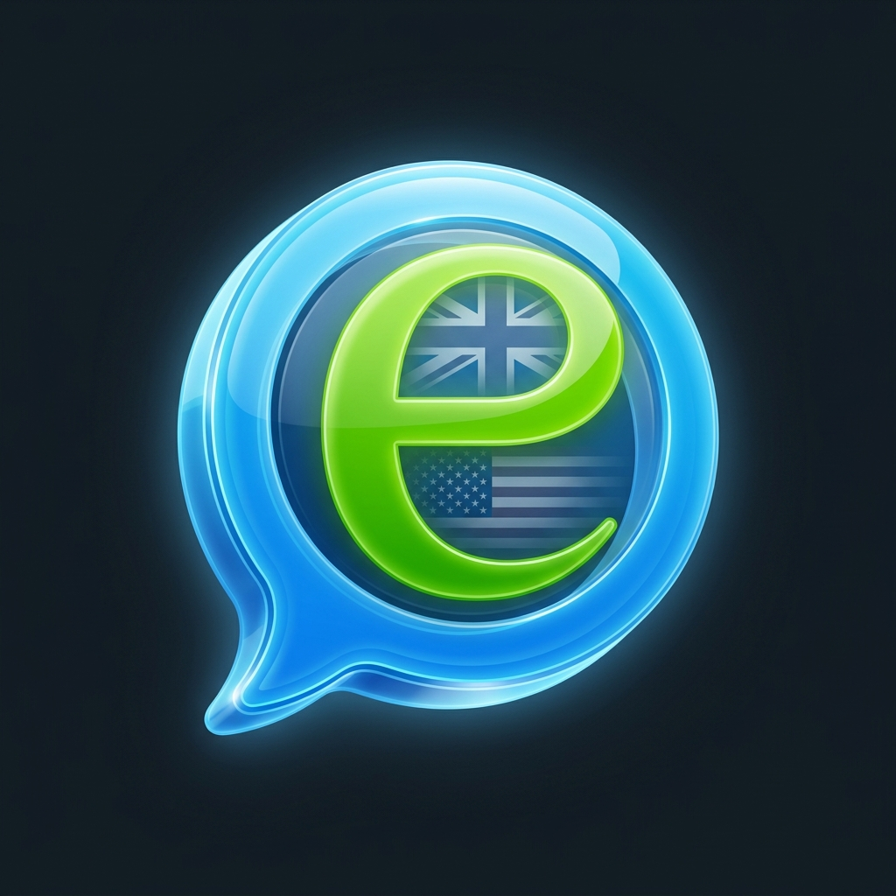

<!DOCTYPE html>
<html lang="es">
<head>
    <meta charset="UTF-8">
    <meta name="viewport" content="width=device-width, initial-scale=1.0, maximum-scale=1.0, user-scalable=no">
    <title>LingoTube - Aprende con YT</title>
    <!-- PWA Manifest -->
    <link rel="manifest" href="./manifest.json">
    <meta name="theme-color" content="#111b21">
    <meta name="apple-mobile-web-app-status-bar-style" content="black-translucent">
    <link rel="icon" type="image/png" href="./logo.png">

    <!-- Fuentes y Optimización de Red -->
    <link rel="preconnect" href="https://fonts.googleapis.com">
    <link rel="preconnect" href="https://fonts.gstatic.com" crossorigin>
    <link href="https://fonts.googleapis.com/css2?family=Outfit:wght@400;500;700;900&display=swap" rel="stylesheet">
    <link rel="preconnect" href="https://unpkg.com">
    <link rel="preconnect" href="https://cdn.tailwindcss.com">

    <!-- Librerías -->
    <script src="https://unpkg.com/react@18/umd/react.production.min.js"></script>
    <script src="https://unpkg.com/react-dom@18/umd/react-dom.production.min.js"></script>
    <script src="https://unpkg.com/@babel/standalone/babel.min.js"></script>
    <script src="https://cdn.tailwindcss.com"></script>
    <script src="https://unpkg.com/lucide@latest"></script>
    <script src="https://cdn.jsdelivr.net/npm/canvas-confetti@1.9.3/dist/confetti.browser.min.js"></script>

    <script>
        tailwind.config = {
            theme: {
                fontFamily: {
                    sans: ['Outfit', 'sans-serif'],
                },
                extend: {
                    colors: {
                        dark: '#f9fafb',
                        darker: '#f3f4f6',
                        surface: '#ffffff',
                        duogreen: '#58cc02',
                        duogreenDark: '#46a302',
                        duoblue: '#1cb0f6',
                        duoblueDark: '#1899d6',
                        duoorange: '#f97316',
                        duoorangeDark: '#ea580c',
                        duopurple: '#a855f7',
                        duopurpleDark: '#9333ea',
                        duogold: '#ffc800',
                        duogoldDark: '#e5b400',
                        duosilver: '#e5e7eb',
                        duosilverDark: '#9ca3af',
                        duogray: '#37464f',
                        duotext: '#6b7280',
                        planMonday: '#8b5cf6',
                        planFriday: '#ec4899',
                        planSaturday: '#06b6d4',
                        planSunday: '#10b981'
                    },
                    animation: {
                        'bounce-slow': 'bounce 2s infinite',
                        'scale-in': 'scaleIn 0.3s cubic-bezier(0.16, 1, 0.3, 1) forwards',
                        'slide-up': 'slideUp 0.4s cubic-bezier(0.16, 1, 0.3, 1) forwards',
                        'pop-in': 'popIn 0.4s cubic-bezier(0.175, 0.885, 0.32, 1.275) forwards',
                        'fade-in': 'fadeIn 0.2s ease-out forwards',
                    }
                }
            }
        }
    </script>
    <style>
        body { background-color: #f9fafb; background-attachment: fixed; color: white; -webkit-tap-highlight-color: transparent; scroll-behavior: smooth; }
        ::-webkit-scrollbar { width: 6px; }
        ::-webkit-scrollbar-track { background: #111b21; }
        ::-webkit-scrollbar-thumb { background: #37464f; border-radius: 10px; }
        
        .duo-btn { transition: all 0.1s; border-bottom-width: 4px; }
        .duo-btn:active { transform: translateY(4px); border-bottom-width: 0px; margin-bottom: 4px; }
        
        .path-node { position: relative; z-index: 10; }
        .node-connector { position: absolute; width: 4px; z-index: 1; }

        @keyframes slideUp { 0% { transform: translateY(30px); opacity: 0; } 100% { transform: translateY(0); opacity: 1; } }
        @keyframes scaleIn { 0% { transform: scale(0.95); opacity: 0; } 100% { transform: scale(1); opacity: 1; } }
        @keyframes popIn { 0% { transform: scale(0.9); opacity: 0; } 60% { transform: scale(1.02); opacity: 1; } 100% { transform: scale(1); opacity: 1; } }
        @keyframes fadeIn { 0% { opacity: 0; } 100% { opacity: 1; } }
        
        .pt-safe { padding-top: env(safe-area-inset-top); }
        .pb-safe { padding-bottom: env(safe-area-inset-bottom); }
    </style>
</head>
<body>
    <div id="root"></div>

    <script>
        if ('serviceWorker' in navigator) {
            window.addEventListener('load', () => {
                navigator.serviceWorker.register('./sw.js').catch(err => console.log('SW error:', err));
            });
        }
    </script>

    <script type="text/babel">
        // --- ICONOS ---
        const Icon = ({ name, size = 24, className = "", color="currentColor" }) => {
            const ref = React.useRef();
            React.useEffect(() => {
                if (ref.current && lucide.icons[name]) {
                    ref.current.innerHTML = `<i data-lucide="${name}"></i>`;
                    lucide.createIcons({
                        icons: { [name]: lucide.icons[name] },
                        nameAttr: 'data-lucide',
                        attrs: { class: className, width: size, height: size, stroke: color }
                    });
                }
            }, [name, size, className, color]);
            return <span ref={ref} className="inline-flex items-center justify-center"></span>;
        };

        // --- RENDERIZADOR DE TEXTO ENRIQUECIDO (Markdown Básico) ---
        const renderRichTextHTML = (text) => {
            if (!text) return { __html: '' };
            let html = text
                .replace(/&/g, '&amp;')
                .replace(/</g, '&lt;')
                .replace(/>/g, '&gt;')
                .replace(/==([\s\S]*?)==/g, '<mark class="bg-yellow-300 text-gray-900 font-bold rounded px-1.5 py-0.5 shadow-sm">$1</mark>')
                .replace(/\*([\s\S]*?)\*/g, '<strong class="font-bold text-gray-900">$1</strong>')
                .replace(/_([\s\S]*?)_/g, '<em class="italic text-duoblue">$1</em>');
            return { __html: html };
        };

        // --- LECTOR DE CSV ROBUSTO ---
        const parseCSVText = (text) => {
            const parsedData = [];
            let inQuotes = false;
            let row = [];
            let currentField = '';

            for (let i = 0; i < text.length; i++) {
                const char = text[i];
                const nextChar = text[i+1];

                if (char === '"') {
                    if (inQuotes && nextChar === '"') {
                        currentField += '"';
                        i++; 
                    } else {
                        inQuotes = !inQuotes;
                    }
                } else if (char === ',' && !inQuotes) {
                    row.push(currentField);
                    currentField = '';
                } else if ((char === '\n' || char === '\r') && !inQuotes) {
                    if (char === '\r' && nextChar === '\n') continue;
                    
                    row.push(currentField);
                    if (row.length >= 4 && row[0].trim() !== '#' && row[0].trim() !== '') {
                        parsedData.push({
                            id: parseInt(row[0].trim()),
                            title: row[1] ? row[1].trim() : '',
                            videoUrl: row[2] ? row[2].trim() : '',
                            videoId: row[3] ? row[3].trim() : '',
                            description: row.length > 6 && row[6] ? row[6].trim() : null
                        });
                    }
                    row = [];
                    currentField = '';
                } else {
                    currentField += char;
                }
            }
            if (currentField !== '' || row.length > 0) {
                row.push(currentField);
                if (row.length >= 4 && row[0].trim() !== '#' && row[0].trim() !== '') {
                    parsedData.push({
                        id: parseInt(row[0].trim()),
                        title: row[1] ? row[1].trim() : '',
                        videoUrl: row[2] ? row[2].trim() : '',
                        videoId: row[3] ? row[3].trim() : '',
                        description: row.length > 6 && row[6] ? row[6].trim() : null
                    });
                }
            }
            return parsedData;
        };

        // --- DATOS DEL CURSO Y TIEMPOS PRECISOS ---
        const PLAYLISTS = {
            beginner: 'PLAz9gX__ElWpQ0wYCzec4AenQ91t3n7jT',
            intermediate: 'PLAz9gX__ElWorwvQHOLm-bvFigMyDvuX2',
            advanced: 'PLAz9gX__ElWrCO8O3zRRMOwj2Bk5QtXTx'
        };
        const TOTAL_CLASSES = 195;
        const CLASS_DURATION = 49 + (31 / 60); 
        const REVIEW_DURATION = 18 + (12 / 60); 

        const MOTIVATIONAL_QUOTES = [
            "La práctica distribuida mejora la retención a largo plazo en un 200%.",
            "El aprendizaje intercalado aumenta la fluidez real en un 43%.",
            "Dormir después de aprender consolida las conexiones sinápticas del vocabulario.",
            "Cometer errores señala a tu cerebro qué circuitos debe reforzar. ¡Equivócate!",
            "Recordar activamente fortalece la memoria mucho más que leer pasivamente.",
            "La fatiga cognitiva significa que estás creando nuevas redes neuronales.",
            "Fluidez es automatizar el acceso a palabras mediante mielinización."
        ];

        const SYLLABUS_DATA = [
            { level: 'beginner', title: 'Nivel Básico', desc: 'Este curso se enfoca en establecer el vocabulario fundamental, la estructura de oraciones simples, el uso del presente y la introducción al pasado y futuro.', subtitle: 'A1 - A2 (Principiante a Pre-intermedio)', color: 'duogreen', icon: 'Map', sections: [
                { range: '1 - 35', title: 'Fundamentos y Presente Simple (Clases 1 a 35)', classes: [
                    { id: 1, title: "Vocabulario básico y el verbo ser/estar", theme: "Identificación de objetos básicos y construcción de preguntas y respuestas simples afirmativas y negativas.", examples: '"A pen. A book. A telephone" (Un bolígrafo. Un libro. Un teléfono). "Is this a pen? Yes, it is" (¿Es esto un bolígrafo? Sí, lo es). "What is it? It\'s a table" (¿Qué es? Es una mesa).' },
                    { id: 2, title: "Opciones y vocabulario de bolsillo", theme: "Formular preguntas con opciones (\"or\") y practicar negaciones con contracciones.", examples: '"Is this a coin or a lighter?" (¿Es esto una moneda o un mechero?). "This is a pencil. This isn\'t a wallet" (Esto es un lápiz. Esto no es una cartera).' },
                    { id: 3, title: "Demostrativos singulares (This / That)", theme: "Diferenciar objetos que están cerca (\"this\") de objetos que están lejos (\"that\") usando vocabulario del aula.", examples: '"This is a pen. That\'s a window" (Esto es un bolígrafo. Eso es una ventana). "This isn\'t a book. That\'s not a door" (Esto no es un libro. Eso no es una puerta).' },
                    { id: 4, title: "Preguntas con 'Qué' (What)", theme: "Automatizar la pregunta básica para identificar objetos.", examples: '"What\'s this? What\'s that?" (¿Qué es esto? ¿Qué es eso?).' },
                    { id: 5, title: "Mapas y continentes", theme: "Respuestas cortas negativas y corrección de información usando geografía básica.", examples: '"Is this a map of Europe? No, it\'s not. What is it? It\'s a map of Asia" (¿Es este un mapa de Europa? No. ¿Qué es? Es un mapa de Asia).' },
                    { id: 6, title: "Preposiciones de lugar e interioridad (in)", theme: "Preguntar dónde está un lugar específico usando \"where\" y la preposición \"in\" (en/dentro de).", examples: '"Is Madrid in France? No, it\'s not... Where is it? It\'s in Spain" (¿Está Madrid en Francia? No. ¿Dónde está? Está en España).' },
                    { id: 7, title: "Ciudades y países", theme: "Clasificar lugares geográficos.", examples: '"Is Spain a city or a country? It\'s a country" (¿Es España una ciudad o un país? Es un país). "Is Dublin a city or a country? It\'s a city".' },
                    { id: 8, title: "Los puntos cardinales", theme: "Describir la ubicación geográfica exacta (north, south, east, west, center).", examples: '"Is Seville in the north of Spain or in the south of Spain? It\'s in the south of Spain" (¿Está Sevilla en el norte o en el sur de España? Está en el sur).' },
                    { id: 9, title: "Calles, ríos y autopistas", theme: "Ampliación de vocabulario geográfico y de infraestructura.", examples: '"Is the M30 a motorway in Madrid...?" (¿Es la M30 una autopista en Madrid...?). "Is the Mississippi a river or a street?" (¿Es el Mississippi un río o una calle?).' },
                    { id: 10, title: "Adjetivos opuestos básicos (big/small, long/short)", theme: "Describir el tamaño y la longitud de ciudades y ríos.", examples: '"Is London a big city or a small city? It\'s a big city" (¿Es Londres una ciudad grande o pequeña? Es grande). "Is the Ebro a long river or short river?" (¿Es el Ebro un río largo o corto?).' },
                    { id: 11, title: "Repaso de adjetivos", theme: "Consolidación de \"big/small\" y \"long/short\" con nuevas ciudades y calles.", examples: '"Is Santander a big city or a small city?". "Is Oxford Street a long street or a short street?".' },
                    { id: 12, title: "Presentación de personas (Who)", theme: "Presentar a personas por su nombre y preguntar \"¿Quién es?\".", examples: '"This is Alberto Alonso". "Is this Philip Johnson? No... Who is it? It\'s Michael Johnson".' },
                    { id: 13, title: "Pronombres he/she y estado civil", theme: "Distinguir género (he/she, man/woman) y estado civil (married/single).", examples: '"Is he a man or a woman? He\'s a man. Is he married or single? He\'s single".' },
                    { id: 14, title: "Nacionalidades I", theme: "Preguntar y responder sobre nacionalidades.", examples: '"He\'s not German. He\'s English". "What nationality is Luigi Barini? He\'s Italian".' },
                    { id: 15, title: "Nacionalidades II y repaso de género", theme: "Agrupar descripciones completas de personas.", examples: '"What nationality is Karly Carson? She\'s Canadian". "This is Carly Carson. She\'s a woman and she\'s Canadian".' },
                    { id: 16, title: "Pronombres I/you con too/either", theme: "Expresar similitudes en afirmaciones (\"too\") y en negaciones (\"either\").", examples: '"I\'m in Spain and you\'re in Spain, too". "I\'m not Chinese and you\'re not Chinese either".' },
                    { id: 17, title: "Preguntar el origen", theme: "Formular preguntas directas e indirectas sobre la procedencia.", examples: '"Are you Spanish?". "Where are you from? I\'m from Spain".' },
                    { id: 18, title: "Adjetivos descriptivos físicos", theme: "Describir la apariencia de personas y ciudades (tall/short, fat/slim, pretty/ugly).", examples: '"Are you tall or short? I\'m tall". "Is Avila a pretty city or an ugly city?".' },
                    { id: 19, title: "Dificultad y números del 1 al 10", theme: "Uso de \"easy\" y \"difficult\". Introducción a los números.", examples: '"Is English easy or difficult for you? It\'s easy for me". "1 2 3 4 5 6 7 8 9 10".' },
                    { id: 20, title: "Colores y artículos indefinidos (a/an)", theme: "Preguntar por colores. Aprender cuándo usar \"an\" en lugar de \"a\".", examples: '"What color is this? It\'s green". "An apple. An orange. An armchair".' },
                    { id: 21, title: "Adjetivos de riqueza y el pronombre 'one'", theme: "Uso de \"rich/poor\" y la palabra \"one\" para evitar repetir el sustantivo.", examples: '"Is England a rich country or a poor country?". "Which dog is on the sofa? The big one or the small one? The big one".' },
                    { id: 22, title: "Demostrativos en plural (these/those)", theme: "Diferenciar objetos plurales cerca (\"these\") y lejos (\"those\").", examples: '"Which book is blue? The small one is". "These are pens. Those are pencils".' },
                    { id: 23, title: "Preguntas en plural y contracciones", theme: "Construir negaciones y preguntas en plural con el verbo ser/estar.", examples: '"Are these pens? No, they\'re not... What are they? They\'re books".' },
                    { id: 24, title: "Nacionalidades en plural e introducción al Presente Continuo", theme: "Formar plurales de gentilicios e introducción a acciones en el momento (-ing).", examples: '"Are the people in Scotland Scottish or English?". "Are we alive? Yes... Are we sitting? Yes, we are".' },
                    { id: 25, title: "Posturas y preposiciones de lugar", theme: "Acciones físicas de estar de pie o sentado y ubicación respecto a otras personas.", examples: '"Are you sitting or standing? I\'m sitting". "Is Sarah sitting in front of Jane or behind her?".' },
                    { id: 26, title: "Pronombres objeto con 'for' y números del 11 al 20", theme: "Indicar para quién es algo usando me, you, him, her.", examples: '"Is this for me or for her? It\'s for her". "11 12 13 14 15 16 17 18 19 20".' },
                    { id: 27, title: "El verbo dar y decenas matemáticas", theme: "Expresar la acción continua de dar objetos a diferentes personas y contar de 10 en 10.", examples: '"You\'re giving me a book. I\'m giving him a book". "11 21 31...".' },
                    { id: 28, title: "Verbos con la preposición 'to'", theme: "En inglés, escuchar y hablar a alguien siempre requiere \"to\".", examples: '"Am I talking to you or to them? You\'re talking to me". "Are you listening to me or to Richard? I\'m listening to you".' },
                    { id: 29, title: "Verbos de movimiento y preposiciones direccionales", theme: "Expresar de dónde a dónde se va y el movimiento hacia un lugar.", examples: '"Where\'s this plane going? It\'s going from London to New York". "I\'m going towards the door".' },
                    { id: 30, title: "Acciones manuales continuas", theme: "Diferenciar entre sostener algo, llevar algo encima o hacer una pregunta.", examples: '"Am I holding a blue folder or a brown folder?". "Am I asking you a question in English...?".' },
                    { id: 31, title: "Adjetivos posesivos singulares y números a partir de 100", theme: "Establecer propiedad directa (mío/tuyo).", examples: '"Is this my book or your book? It\'s your book". "100 101 102... 267 342 170".' },
                    { id: 32, title: "El Genitivo Sajón y el verbo apuntar", theme: "Expresar posesión añadiendo 's al nombre de la persona.", examples: '"This is Maria\'s pen". "Am I pointing at my book or at your book? You\'re pointing at your book".' },
                    { id: 33, title: "Adjetivos posesivos de 3ª persona", theme: "Posesivos para él, ella y objetos/ciudades.", examples: '"This is my pen and that\'s his pen...". "Sevilla is famous for its bull ring".' },
                    { id: 34, title: "Adjetivos posesivos plurales", theme: "Posesivos para 'nuestro' y 'su' (de ellos).", examples: '"Is the book on our side of the table or on their side of the table? It\'s on their side of the table".' },
                    { id: 35, title: "Repaso general de posesivos y días de la semana", theme: "Contraste final de posesivos y conceptos de tiempo.", examples: '"These are their books and those are his books". "Today is Tuesday. What day is tomorrow? Tomorrow\'s Wednesday".' }
                ] },
                { range: '36 - 75', title: 'Existencia, Cantidad y Primeros Phrasal Verbs (Clases 36 a 75)', classes: [
                    { id: 36, title: "Existencia en singular (There is / There isn't)", theme: "Uso de \"hay\" para singular, afirmaciones, negaciones y preguntas.", examples: '"Is there a pen on the table? Yes, there is" (¿Hay un bolígrafo en la mesa? Sí, lo hay). "Is there an elephant on the table? No, there isn\'t".' },
                    { id: 37, title: "Sustantivos incontables con some / any", theme: "Expresar la existencia de cantidades no contables (como líquidos) en frases afirmativas, negativas e interrogativas.", examples: '"There\'s some ink in the bottle" (Hay algo de tinta en la botella). "Is there any milk on the floor? No, there isn\'t any milk on the floor".' },
                    { id: 38, title: "Preguntas de existencia en plural e incontables (Are there any...? / Is there any...?)", theme: "Formular preguntas sobre si \"hay\" algo plural o incontable.", examples: '"Are there any toys on the floor? Yes, there are" (¿Hay juguetes en el suelo? Sí, los hay). "Is there any air in the room?" (¿Hay aire en la habitación?).' },
                    { id: 39, title: "El uso de 'Algunos/as' (Some)", theme: "Expresar cantidades parciales o divisiones de grupos usando \"some\".", examples: '"Some water is in the bottle and some is in the glass" (Algo de agua está en la botella y algo está en el vaso). "Some pens are on the table and some are on the floor".' },
                    { id: 40, title: "Cantidad contable y distancia (How many & Near / Far from)", theme: "Preguntar \"¿Cuántos?\" y describir la proximidad de los lugares.", examples: '"How many pens are there on this table? There are three pens" (¿Cuántos bolígrafos hay en esta mesa? Hay tres). "Is it near Kadith or far from Kadith? It\'s near Khalif" (¿Está cerca de Cádiz o lejos de Cádiz?).' },
                    { id: 41, title: "Números ordinales y cantidad incontable (How much)", theme: "Los primeros 10 números ordinales y preguntar \"¿Cuánto?\".", examples: '"First, second, 3rd, 4th, 5th...". "How much money is there in your wallet? There\'s €40 in my wallet" (¿Cuánto dinero hay en tu cartera? Hay 40€).' },
                    { id: 42, title: "Familia y los meses del año", theme: "Relaciones familiares básicas y los primeros seis meses usando números ordinales.", examples: '"Danny is Janet\'s son. Janet is Danny\'s mother". "January is the first month of the year...".' },
                    { id: 43, title: "Fechas y preposiciones de tiempo (in / on)", theme: "Decir fechas exactas y meses.", examples: '"The 16th of May. May 16th". "Is Christmas in October? No, it\'s not... When is it? It\'s in December".' },
                    { id: 44, title: "La hora y los años", theme: "Preguntar y decir la hora, y leer años de cuatro cifras.", examples: '"What time is it? It\'s 10 to 1" (¿Qué hora es? Son las 1 menos 10). "What time is it? It\'s half 1". "1901, 2002...".' },
                    { id: 45, title: "Saludos y números grandes", theme: "Fórmulas de cortesía para saludar y dictado de cientos de miles.", examples: '"How do you do? How are you? How are you doing? How\'s it going?". "341,562...".' },
                    { id: 46, title: "Órdenes e imperativos (Tell me to...)", theme: "Dar instrucciones directas usando acciones físicas y describir la acción.", examples: '"Tell me to get up. Get up, please. What am I doing? You\'re getting up".' },
                    { id: 47, title: "Por qué / Porque y Posesión absoluta (Why / Because & Whose)", theme: "Explicar motivos y preguntar \"¿De quién es?\".", examples: '"Why am I talking to you? You\'re talking to me because I\'m looking at you". "Whose bedroom is this? It\'s my room".' },
                    { id: 48, title: "Presente continuo con alternativas (or)", theme: "Opciones realizando acciones.", examples: '"Am I reading the book or holding the book? You\'re holding the book".' },
                    { id: 49, title: "Pronombres posesivos (Mine, yours, his, hers...)", theme: "Reemplazar el sustantivo para hablar de pertenencias.", examples: '"That book is mine. Where\'s yours? Those pens are his. Hers are on the table". "This is yours and that\'s ours".' },
                    { id: 50, title: "Verbo tener afirmativo y 'también'", theme: "Afirmar la posesión en primera y segunda persona.", examples: '"I have a watch. And you? I have a watch, too".' },
                    { id: 51, title: "Verbo tener en negativa, 'tampoco' y preguntas", theme: "Negar posesiones e introducir el auxiliar Do.", examples: '"I don\'t have a million dollars. And you? I don\'t have a million dollars either". "Do you have a car? Yes, I do".' },
                    { id: 52, title: "Preguntas indirectas de posesión (Ask me if...)", theme: "Transformar una instrucción en una pregunta directa usando Do.", examples: '"Ask me if I have a car. Do you have a car?".' },
                    { id: 53, title: "La edad y posesión en plural", theme: "Expresar la edad con el verbo to be y usar we/they con el verbo to have.", examples: '"How old is George Clooney? He\'s about 50 years old". "Do we have a car? Yes, we do".' },
                    { id: 54, title: "Verbo tener en 3ª persona singular (Does he/she have...?)", theme: "Uso del auxiliar Does y doesn't para él/ella.", examples: '"Do you have a brother? Yes, I do. Does he have a piano? No, he doesn\'t".' },
                    { id: 55, title: "Cuantificadores y 3ª persona (How many + 3rd person 'have')", theme: "Preguntar por la cantidad exacta de posesiones de un tercero.", examples: '"Does she have a computer? No, she doesn\'t". "How many bottles of wine does your brother have? My brother has three bottles of wine".' },
                    { id: 56, title: "Rutinas y comidas del día", theme: "Hablar de hábitos diarios en horarios específicos.", examples: '"Do you have breakfast at 7:00 every day? Yes, I have breakfast at 7:00 every day".' },
                    { id: 57, title: "Presente simple y cláusulas relativas (where/what)", theme: "Conjugación básica de rutinas unida por pronombres relativos.", examples: '"I work where she works. I live where she lives. I eat what they eat". "I know where she shops".' },
                    { id: 58, title: "Adverbios de frecuencia (always, sometimes, never)", theme: "Responder a la pregunta \"¿Con qué frecuencia?\".", examples: '"How often do you study? I always study". "How often do you play football? I never play football".' },
                    { id: 59, title: "Frecuencia específica (twice a week)", theme: "Expresar la periodicidad exacta de una acción.", examples: '"How often do you read the newspaper? I read the newspaper twice a week". "I go to the dentist twice a year".' },
                    { id: 60, title: "Phrasal verbs - Quitarse ropa (Take off)", theme: "Instrucciones usando verbos compuestos.", examples: '"Tell me to take off my watch. Take off your watch, please".' },
                    { id: 61, title: "El verbo intentar (try to do)", theme: "Expresar el intento de hacer una acción en presente continuo.", examples: '"What am I trying to do? You\'re trying to put a book in your pocket".' },
                    { id: 62, title: "Phrasal verbs - Recoger (Pick up)", theme: "Recoger o agarrar algo, combinado con repaso de fechas completas.", examples: '"January 29th, 1999". "Tell me to pick up my pen. Pick up your pen... You\'re picking up your pen".' },
                    { id: 63, title: "El verbo gustar (like / like to)", theme: "Expresar gustos personales generales y aficiones.", examples: '"Do you like Spain? Yes, I like Spain". "Do you like to work hard? No, I don\'t like to work hard".' },
                    { id: 64, title: "Acciones específicas, ropa y clima", theme: "Describir ropa (wear), clima (rain/snow) y partes del cuerpo.", examples: '"Is he riding a bike or a horse? He\'s riding a bike". "Is it snowing or is it raining?". "Am I pointing at my nose? No, you\'re pointing at your ear".' },
                    { id: 65, title: "Hábitos con 'usualmente' y 'alguna vez' (usually and ever)", theme: "Actividades típicas del fin de semana.", examples: '"Do you usually go to the park on Saturdays?". "Do you ever work on Sundays? No, I never work on Sundays".' },
                    { id: 66, title: "Duración y gusto por una acción (How long does it last? & like + gerund)", theme: "Preguntar cuánto dura un evento y usar el gerundio tras el verbo \"like\".", examples: '"How long does a film last? A film lasts 2 hours". "Do you like working in Spain? Yes, I like working in Spain".' },
                    { id: 67, title: "Disfrutar una acción (Enjoy + gerund)", theme: "Uso del verbo disfrutar seguido de gerundio.", examples: '"Do you enjoy playing golf? Yes, I enjoy playing golf".' },
                    { id: 68, title: "Preguntas indirectas de motivo (Ask me why)", theme: "Acciones en progreso y la pregunta indirecta \"¿por qué?\".", examples: '"Is Luigi eating rice?... He\'s eating spaghetti". "I live in Spain. Ask me why. Why do you live in Spain?".' },
                    { id: 69, title: "Dictado de números millonarios", theme: "Cifras en los millones.", examples: '"4,414,480... 3,540,217".' },
                    { id: 70, title: "Objeto directo e indirecto y Emociones", theme: "Dar algo a alguien reemplazando ambos elementos por pronombres. Adjetivos emocionales.", examples: '"She\'s giving the boy a book. Is she giving it to him with her right hand or her left hand? She\'s giving it to him with her left hand". "Are you happy?... Is he sad?...".' },
                    { id: 71, title: "Verbos enseñar y lanzar (show / throw)", theme: "Similar a la clase anterior, con los verbos mostrar y lanzar.", examples: '"What\'s the man doing? He\'s showing it to them". "Are you throwing me the ball? Yes, I\'m throwing it to you".' },
                    { id: 72, title: "Pronombres reflexivos (herself, themselves, himself)", theme: "Acciones que recaen sobre el propio sujeto (mirarse, hablarse a sí mismo).", examples: '"Is she looking at herself in the mirror? Yes, she\'s looking at herself...". "Are they talking to themselves? Yes...".' },
                    { id: 74, title: "Pedir y preposiciones de ventana/bus (Ask for / Look out of / Sit on)", theme: "Uso de \"ask for\", \"look out of\", y medios de transporte.", examples: '"Are you asking me for a pen? Yes, I\'m asking you for a pen". "Is she looking out of the window?". "Is she sitting on a bus?".' },
                    { id: 75, title: "Cuantificadores inclusivos (Both of us / All of us)", theme: "Hablar de \"ambos\" o \"todos nosotros\".", examples: '"Who speaks Spanish, me or you? Both of us speak Spanish". "Who lives in Madrid? Me, you, or Claire? All of us live in Madrid".' }
                ] },
                { range: '76 - 90', title: 'Habilidades, Futuro y Condicionales (Clases 76 a 90)', classes: [
                    { id: 76, title: "Cuantificadores negativos y profesiones (Neither / None & Work as)", theme: "Expresar que \"ninguno de los dos\" (neither) o \"ninguno de varios\" (none) realiza una acción. Preguntar a qué se dedica alguien.", examples: '"Who\'s Irish? You or your boss? Neither of us are Irish". "Who speaks Chinese?... None of us speak Chinese". "What does Jim do? He works as a postman".' },
                    { id: 77, title: "Habilidades básicas con el modal 'Poder' (Can / Can't)", theme: "Expresar la capacidad de hablar diferentes idiomas.", examples: '"Can you speak Spanish? Yes, I can". "Can you speak Norwegian? No, I can\'t".' },
                    { id: 78, title: "Comparaciones de acción con 'como' (like)", theme: "Describir si una persona hace algo del mismo modo que otra.", examples: '"Do you dance like he dances? Yes, I dance like he dances". "Does he walk like you walk? No, he doesn\'t walk like I walk".' },
                    { id: 79, title: "Habilidades físicas e imposibilidades (Can)", theme: "Preguntar sobre la capacidad de realizar proezas físicas o acciones cotidianas.", examples: '"Can you lift 10 kg or can you lift 10,000 kg? I can lift 10 kg". "Can you fly like Peter Pan? No, I can\'t fly like Peter Pan".' },
                    { id: 80, title: "Preguntas con 'Can' en tercera persona", theme: "Fluidez realizando preguntas de habilidad mezclando personas.", examples: '"Can Peter Pan fly? Yes, he can". "Can your boss speak English? Yes, he can".' },
                    { id: 81, title: "Acciones opuestas y 'ser capaz de' (Be able to)", theme: "Contrastar verbos de salida/llegada y saludo/despedida, e introducción a la expresión de capacidad formal (able to).", examples: '"Am I leaving or returning? You\'re leaving". "I\'m able to speak English. You\'re able to drive".' },
                    { id: 82, title: "Futuro Simple interrogativo y respuestas cortas (Will / won't)", theme: "Uso de \"Will\" para acciones a futuro y su forma negativa \"won't\".", examples: '"Will you come here tomorrow? Yes, I will". "Will you give me €1 million? No, I won\'t".' },
                    { id: 83, title: "Futuro afirmativo con contracciones (I'll, he'll, she'll)", theme: "Aprender a usar y pronunciar la forma abreviada del futuro.", examples: '"Will you do it? Yes, I\'ll do it". "Will it rain? Yes, it\'ll rain". "He\'ll be there. He won\'t be there".' },
                    { id: 84, title: "Agilidad de preguntas en futuro (Will)", theme: "Disparar preguntas cortas sobre acciones futuras para mejorar los reflejos.", examples: '"Will you go? Will he do it? Will she be here? Will they come? Will it rain? Will I be ready? Will the car start?".' },
                    { id: 85, title: "Presente continuo para planes futuros", theme: "Expresar intenciones o planes agendados a futuro usando -ing.", examples: '"Are you leaving next week? Yes, I\'m leaving next week". "Are you coming tomorrow? No, I\'m not coming tomorrow".' },
                    { id: 86, title: "El Primer Condicional afirmativo (Will + if)", theme: "Describir acciones futuras que dependen de una condición.", examples: '"Will you go if he has a car? Yes, I\'ll go if he has a car". "Will they cancel the game if it rains? Yes, they\'ll cancel the game if it rains".' },
                    { id: 87, title: "El Primer Condicional negativo (Won't + if)", theme: "Plantear consecuencias negativas ante una condición.", examples: '"Will you go if it rains? No, I won\'t go if it rains". "Will he come if I\'m not there? No, he won\'t come if you\'re not there".' },
                    { id: 88, title: "Futuro con intención o plan (Going to affirmative)", theme: "Hablar sobre cosas que se van a hacer con seguridad usando \"going to\".", examples: '"Are you going to study? Yes, I\'m going to study". "Are you going to run? Yes, I\'m going to run".' },
                    { id: 89, title: "Futuro con 'Going to' negativo e interrogativo", theme: "Negar los planes futuros e interrogar sobre planes de terceros.", examples: '"Are you going to study? No, I\'m not going to study". "Am I going to give you a million? No, you aren\'t going to give me a million". "Is it going to rain?".' },
                    { id: 90, title: "Dictado numérico avanzado", theme: "Agilidad de comprensión auditiva con números combinados.", examples: '"4,414,444... 542,863... 341,783".' }
                ] },
                { range: '91 - 130', title: 'Rutinas, Pasado de ser/estar y Querer (Clases 91 a 130)', classes: [
                    { id: 91, title: "Contraste de Presente Simple y 'También' (Present Simple & too vs. Future)", theme: "Expresar rutinas diarias y contrastarlas con planes a futuro (\"going to\"), además del uso de \"también\" al final de la oración.", examples: '"I write emails every day. He writes emails every day, too". "Tomorrow, I\'m going to buy fruit at the market".' },
                    { id: 92, title: "'De quién' y Genitivo Sajón (Whose + Saxon Genitive)", theme: "Preguntar a quién le pertenece algo y responder usando el genitivo sajón ('s).", examples: '"Whose bedroom is this? It\'s Michael\'s bedroom". "Whose idea is that? It\'s Marta\'s idea".' },
                    { id: 93, title: "Presente Continuo vs. Presente Simple", theme: "Contrastar lo que alguien está haciendo en el momento frente a lo que hace como rutina.", examples: '"He\'s working. What\'s he doing?". "She eats apples every day. What does she eat every day?".' },
                    { id: 94, title: "Preguntas con 'Cuándo' (When)", theme: "Preguntar por el momento exacto en el que ocurren rutinas o ocurrirán planes.", examples: '"I have breakfast every day. When do you have breakfast?". "I\'m going to get up. When are you going to get up?".' },
                    { id: 95, title: "Preguntas con 'Dónde' y Fechas (Where & Dates)", theme: "Preguntar por ubicaciones de rutinas y repaso de lectura de fechas históricas.", examples: '"I live in Madrid. Where do you live?". "July 14th, 1789. The 14th of July, 1789".' },
                    { id: 96, title: "Pronombres Posesivos y 'Cuál' (Which one)", theme: "Identificar opciones específicas usando pronombres posesivos.", examples: '"Mine is the big one. Which one is yours?". "His is the white house. Which house is his?".' },
                    { id: 97, title: "Motivos y 'Saber cómo' (Why / Because & Know how to)", theme: "Preguntar y dar explicaciones, y expresar habilidades aprendidas (\"saber hacer\" algo).", examples: '"I live in Spain because my wife is Spanish. Why do you live in Spain?". "Do you know how to speak French...?".' },
                    { id: 98, title: "Comparativos de igualdad con verbos (as well as)", theme: "Comparar la calidad o destreza al realizar una acción (\"tan bien como\").", examples: '"Can you write as well as Shakespeare? No, I can\'t write as well as Shakespeare". "Can you swim as well as Michael Phelps?".' },
                    { id: 99, title: "Fracciones, porcentajes y repaso de futuro", theme: "Vocabulario matemático básico y confirmación de planes.", examples: '"1/2 is the same as 50%... 1/4 is the same as 25%". "Are you going to study English today? Yes, I\'m going to study English today".' },
                    { id: 100, title: "Repaso de respuestas cortas", theme: "Agilidad con los auxiliares en respuestas cortas afirmativas y negativas.", examples: '"Is that yours? Yes, it is. Can you play tennis? Yes, I can. Is he sitting down? No, he isn\'t. Will you help me? No, I won\'t".' },
                    { id: 101, title: "Pasado del verbo ser/estar (Was/Were questions)", theme: "Introducción a las preguntas y respuestas cortas en pasado simple.", examples: '"Were you here yesterday? No, I wasn\'t". "Was it important? Yes, it was".' },
                    { id: 102, title: "Pasado de ser/estar afirmativo", theme: "Confirmar hechos históricos o estados pasados.", examples: '"Was Cervantes Spanish? Yes, Cervantes was Spanish". "Were the Beatles famous? Yes, the Beatles were very famous".' },
                    { id: 103, title: "Pasado de ser/estar negativo", theme: "Negar hechos y descripciones en pasado.", examples: '"Was Ronald Reagan Swedish? No, Ronald Reagan wasn\'t Swedish". "Was it hot yesterday? No, it wasn\'t hot yesterday".' },
                    { id: 104, title: "Pasado con expresiones de tiempo (ago, last)", theme: "Establecer periodos en el pasado (hace \"x\" días, la semana pasada).", examples: '"Were you here two days ago? Yes, I was here two days ago". "Were they sick last week? Yes...".' },
                    { id: 105, title: "Preguntas indirectas (what / where / when)", theme: "Formular preguntas anidadas sin invertir el sujeto y el verbo.", examples: '"Do you know what he does? No, I don\'t know what he does". "Do you know where he lives? No...".' },
                    { id: 106, title: "Pronombres objeto en pasado", theme: "Identificar a personas en el pasado (\"¿Era él?\", \"¿Fueron ellos?\").", examples: '"Was it him? No, it wasn\'t him". "Was it you? No, it wasn\'t me. Who was it? It was them".' },
                    { id: 107, title: "Verbos y Adjetivos con preposiciones (Agree with / Excited about)", theme: "Uso correcto de preposiciones tras expresar acuerdo o emoción.", examples: '"Do you agree with them? Yes, I agree with them". "Are you excited about the English course?".' },
                    { id: 108, title: "Preguntas de hora en rutinas (What time)", theme: "Averiguar la hora exacta a la que ocurren las rutinas.", examples: '"What time do you get up every day? I get up at 7:00 a.m. every day". "What time does your sister get up? My sister gets up at 8:00".' },
                    { id: 109, title: "Expresiones nativas (Born in / Married to)", theme: "Expresar el lugar de nacimiento (verbo en pasado) y el estado civil con alguien.", examples: '"Where were you born? I was born in England". "Are you married to David? No, I\'m not married to David".' },
                    { id: 110, title: "La edad en el pasado (How old was...?)", theme: "Usar el verbo ser/estar (to be) en pasado para preguntar por la edad en un momento específico.", examples: '"How old was your mother when you were born? She was 28 when I was born".' },
                    { id: 111, title: "El cuantificador 'Muchos' (Many)", theme: "Negar grandes cantidades de elementos contables.", examples: '"Do you have many problems? No, I don\'t have many problems".' },
                    { id: 112, title: "El cuantificador 'Mucho' (Much)", theme: "Negar grandes cantidades de elementos incontables (dinero, tiempo, paciencia).", examples: '"Do you have much patience? No, I don\'t have much patience". "Do you have much free time?".' },
                    { id: 113, title: "Cuantificadores y expresiones (A lot of & From time to time)", theme: "Afirmar que se tiene \"un montón de\" algo y expresar acciones que se hacen \"de vez en cuando\".", examples: '"Do you have a lot of pets? Yes, I have a lot of pets". "Do you call him from time to time?".' },
                    { id: 114, title: "Plurales irregulares /es/", theme: "Formación de plurales para palabras que terminan en ch, sh, x.", examples: '"I have a watch. I have two watches. She has a dish. She has two dishes...".' },
                    { id: 115, title: "Algo / Cualquier cosa (Anything / Something)", theme: "Preguntar si hay \"algo\" usando anything y responder con something.", examples: '"Do you have anything for me? Yes, I have something for you". "Is there anything in your bag?".' },
                    { id: 116, title: "'Nada' en frases negativas (Anything in negative)", theme: "Uso de anything junto a auxiliares negativos para expresar \"nada\".", examples: '"Do you want anything from the shop? No, I don\'t want anything from the shop".' },
                    { id: 117, title: "'Anything' en futuro y planes continuos", theme: "Negaciones a futuro y usar el \"ing\" para indicar a dónde se va esta noche.", examples: '"Are you going to tell me anything? No, I\'m not going to tell you anything". "Where are you going tonight? I\'m going to the movies tonight".' },
                    { id: 118, title: "Phrasal verbs - Cuidar de (Look after)", theme: "Introducción al phrasal verb que significa atender o cuidar de alguien/algo.", examples: '"Can you look after my cat? Yes, I can look after your cat".' },
                    { id: 119, title: "Lo antes posible y verbos de bolsillo", theme: "Compromisos a futuro \"lo antes posible\" y acciones de sacar y guardar cosas.", examples: '"When will you do it? I\'ll do it as soon as possible". "Tell me to take my wallet out of my pocket".' },
                    { id: 120, title: "Phrasal verbs - Ropa (Take off / Put on)", theme: "Acciones de ponerse y quitarse prendas de vestir.", examples: '"Tell me to take off my tie. Take off your tie, please". "Tell me to put on my tie. Put on your tie, please".' },
                    { id: 121, title: "El abecedario pt. 1 y expresiones con 'catch'", theme: "Primera parte de fonética del alfabeto y verbos típicos en inglés (\"coger un resfriado / un bus\").", examples: '"Do you catch a cold every year? Yes, I catch a cold every year". "A B C D E F G H I J K L M".' },
                    { id: 122, title: "El abecedario pt. 2", theme: "Práctica intensiva de la segunda mitad del abecedario.", examples: '"N O P Q R S T U V W X Y Z".' },
                    { id: 123, title: "Deletreo y pronombres (Spelling & Nothing)", theme: "Preguntar cómo se deletrea una palabra y uso de nothing (nada) como sujeto de la frase.", examples: '"How do you spell cat? You spell cat. C A T". "Is anything happening? No, nothing is happening".' },
                    { id: 124, title: "Ahora mismo (Right now)", theme: "Dar inmediatez a la acción en progreso usando right now.", examples: '"What are they doing right now? They\'re studying in the library right now".' },
                    { id: 125, title: "Llegar y hacer la cama (Get to & Make)", theme: "Uso nativo de \"get to\" para hablar de llegar a un lugar y vocabulario con el verbo \"Make\".", examples: '"What time will you get to Boston? I\'ll get to Boston at 3:35". "Do you make the bed every day?".' },
                    { id: 126, title: "Collocations con 'Hacer' (Do homework / dishes / shopping)", theme: "Tareas domésticas y obligaciones que en inglés siempre llevan el verbo Do en lugar de Make.", examples: '"Does he do his homework every day? Yes, he does his homework every day". "Do you do the dishes every evening?".' },
                    { id: 127, title: "Frecuencia y Dependencia (Often, Go + -ing, Depend on)", theme: "El uso del adverbio \"a menudo\", ir a hacer actividades físicas, y la preposición correcta para depender de alguien.", examples: '"Do you often go shopping? Yes, I go shopping every day". "Does it depend on them? Yes, it depends on them".' },
                    { id: 128, title: "El verbo querer afirmativo (Want to)", theme: "Expresar deseo de hacer acciones.", examples: '"Do you want to come? Yes, I want to come". "Does Katie want to eat a pizza? Yes, Katie wants to eat a pizza".' },
                    { id: 129, title: "El verbo querer negativo y todo (Anything / Everything)", theme: "Rechazar acciones y uso de pronombres absolutos.", examples: '"Do you want to buy it? No, I don\'t want to buy it". "They sell everything. He can do anything".' },
                    { id: 130, title: "Agilidad de preguntas con 'Querer'", theme: "Reflejos al interrogar a diferentes personas sobre sus deseos e intenciones.", examples: '"Do you want to have a cup of tea?". "Do they want to get married? Does he want to smoke?".' }
                ] },
                { range: '131 - 195', title: 'Pasado Simple, Verbos Irregulares y Vocabulario Práctico (Clases 131 a 195)', classes: [
                    { id: 131, title: "Acordarse vs. Recordar a alguien (Remember to / Remind to)", theme: "Diferenciar entre \"acordarse de\" hacer algo (remember) y \"recordarle\" a alguien que haga algo (remind).", examples: '"Remember to brush your teeth" (Acuérdate de cepillarte los dientes). "Remind me to tidy my desk" (Recuérdame que ordene mi escritorio).' },
                    { id: 132, title: "Ofrecimientos formales (Would like + noun)", theme: "Usar \"Would you like\" para ofrecer objetos o comida/bebida de manera educada.", examples: '"Would you like a drink? Yes, I\'d like a drink". "Would she like a pay raise? Yes, she\'d like a pay raise".' },
                    { id: 133, title: "Pasado Simple regular 'Caminar' y Ofrecimientos II", theme: "Introducción al Pasado Simple con el verbo regular walk e interiorizar los ofrecimientos.", examples: '"Did he walk yesterday? Yes, he walked yesterday". "Would you like a cup of coffee? Yes, I\'d like a cup of coffee".' },
                    { id: 134, title: "Deseos y planes con 'Te gustaría' (Would like to + verb)", theme: "Preguntar qué le gustaría hacer a alguien o a dónde le gustaría ir.", examples: '"Would you like to watch the match? Yes, I\'d like to watch the match". "Where would you like to go? I\'d like to go to Bilbao...".' },
                    { id: 135, title: "Pasado Simple regular 'Abrir' y 'Cerrar'", theme: "Práctica del pasado afirmativo y preguntas con Did usando los verbos abrir y cerrar.", examples: '"Did you open yesterday? Yes, I opened yesterday". "Did they close yesterday? Yes, they closed yesterday".' },
                    { id: 136, title: "Verbos Vender y Comprar (Sell / Buy)", theme: "Uso en presente simple de los verbos comerciales.", examples: '"What do they sell? They sell salt and I buy it". "Do you buy vegetables every week? Yes, I buy vegetables every week".' },
                    { id: 137, title: "Pasado Simple regular 'Preguntar' y Odios (Asked & Hate vs. Like)", theme: "El pasado de \"ask\" y el contraste de gustos usando el verbo odiar (hate).", examples: '"Did you ask him a question yesterday? Yes, I asked him a question yesterday". "I like vegetables, but I hate fruit".' },
                    { id: 138, title: "Responder con 'Me encantaría' (I'd love to)", theme: "Mostrar entusiasmo ante invitaciones con Would like.", examples: '"Would you like to go to New York? I\'d love to go to New York".' },
                    { id: 139, title: "Pasado Simple regular 'Llamar' y 'Ayudar a'", theme: "Práctica con el verbo llamar en pasado y pedir ayuda para hacer tareas.", examples: '"Did you call me yesterday? Yes, I called you yesterday". "Can you help me to wash my car? Yes, I can help you to wash your car".' },
                    { id: 140, title: "Dictado numérico", theme: "Cifras rápidas y años.", examples: '"4,12... 7,232... 1999... 10,010".' },
                    { id: 141, title: "Pasado de Hablar / Escuchar y Dobles Pronombres", theme: "Verbos regulares de comunicación en pasado y la estructura dar algo a alguien (Give it to her).", examples: '"Did you talk to him yesterday? Yes, I talked to him yesterday". "Give her the watch. Give it to her".' },
                    { id: 142, title: "Pasado Simple Negativo (Didn't)", theme: "Negar acciones en pasado con todos los verbos regulares vistos.", examples: '"Did you walk to work yesterday? No, I didn\'t walk to work yesterday". "Did he open the door? No, he didn\'t open the door".' },
                    { id: 143, title: "Pasado de Intentar y Phrasal verbs de recoger", theme: "Pasado de try (cambiando la 'y' por 'ied') e instrucciones de recoger objetos o dejarlos en la mesa.", examples: '"Did you try to work yesterday? Yes, I tried to work yesterday". "Tell me to pick up the pen. Pick up the pen. Am I picking it up or putting it down? You\'re picking it up".' },
                    { id: 144, title: "Deletreo de palabras", theme: "Preguntar cómo se escribe un verbo o palabra.", examples: '"How do you spell the verb buy? You spell buy b u y". "How do you spell the word question?".' },
                    { id: 145, title: "Pasado de Empezar / Parar y Prohibiciones (Can't)", theme: "Verbos regulares de inicio y fin, y expresar lo que no está permitido hacer (You can't).", examples: '"Did you start and stop yesterday? Yes, I started and I stopped yesterday". "Can you drive fast in the city center? No, you can\'t drive fast in the city center".' },
                    { id: 146, title: "Pasado Simple Irregular - 'Ir' (Went)", theme: "Aprendizaje del pasado del verbo go.", examples: '"Did you go to the shop yesterday? Yes, I went to the shop yesterday".' },
                    { id: 147, title: "Pasado de Terminar y Adverbios de Frecuencia", theme: "El pasado de finish (con sonido /t/ final) y preguntas de frecuencia con adverbios (never, sometimes, often).", examples: '"Did he finish yesterday? Yes, he finished yesterday". "How often do you go to parties? I never go to parties".' },
                    { id: 148, title: "Pasado Simple Irregular - 'Hablar' (Spoke)", theme: "Aprendizaje del pasado irregular de speak.", examples: '"Did you speak English yesterday? Yes, I spoke English yesterday".' },
                    { id: 149, title: "Pasado de Empujar / Tirar y Reflejos de Pasado", theme: "Verbos regulares push y pull combinados con práctica rápida de los pasados vistos.", examples: '"Did you pull the chain or did you push it? I pulled it". "Did you work yesterday? Did you walk to work? Did you start at 8:00?".' },
                    { id: 150, title: "Pasado Simple Irregular - 'Hacer' (Made)", theme: "Pasado de make utilizado en comida y tareas domésticas.", examples: '"Did you make an omelette last night? Yes, I made an omelette last night". "Did you make the bed this morning?".' },
                    { id: 151, title: "Pasado de Reír / Llorar y Acciones corporales", theme: "Emociones en pasado y vocabulario continuo de acciones involuntarias o corporales.", examples: '"Did they laugh yesterday? Yes, they laughed yesterday. Did you cry yesterday? Yes, I cried yesterday". "What am I doing? You\'re yawning... sneezing... coughing... scratching my neck".' },
                    { id: 152, title: "Pasado Simple Negativo Mixto", theme: "Automatización del uso de didn't + verbo en forma base.", examples: '"Did you stop at the traffic lights? No, I didn\'t stop at the traffic lights". "Did you speak to your husband about the problem? No, I didn\'t speak...".' },
                    { id: 153, title: "Pasado de Despegar / Aterrizar e Info. Personal", theme: "Verbos de vuelos en pasado y fluidez para obtener información de terceros.", examples: '"Did your plane take off at 3:00? Yes, my plane took off at 3:00. Did Yalda\'s plane land at 4:30? Yes...". "What\'s your sister\'s name? How old is she? What does she do?".' },
                    { id: 154, title: "Emociones, Estados y 'Por qué' (Why)", theme: "Responder a estados de ánimo y características con el motivo.", examples: '"I\'m sad. Why are you sad?". "We\'re upset. Why are you upset?". "The cheese is hard. Why is the cheese hard?".' },
                    { id: 155, title: "Pasado de Gritar / Susurrar y Horarios", theme: "Verbos regulares relacionados con la voz y el uso del presente simple para horarios de trenes y reuniones.", examples: '"Did you shout yesterday? Yes, I shouted yesterday. Did they whisper yesterday? Yes...". "What time does the train leave? The train leaves at 2:00".' },
                    { id: 156, title: "Preguntas en Tercera Persona Plural", theme: "Hacer preguntas anidadas sobre un par de personas (gemelos).", examples: '"How old are your twin brothers? What company do they work for? Do they live together?".' },
                    { id: 157, title: "Rutina vs. Pasado y Distancias (How far)", theme: "Contrastar \"usualmente\" con \"esta mañana\" en los verbos levantarse e ir a la cama, y preguntar la distancia entre ciudades.", examples: '"What time do you usually get up? I usually get up at 7:30. And what time did you get up this morning? I got up at 7:45". "How far is it from Madrid to Toledo? It\'s about 70 km from Madrid to Toledo".' },
                    { id: 158, title: "El Pronombre 'Ones'", theme: "Evitar la repetición del sustantivo plural usando ones.", examples: '"I like beautiful cities, but I don\'t like ugly ones". "Sam likes intelligent people, but he doesn\'t like stupid ones".' },
                    { id: 159, title: "Pasado Irregular 'Comer / Beber' y 'Gastar en'", theme: "Pasado de comer y beber, y el vocabulario de gastos que usa la preposición on.", examples: '"Did you eat yesterday? Yes, I ate yesterday. Did you drink a coffee this morning? Yes, I drank a coffee this morning". "I spend money on food, but I don\'t spend money on clothes".' },
                    { id: 160, title: "Reflejos rápidos en Pasado", theme: "Lluvia de preguntas mezclando todos los verbos pasados (irregulares y regulares).", examples: '"Did your wife shout at you yesterday? Did they make a cake two days ago? Did you cry during the film? Did you get up early this morning?".' },
                    { id: 161, title: "Pasado de Llegar / Salir y Rutinas Absolutas", theme: "Contraste de arrive/leave en pasado y rutinas fijas con el adverbio \"siempre\".", examples: '"Did you arrive yesterday? Yes, I arrived yesterday. Did the train leave at 3:00? Yes, the train left at 3:00". "Does your boss always get to work at 7:00? Does your boss always wear a tie?".' },
                    { id: 162, title: "Pasado Simple Negativo Mixto", theme: "Responder en negativo a verbos pasados de viaje y trabajo.", examples: '"Did your plane take off on time? No, it didn\'t take off on time". "Did you leave work at 7? No, I didn\'t leave work at 7".' },
                    { id: 163, title: "Pasado de Jubilarse y Decir (Retired & Said)", theme: "Hablar de la jubilación y el verbo say con pronombres indefinidos.", examples: '"Did she retire last year? She retired last year". "Did she say anything? She said something. Did he say anything? No, he didn\'t say anything".' },
                    { id: 164, title: "Pasado Simple Irregular 'Contar/Decir a alguien' (Told)", theme: "Contraste con la clase anterior; tell requiere un pronombre objeto (tell me/tell you).", examples: '"Did she tell you anything? She told me something. Did I tell you anything? No, you didn\'t tell me anything".' },
                    { id: 165, title: "Pasado de Ayudar y Doler (Helped & Hurt)", theme: "Pasado de ayudar a alguien y el verbo irregular hurt, que no cambia en pasado.", examples: '"Did she help her to do her homework? Yes, she helped her to do her homework". "Did her arm hurt yesterday? Yes, her arm hurt yesterday. Does your arm hurt now? No...".' },
                    { id: 166, title: "Por qué / Porque y Preguntas Indirectas Locativas", theme: "Explicar orígenes/nacionalidades e inicio a la cortesía en supermercados (\"¿Me puedes decir dónde encontrar...?\").", examples: '"Does she speak Spanish? Yes... Why does she speak Spanish? She speaks Spanish because she is Spanish". "Can you tell me where to find the milk?...".' },
                    { id: 167, title: "Pasado de Dejar caer / Romper y Planes Futuros", theme: "Consecuencias en pasado de caerse un objeto y repaso de planes para esa noche.", examples: '"Did she drop the cup? Yes, she dropped the cup and broke it". "Are you going to go to the cinema tonight? No, I\'m not going to go to the cinema tonight".' },
                    { id: 168, title: "Futuro con 'Going to' y Pronombres Repetitivos (One/Ones)", theme: "Más práctica de planes a futuro y recuperar el uso de \"one/ones\" con colores o ubicaciones.", examples: '"Are you going to buy a house next week? Yes, I\'m going to buy a house next week". "He didn\'t buy the green one. He bought the blue one and the yellow one. Which ones did he buy?".' },
                    { id: 169, title: "Frecuencia en Pasado y Tipos de cosas (What kind of...)", theme: "Expresar cuántas veces sucedió algo la semana pasada y preguntar \"Qué tipo de...\".", examples: '"How many times did they play tennis last week? They played tennis three times last week". "What kind of car does that man drive? That man drives a Porsche".' },
                    { id: 170, title: "Importar / Molestar y Preferencias (Do you mind + ing)", theme: "Pedir permiso o favores usando \"Do you mind\" seguido de gerundio, y hablar de fobias a volar.", examples: '"Do you mind having lunch with me? No, I don\'t mind having lunch with you". "Does she hate takeoff? She hates takeoff... Do you prefer landing? Yes, I prefer landing".' },
                    { id: 171, title: "Pertenencias y Peticiones Educadas (Belong to)", theme: "Usar el verbo pertenecer en lugar de los pronombres posesivos y pedir favores (ayudar, sentarse cerca).", examples: '"Who does this belong to? This belongs to her". "Do you mind helping me? Do you mind speaking more slowly?".' },
                    { id: 172, title: "Pasado Simple Negativo y Pedir en Restaurantes", theme: "Afianzar el didn't y frases útiles para interactuar con camareros.", examples: '"Did your neighbor retire last year? No, my neighbor didn\'t retire last year". "Can I see the menu, please? Yes, you can see the menu. Can I have some water, please?".' },
                    { id: 173, title: "Trabajar para y el Doble Genitivo (Work for & A friend of mine)", theme: "Indicar para qué empresa se trabaja y hablar de conocidos o amigos propios/de otros.", examples: '"Where does he work? He works for Vaughn Systems". "Is a friend of his on holiday? Yes... Is a friend of yours on holiday? Yes, a friend of mine is on holiday".' },
                    { id: 174, title: "Importar un evento e 'Impresoras y máquinas' (Do you mind if)", theme: "Preguntar si a alguien le molesta una condición (si llueve, si me levanto) y usar el verbo work para referirse al funcionamiento de aparatos.", examples: '"Do you mind if it rains in the summer? No, I don\'t mind if it rains in summer". "Does the photocopier work? No, the photocopier doesn\'t work... Did the fax machine work yesterday?".' },
                    { id: 175, title: "Aparcar, Preposición 'Enfrente de' y Preguntas Condicionales Indirectas", theme: "Vocabulario de coches con la preposición opposite y construir frases introducidas por \"Sabes si...\".", examples: '"Where did he park his car? He parked his car opposite the office...". "Do you know if he likes tuna fish? No, I don\'t know if he likes tuna fish".' },
                    { id: 176, title: "Saber si... y Cartelera (What's on...)", theme: "Continuación de \"Saber si\" y preguntar por la programación de cine, teatro o televisión.", examples: '"Do you know if I live nearby? Do you know if my neighbor makes a lot of noise?". "What\'s on at the cinema in Madrid? A horror movie is on at the cinema in Madrid".' },
                    { id: 177, title: "Pasado Irregular 'Leer' y Saber dónde está alguien", theme: "El pasado del verbo read (se escribe igual, se pronuncia diferente) y preguntar por el paradero de alguien o algo de forma indirecta.", examples: '"Did you read any books last year? Yes, I read some books last year". "Do you know where your neighbor is? No, I don\'t know where my neighbor is".' },
                    { id: 178, title: "Saber dónde... y Temática de Libros/Películas (What is... about?)", theme: "Práctica del \"Sabes dónde\" y formular la pregunta \"¿De qué trata?\".", examples: '"Do you know where your boss lives? Do you know where I parked yesterday?". "What\'s your book about? What\'s your favorite movie about?".' },
                    { id: 179, title: "Pasado Irregular 'Escribir' y Deletreo (Wrote)", theme: "Aprendizaje del pasado de write y deletreo de palabras variadas.", examples: '"Did you write any emails yesterday? Yes, I wrote some emails yesterday". "Stamp. S T A M P. Island. I S L A N D".' },
                    { id: 180, title: "Saber 'Qué' y Vocabulario de Libros", theme: "Preguntas indirectas que empiezan por what y términos de diseño editorial.", examples: '"Do you know what my neighbor wants? No, I don\'t know what your neighbor wants". "The email address appears on the back cover... David appears on the front cover".' },
                    { id: 181, title: "Pasado Irregular 'Conducir' y Saber 'Qué' en pasado", theme: "Pasado de drive y aplicación de la estructura \"¿Sabes qué...?\" a eventos pasados.", examples: '"Did you drive a bus last month? Yes, I drove a bus last month". "Do you know what your neighbor read last month? Do you know what I had for breakfast this morning?".' },
                    { id: 182, title: "Pasado Irregular 'Costar' y Dar Indicaciones (Cost & How do I get to...)", theme: "El verbo cost, que se mantiene igual en pasado, y explicaciones para llegar a lugares en la ciudad.", examples: '"How much did your shoes cost? They cost around €50". "How do I get to the library? Turn left at the traffic lights. You\'ll see it on your left. You can\'t miss it".' },
                    { id: 183, title: "Pasado Irregular 'Ver' y Dictado de Números (Saw)", theme: "Pasado de see (saw con sonido /o/) y reconocimiento de cientos de miles.", examples: '"Did you see me yesterday? Yes, I saw you yesterday. Did you see your boss this morning?". "341,562... 742,555...".' },
                    { id: 184, title: "Expresiones de entendimiento y Cuantificadores 'Quedar'", theme: "Asegurarse de que el oyente te entiende (\"¿Sabes a qué me refiero?\") y expresar cuánto \"queda\" de un objeto.", examples: '"Do you know what I mean? Yes, I know what you mean. Are you absolutely positive? You know what I mean?". "How many sweets are left? There are two sweets left. How much sugar is there left?".' },
                    { id: 185, title: "Pasado Irregular 'Entender/Decir' y 'En todas partes'", theme: "El pasado de understand combinado con said, y afirmar que algo está \"por todos lados\".", examples: '"Did you understand what I said yesterday? Yes, I understood what you said yesterday". "Are there any tourists in summer? Yes, in summer there are tourists everywhere".' },
                    { id: 186, title: "Números en Pasado Negativo y 'En ninguna parte'", theme: "Desmentir afirmaciones exageradas en pasado y negar ubicaciones.", examples: '"Did you read 100 books last year? No, I didn\'t read 100 books last year". "Are there any tourists in November? No, in November, there aren\'t any tourists anywhere".' },
                    { id: 187, title: "'En cualquier parte' y Deletreo (Anywhere)", theme: "El uso de anywhere en afirmaciones para expresar libertad de lugar (\"donde sea\"), y práctica de deletreo.", examples: '"Where in the office can I leave my bag? You can leave your bag anywhere in the office". "Envelope. E N V E L O P E... Future. F U T U R E".' },
                    { id: 188, title: "Pasado Irregular 'Dormir' y Adjetivos Posesivos Finales", theme: "Pasado de sleep y repaso de mine/yours/those/these.", examples: '"Did you sleep all morning? Yes, I slept all morning". "Are these mine? Yes, these are yours. Were those shoes cheap? Those shoes were cheap".' },
                    { id: 189, title: "Pasado de Decidir y 'Pasar tiempo'", theme: "Expresar decisiones tomadas (decided + infinitivo) y la expresión para invertir tiempo haciendo una acción.", examples: '"Did you decide to buy a bigger house? Yes, I decided to buy a bigger house". "Do you spend a lot of time studying English? Yes, I spend a lot of time studying English".' },
                    { id: 190, title: "Fechas históricas y Pasado de Llegar a un sitio (Got to)", theme: "Agilidad leyendo años y uso nativo de get to como sinónimo de llegar (arrive).", examples: '"1924... 2003... 1809... 1976". "Did you arrive in Madrid on Monday? Yes, I got to Madrid on Monday. Yes, I arrived to Madrid on Monday".' },
                    { id: 191, title: "Pasado de Prometer y Tiendas en Genitivo", theme: "Hacer promesas en el pasado y la forma inglesa de referirse a las tiendas locales (carnicería, panadería).", examples: '"Did you promise to help her move? Yes, I promised to help her move". "Did you go to the bakers yesterday? Yes, I went to the bakers yesterday. Does she go to the butchers every day?".' },
                    { id: 192, title: "La edad en el pasado y Olvidar vs. Dejar", theme: "Dos maneras de expresar la edad en la que sucedió un evento, y la diferencia gramatical entre olvidar un objeto (forget) o dejarlo en un lugar específico (leave).", examples: '"When I was 30, I moved to Paris. At the age of 30, I moved to Paris". "Did you leave the keys at home? No, I didn\'t leave the keys at home. Did she forget the umbrella? Yes, she forgot the umbrella".' },
                    { id: 193, title: "Pasado de Necesitar y Enfermedades comunes", theme: "Obligaciones del pasado (needed) y vocabulario con el verbo have para dolencias físicas.", examples: '"Did you need to make a phone call 2 minutes ago? Yes, I needed to make a phone call...". "Do you have a sore throat? No, I don\'t have a sore throat... Do you have a headache?... Do you have a cold?".' },
                    { id: 194, title: "Reflejos de Pasado Negativo y Estados Físicos", theme: "Lluvia de respuestas negativas en pasado a decisiones y promesas surreales, y descripción de estados físicos que en inglés usan el verbo ser/estar.", examples: '"Did you sleep 20 hours last night? No... Did you decide to move to Ivory Coast? No... Did you promise to give me 5 million euros? No...". "Was he sleepy? Yes, he was sleepy... Was he cold? No, he wasn\'t cold... Are they thirsty? Yes, they\'re thirsty".' }
                ] }
            ] },
            { level: 'intermediate', title: 'Nivel Intermedio', desc: 'Este bloque consolida los tiempos pasados, introduce los tiempos perfectos, expande enormemente el uso de verbos modales y comienza el trabajo con phrasal verbs comunes.', subtitle: 'A2 - B1 (Pre-intermedio a Intermedio)', color: 'duogold', icon: 'Compass', sections: [
                { range: '1 - 35', title: 'Transición, Pasado Irregular y Expresiones (Clases 1 a 35)', classes: [
                    { id: 1, title: "Contraste de Presente Simple y Pasado Simple", theme: "Transición directa de acciones rutinarias (todos los días) a acciones en el pasado (ayer). Repaso de nacionalidades complejas.", examples: '"Every day I play. Yesterday I played. Every day I work. Yesterday I worked". "I usually play, but I didn\'t play yesterday". "The people in Holland are Dutch...".' },
                    { id: 2, title: "Presente vs. Pasado en 3ª Persona", theme: "Contraste de la 's' del presente simple en tercera persona y su transformación a la forma pasada y negativa.", examples: '"Every day he checks and yesterday he checked...". "She usually works but she didn\'t work yesterday".' },
                    { id: 3, title: "Pasado irregular 'Romper' y Fechas (Broke)", theme: "Automatización del verbo irregular break/broke y lectura fluida de días y meses ordinales.", examples: '"Every summer he breaks his leg. Last summer he broke his leg". "On the 1st of January, I broke my arm...".' },
                    { id: 4, title: "Preguntas en Pasado y Peticiones Indirectas (Did & If)", theme: "Interrogar con fluidez en pasado y convertir imperativos en preguntas indirectas (\"Pregúntame si...\").", examples: '"Did you find €50 yesterday? No, I didn\'t...". "Ask me if I went to the cinema yesterday. Did you go to the cinema yesterday?".' },
                    { id: 5, title: "Pronombres Reflexivos y Predicciones (Think + will)", theme: "Usar reflexivos en pasado con el verbo cut (cortar), y hacer predicciones a futuro usando el verbo pensar.", examples: '"Did you cut yourself yesterday? Yes, I cut myself yesterday...". "Do you think you\'ll watch the movie tomorrow? Yes, I think I\'ll watch the movie tomorrow".' },
                    { id: 6, title: "Adverbio 'Probablemente' y Futuro Indirecto (Probably)", theme: "Convertir preguntas sobre el futuro en estilo indirecto y aprender el posicionamiento del adverbio probably en afirmaciones y negaciones.", examples: '"Ask me if I think it\'ll snow tomorrow. Do you think it\'ll snow tomorrow?". "Yes, I\'ll probably go to the office tomorrow... No, John probably won\'t go...".' },
                    { id: 7, title: "Pasado irregular 'Caerse' y Expresión de conocimiento (Fell down & As far as I know)", theme: "Práctica del verbo irregular fall en pasado, y usar expresiones nativas para indicar el grado de certeza (\"Hasta donde yo sé\").", examples: '"Did you fall down yesterday? Yes, I fell down yesterday...". "Do you think Tom\'s in Germany? As far as I know, he\'s in Germany".' },
                    { id: 8, title: "Ofrecimientos formales y Transporte (Shall I & Get on)", theme: "Ofrecerse a hacer algo por alguien (\"¿Quieres que yo...?\") y usar la preposición on para abordar medios de transporte públicos.", examples: '"You want to open the window. Shall I open the window?". "Did you get on the bus? Yes, I got on the bus...".' },
                    { id: 9, title: "Pasado irregular 'Saber' e Inminencia (Knew & About to)", theme: "Expresar que ya se sabía un dato en el pasado y la estructura para decir que se está \"a punto de\" hacer algo.", examples: '"Did you know he was here? Yes, I knew he was here...". "Tell me to stand up. Stand up. What am I about to do? You\'re about to stand up".' },
                    { id: 10, title: "Sugerencias grupales y Expresión de tiempo (Shall we & A couple of...)", theme: "Proponer acciones en grupo (\"¿Vamos?\", \"¿Comemos?\") y referirse a un periodo de tiempo con \"un par de\".", examples: '"You want to leave? Shall we leave? You want to visit them? Shall we visit them?". "Did they fall over a couple of months ago? Yes, a couple of months ago they fell over".' },
                    { id: 11, title: "Pasado irregular 'Correr' e Intenciones pasadas inminentes (Ran)", theme: "El pasado de correr y expresar que se \"estaba a punto de\" realizar una acción en el pasado.", examples: '"Did you run 40 km yesterday? No, I didn\'t run 40 km yesterday". "Was I about to pick up a book? Yes, you were about to pick up a book".' },
                    { id: 12, title: "Dictado numérico y Confirmación de planes (Going to)", theme: "Comprensión auditiva de números de cuatro cifras y uso del verbo to be + going to para verificar planes futuros.", examples: '"6,616... 3,316... 8,260... 2,560". "Am I going to eat some pasta now? No, you aren\'t going to eat some pasta now".' },
                    { id: 13, title: "Pasado irregular 'Vender' y Expresión de opinión (Sold & As far as you're concerned)", theme: "Automatizar el pasado de sell y dar opiniones usando \"En lo que a ti respecta...\".", examples: '"Did you sell a horse yesterday? No, I didn\'t sell a horse yesterday". "As far as you\'re concerned, is England a beautiful country? Yes. As far as I\'m concerned, England is a beautiful country".' },
                    { id: 14, title: "Contrastes de Futuro y Bajar del transporte (Will vs. Going to & Get off)", theme: "Diferenciar entre un plan premeditado (going to) y una reacción / ofrecimiento espontáneo en el momento (will). Phrasal verb opuesto a get on.", examples: '"I\'m going to make some coffee. I\'ll have some. I\'m going to open the door. No, I\'ll open it". "Do you get off the bus when you get home? Yes, I get off the bus when I get home".' },
                    { id: 15, title: "Pasado irregular 'Decir' y Cuantificadores (Said & Many/Much)", theme: "Uso en pasado del verbo say (decir algo en general) y repaso de contables vs. incontables en preguntas.", examples: '"Did you say anything yesterday? No, I didn\'t say anything yesterday". "Do you have many friends? Yes, I have many friends. Do you have much money? No, I don\'t have much money".' },
                    { id: 16, title: "Expresiones con 'Hace tiempo' y Comparativos cortos (Ago & Short Comparatives)", theme: "Usar ago al final de la oración para decir \"hace...\" y comparar con adjetivos de una sílaba terminados en -er.", examples: '"They ran the marathon a week ago. We sold our flat two months ago". "Are you younger than me? Yes, I\'m younger than you...".' },
                    { id: 17, title: "Pasado irregular 'Contar a' y Comparativo 'Mejor en' (Told & Better at)", theme: "Uso del pasado tell (que siempre requiere a quién se le dice la acción: told me, told you) y expresar que se es \"mejor en\" algo usando la preposición at.", examples: '"Did you tell me anything yesterday? Yes, I told you something yesterday". "Are you better at golf than your neighbor? Yes, I am better at golf than my neighbor".' },
                    { id: 18, title: "Comparativos largos y Proporcionales (More... than & Progressive)", theme: "Comparar adjetivos largos con more y expresar evolución de un estado (\"cada vez más...\").", examples: '"Are you more intelligent than your neighbor? Yes, I\'m more intelligent than my neighbor". "Is it easier and easier or more and more difficult to study English? It\'s easier and easier...".' },
                    { id: 19, title: "Pasado irregular 'Dar' y Frecuencia idiomática (Gave & Every now and again)", theme: "El pasado del verbo dar y la expresión nativa para decir \"de vez en cuando\".", examples: '"Did you give me a present yesterday? No, I didn\'t give you a present yesterday". "Do you go abroad every now and again? Yes, I go abroad every now and again".' },
                    { id: 20, title: "Habilidad 'Saber cómo' y Phrasal verb 'Recoger' (Know how to & Pick up)", theme: "Expresar habilidades aprendidas y el uso dual de pick up (agarrar un objeto o pasar a buscar a alguien).", examples: '"Do you know how to cook paella? No, I don\'t know how to cook paella". "Do you pick me up from my house every day? No, I don\'t pick you up from your house every day".' },
                    { id: 21, title: "Pasado irregular 'Ir' y Expresión 'Nacer' (Went & Was/Were born in)", theme: "El pasado de go y preguntar el lugar de nacimiento usando el verbo to be en pasado.", examples: '"Did you go to the bank yesterday? Yes, I went to the bank yesterday". "Ask me if I was born in Spain. Were you born in Spain?".' },
                    { id: 22, title: "Expresión 'Anteayer' y Preguntas Condicionales (The day before yesterday)", theme: "Decir \"el día antes de ayer\" y formular preguntas indirectas usando el condicional \"si\" sin invertir el sujeto y verbo.", examples: '"Did you tell him? Yes, I told him the day before yesterday". "Do you know if he\'s coming? Yes, he is. Do you know if it\'s going to rain? Yes, it is".' },
                    { id: 23, title: "Pasado irregular 'Leer' y Preguntas Dónde/Por qué (Read /red/ & Where/Why)", theme: "El pasado de leer (se escribe igual pero cambia la pronunciación) e incrustar \"dónde\" o \"por qué\" en una pregunta indirecta.", examples: '"Did you read the paper yesterday? Yes, I read the paper yesterday". "Do you know where Peter is? Yes... Do you know why he\'s there? Yes...".' },
                    { id: 24, title: "Dictado de miles y Preguntas Qué/Quién (What/Who)", theme: "Agilidad con números grandes y preguntas indirectas usando \"qué\" o \"quién\".", examples: '"23,817... 43,270... 85,217". "What is it? Do you know what it is? Who is his boss? Do you know who his boss is?".' },
                    { id: 25, title: "Pasado irregular 'Hablar' y Preguntas Cómo/Cuál (Spoke & How/Which one)", theme: "Pasado de hablar idiomas o conversar, y finalizar la ronda de preguntas indirectas con \"cómo\" o \"cuál\".", examples: '"Did you speak to him yesterday? Yes, I spoke to him yesterday". "How is he? Do you know how he is? Which one is yours? Do you know which one yours is?".' },
                    { id: 26, title: "Dificultad para hacer cosas y Phrasal verb 'Ponerse ropa' (Have trouble + ing & Put on)", theme: "Expresar dificultad (\"Tener problemas para...\") seguido de verbo en gerundio, y acciones de vestirse.", examples: '"Do you have trouble getting up in the morning? Yes, I have trouble getting up in the morning". "Do you put on a coat when it\'s cold? Yes, I put on a coat when it\'s cold".' },
                    { id: 27, title: "Causativos en Pasado y Pasado del Verbo To Be (Made me)", theme: "Usar el pasado de make para obligar a alguien a hacer algo (\"Me hizo estudiar\") y repaso del verbo ser/estar en pasado.", examples: '"Did I make you study yesterday? Yes, you made me study yesterday". "Was Elvis Spanish? No, he wasn\'t... Were the Beatles famous? Yes, they were".' },
                    { id: 28, title: "Mezcla de Pasados Irregulares e Intenciones Frustradas (I was going to...)", theme: "Uso de verbos irregulares pasados juntos, y expresar una intención pasada que no se llevó a cabo (\"Iba a... pero no lo hice\").", examples: '"Did you read the report last week? Yes, I read...". "Did you call him? I was going to call him, but I didn\'t... Did you finish the report? I was going to finish...".' },
                    { id: 29, title: "Pasado irregular 'Enviar' y Expectativas (Sent & I thought it was going to be...)", theme: "Automatizar el verbo enviar en pasado e indicar cómo imaginabas que sería algo en comparación a la realidad.", examples: '"Did you send the letter yesterday? Yes, I sent the letter yesterday". "Was it easy? Actually, I thought it was going to be easier...".' },
                    { id: 30, title: "Reporte de Predicciones y Pasado Continuo Interrumpido (I told you)", theme: "Recordarle a alguien que ya habías predecido lo que iba a pasar, y explicar qué estabas a punto de hacer cuando ocurrió otra cosa.", examples: '"It\'s raining. I told you it was going to rain. They\'re winning. I told you they were going to win". "What were you going to do when I called you? I was going to have a shower when you called me".' },
                    { id: 31, title: "Pasado irregular 'Tener' y Encontrar opiniones (Had & Find)", theme: "El pasado de tener problemas, reuniones o fiestas, y el uso del verbo \"encontrar\" en lugar de pensar para dar valoraciones (\"Lo encuentro fácil\").", examples: '"Did you have a lot of problems yesterday? Yes, I had a lot of problems yesterday". "Do you find maths easy or difficult? I find maths easy...".' },
                    { id: 32, title: "Phrasal verb 'Quitarse ropa' en pasado y Verbo 'Durar' (Took off & Last)", theme: "El pasado de quitarse prendas, y el verbo last para expresar duración de tiempo.", examples: '"Did you take off your shoes last night? Yes, I took them off last night". "How long does a football match last? A football match lasts 90 minutes...".' },
                    { id: 33, title: "Pasado irregular 'Olvidar' y Tiempo compuesto (Forgot & A week and a half ago)", theme: "El pasado del verbo olvidar (acciones y objetos) y la expresión de tiempo referida a semana y media.", examples: '"Did you forget her name? Yes, I forgot her name. Did you forget to call him? Yes...". "Did you send the parcel a week and a half ago? Yes, I sent the parcel a week and a half ago".' },
                    { id: 34, title: "Dictado numérico y Comparativo de Igualdad (As... as)", theme: "Perfeccionamiento de comprensión de números rápidos y comparar con \"tan... como\" usando adjetivos y el pronombre al final.", examples: '"8,818... 2,580... 8,880... 1,818". "Are you as intelligent as I am? Yes, I\'m as intelligent as you are. Are you as ugly as I am? No, I\'m not as ugly as you are".' },
                    { id: 35, title: "Pasado irregular 'Pensar' y Comparativo de Cantidad (Thought & As much... as)", theme: "El pasado del verbo pensar, y uso del comparativo de igualdad esta vez enfocado en cantidades incontables (\"tanto/a... como\").", examples: '"Did you think it was a good idea? Yes, I thought it was a good idea". "Do you have as much money as the president of Real Madrid? No, I don\'t have as much money...".' }
                ] },
                {
                        range: "36 - 75",
                        title: "Automatización, Comparativos y Phrasal Verbs (Clases 36 a 75)",
                        classes: [
                            {
                                id: 36,
                                title: "Comparativo contable de igualdad y Verbo 'Oír' (Equality for countables: *As many... as* & Verb: *Hear*)",
                                theme: "Expresar que hay \"tantos\" elementos como otros (contables) y usar el verbo oír con preguntas incrustadas.",
                                examples: "*\"Are there as many people in Wales as there are sheep? No, there aren't as many people as there are sheep in Wales\"* (¿Hay tantas personas en Gales como ovejas? No, no hay tantas...). *\"Can you hear what they're saying? No, I can't hear what they're saying\"* (¿Puedes oír lo que están diciendo? No, no puedo)."
                            },
                            {
                                id: 37,
                                title: "Pasado irregular 'Sentir' y Sustantivos generales (Past irregular: *Felt* & General nouns)",
                                theme: "El pasado del verbo sentir (*feel/felt*) y el uso de sustantivos plurales sin artículo para hablar en general.",
                                examples: "*\"Did you feel fine yesterday? Yes, I felt fine yesterday\"* (¿Te sentiste bien ayer? Sí, me sentí bien ayer). *\"Are elephants big or small? Elephants are big... Do you like dogs? Yes, I like dogs\"* (¿Los elefantes son grandes o pequeños? Son grandes... ¿Te gustan los perros?)."
                            },
                            {
                                id: 38,
                                title: "Phrasal verb 'Pasar una llamada' y Genitivo Sajón (Phrasal verb: *Put through* & Saxon Genitive)",
                                theme: "Expresiones telefónicas para comunicar con alguien y el uso del genitivo sajón para posesiones de terceros.",
                                examples: "*\"I'd like to speak to Juan, please. I'll put you through to him right away\"* (Me gustaría hablar con Juan, por favor. Le paso con él de inmediato). *\"Mark's dog. Maria's boss... This is Carlos's cat\"* (El perro de Mark. El jefe de María... Este es el gato de Carlos)."
                            },
                            {
                                id: 39,
                                title: "Pasado irregular 'Entender' y Expresión 'Hace unos' (Past irregular: *Understood* & Expression: *A few... ago*)",
                                theme: "Automatizar el pasado de entender (*understand/understood*) y expresar tiempo usando \"hace unos días/semanas\".",
                                examples: "*\"Did you understand what I said? Yes, I understood what you said\"* (¿Entendiste lo que dije? Sí, lo entendí). *\"Did you think of me a few days ago? Yes, I thought of you a few days ago\"* (¿Pensaste en mí hace unos días? Sí, pensé en ti hace unos días)."
                            },
                            {
                                id: 40,
                                title: "Existencia en pasado afirmativo y negativo (Past existence: *There was/were* & *There wasn't/weren't any*)",
                                theme: "Expresar que \"había\" o \"no había\" cosas en el pasado, tanto en singular como en plural.",
                                examples: "*\"There's a helicopter on the roof. There was a helicopter on the roof yesterday\"* (Hay un helicóptero en el techo. Había un helicóptero en el techo ayer). *\"There isn't any money in my account. There wasn't any money in my account yesterday either\"* (No hay dinero en mi cuenta. Tampoco había dinero en mi cuenta ayer)."
                            },
                            {
                                id: 41,
                                title: "Pasado irregular 'Escribir' y Verbo de sentido 'Ver' (Past irregular: *Wrote* & Senses: *See*)",
                                theme: "Práctica del pasado de escribir (*write/wrote*) y preguntas usando el verbo \"ver\" para percibir objetos.",
                                examples: "*\"Did you write many things yesterday? Yes, I wrote many things yesterday\"* (¿Escribiste muchas cosas ayer? Sí, escribí muchas cosas). *\"Can you see a chair? Yes, I can see a chair\"* (¿Puedes ver una silla? Sí, puedo ver una silla)."
                            },
                            {
                                id: 42,
                                title: "Cuantificador 'La mayoría' y Phrasal verb 'Encender' (Quantifier: *Most people* & Phrasal verb: *Turn on*)",
                                theme: "Hacer generalizaciones usando *most* (sin usar el artículo \"the\") y el verbo compuesto para encender aparatos.",
                                examples: "*\"Do most people have a car? Yes, most people have a car\"* (¿La mayoría de la gente tiene coche? Sí, la mayoría de la gente tiene coche). *\"Did you turn on your computer this morning? Yes, I turned on my computer this morning\"* (¿Encendiste tu ordenador esta mañana? Sí, lo encendí)."
                            },
                            {
                                id: 43,
                                title: "Pasado irregular 'Sostener' y Relativos con 'Alguien' (Past irregular: *Held* & Pronoun: *Anyone who*)",
                                theme: "El pasado de *hold/held* y formar preguntas sobre \"alguien que\" cumpla una condición.",
                                examples: "*\"Did you hold many things yesterday? Yes, I held many things yesterday\"* (¿Sostuviste muchas cosas ayer? Sí, sostuve muchas cosas). *\"Do you know anyone who has a stapler? Yes, I know someone who has a stapler\"* (¿Conoces a alguien que tenga una grapadora? Sí, conozco a alguien que tiene una)."
                            },
                            {
                                id: 44,
                                title: "Dictado numérico y Práctica de relativos (Dictation & Relatives: *Anyone who*)",
                                theme: "Agilidad con cifras de hasta cinco dígitos y práctica de la estructura \"alguien que\".",
                                examples: "*\"490... 619... 3,319... 1,319... 2,590... 34,590\"*. *\"Ask me if I know someone who is married. Do you know anyone who's married?\"* (Pregúntame si conozco a alguien que esté casado. ¿Conoces a alguien que esté casado?)."
                            },
                            {
                                id: 45,
                                title: "Pasado irregular 'Comer' (Past irregular: *Ate*)",
                                theme: "Automatizar el pasado afirmativo e interrogativo del verbo comer (*eat/ate*).",
                                examples: "*\"Did you eat fruit yesterday? Yes, I ate a lot of fruit yesterday\"* (¿Comiste fruta ayer? Sí, comí mucha fruta ayer)."
                            },
                            {
                                id: 46,
                                title: "Negaciones con Relativos y Expresión 'El otro' (Negative Relatives & Expression: *The other day*)",
                                theme: "Responder en negativo a preguntas con \"anyone who\", e introducir expresiones temporales como \"el otro día\".",
                                examples: "*\"Do you know anyone who has three mouths? No, I don't know anyone who has three mouths\"* (¿Conoces a alguien que tenga tres bocas? No, no conozco a nadie que tenga tres bocas). *\"The other day I wrote five letters. The other week I held 10 pens\"* (El otro día escribí cinco cartas. La otra semana sostuve 10 bolígrafos)."
                            },
                            {
                                id: 47,
                                title: "Pasado irregular 'Venir' y Pronombres Absolutos (Past irregular: *Came* & Pronouns: *Anybody/Nobody*)",
                                theme: "El pasado del verbo venir (*come/came*) y el uso de nadie en frases afirmativas (*nobody*).",
                                examples: "*\"Do you come home every day? Yes, I come home every day. Did anybody come to your house yesterday? No, nobody came to my house yesterday\"* (¿Vienes a casa todos los días? Sí... ¿Vino alguien a tu casa ayer? No, no vino nadie)."
                            },
                            {
                                id: 48,
                                title: "Comparativos contables (Comparatives: *More... than* & *Fewer... than*)",
                                theme: "Comparar cantidades contables usando \"más que\" y \"menos que\" (*fewer* en lugar de *less* para contables).",
                                examples: "*\"Are there more people in Toledo than in Madrid? No, there aren't more people in Toledo than in Madrid\"* (¿Hay más gente en Toledo que en Madrid? No, no hay más gente...). *\"Are there fewer people in China than in Andor? No, there aren't fewer people in China than in Andor\"* (¿Hay menos gente en China que en Andorra? No, no hay menos gente...)."
                            },
                            {
                                id: 49,
                                title: "Pasado irregular 'Traer' (Past irregular: *Brought*)",
                                theme: "Uso del pasado del verbo traer (*bring/brought*) en rutinas contra acciones pasadas.",
                                examples: "*\"Did you bring any friends home last month? Yes, I brought some friends home last month\"* (¿Trajiste algunos amigos a casa el mes pasado? Sí, traje algunos amigos...)."
                            },
                            {
                                id: 50,
                                title: "Comparativos incontables y Phrasal verb 'Apagar' (Comparatives: *Less... than* & Phrasal verb: *Turn off*)",
                                theme: "Comparar cantidades que no se pueden contar (arena, dinero) con *less*, y el verbo para apagar luces.",
                                examples: "*\"Do you have less money than a Real Madrid football player? Yes, I have less money...\"* (¿Tienes menos dinero que un jugador del Real Madrid? Sí, tengo menos dinero...). *\"Did you turn off the light before you left your house? Yes, I always turn off the light...\"* (¿Apagaste la luz antes de salir de casa? Sí, siempre apago la luz...)."
                            },
                            {
                                id: 51,
                                title: "Pasado irregular 'Construir' (Past irregular: *Built*)",
                                theme: "Automatizar el pasado del verbo construir (*build/built*).",
                                examples: "*\"Did you build a house yesterday? Yes, I built a house yesterday\"* (¿Construiste una casa ayer? Sí, construí una casa ayer)."
                            },
                            {
                                id: 52,
                                title: "Pronombre 'Cualquiera' y Verbos en Singular (Pronouns: *Anyone* as 'Cualquiera' & *Everybody/Nobody*)",
                                theme: "Usar *anyone* en afirmativo para decir \"cualquiera\", y recordar que *everybody* y *nobody* llevan el verbo en singular (como he/she).",
                                examples: "*\"Who can go to the party? Anyone can go to the party\"* (¿Quién puede ir a la fiesta? Cualquiera puede ir a la fiesta). *\"Do you know where to go? Everybody knows where to go. Nobody knows where to go\"* (¿Sabes a dónde ir? Todo el mundo sabe a dónde ir. Nadie sabe a dónde ir)."
                            },
                            {
                                id: 53,
                                title: "Pasado irregular 'Volar' (Past irregular: *Flew*)",
                                theme: "Uso del pasado del verbo volar (*fly/flew*).",
                                examples: "*\"Did you fly to China yesterday? Yes, I flew to China yesterday\"* (¿Volaste a China ayer? Sí, volé a China ayer)."
                            },
                            {
                                id: 54,
                                title: "Tiempos en la vida y Superlativos cortos (Time clauses: *When I was...* & Short Superlatives: *-est*)",
                                theme: "Indicar un periodo del pasado (\"cuando estaba en la universidad\") y comparar formando el superlativo de adjetivos cortos.",
                                examples: "*\"When I was at school, I came to Madrid. When I was at university, I flew to China\"* (Cuando estaba en el colegio, vine a Madrid. Cuando estaba en la universidad, volé a China). *\"Peter is stronger than David. Peter is the strongest\"* (Peter es más fuerte que David. Peter es el más fuerte)."
                            },
                            {
                                id: 55,
                                title: "Pasado irregular 'Nadar' (Past irregular: *Swam*)",
                                theme: "Conjugación en pasado del verbo nadar (*swim/swam*).",
                                examples: "*\"Did you swim in the pool this morning? Yes, I swam in the pool this morning\"* (¿Nadaste en la piscina esta mañana? Sí, nadé en la piscina esta mañana)."
                            },
                            {
                                id: 56,
                                title: "Dictado numérico y Superlativos largos (Dictation & Long Superlatives: *The most*)",
                                theme: "Agilidad con números de cinco cifras y superlativo de adjetivos largos con *the most*.",
                                examples: "*\"430... 613... 3,313... 1,313... 2,530... 30,530\"*. *\"David is more intelligent than Alberto. Peter is more intelligent than David. Peter is the most intelligent\"* (David es más inteligente que Alberto. Peter es más inteligente que David. Peter es el más inteligente)."
                            },
                            {
                                id: 57,
                                title: "Pasado irregular 'Hacerse daño' y Reflexivos (Past irregular: *Hurt* & Reflexive pronouns)",
                                theme: "El pasado de hacerse daño (que es igual en presente y pasado: *hurt*) y acciones que recaen en el propio sujeto.",
                                examples: "*\"Did you hurt anyone yesterday? No, I didn't hurt anyone yesterday\"* (¿Hiciste daño a alguien ayer? No, no le hice daño a nadie). *\"Did he hurt himself this morning? Yes, he hurt himself this morning\"* (¿Se hizo daño él mismo esta mañana? Sí, se hizo daño a sí mismo...)."
                            },
                            {
                                id: 58,
                                title: "Expresión 'Lo más...' y Verbo de habilidad (Expression: *The most... thing about* & Verb: *Find*)",
                                theme: "Describir la característica principal de alguien/algo y usar el verbo encontrar para hablar de localizar objetos.",
                                examples: "*\"Robert's laugh is very peculiar. The most peculiar thing about Robert is his laugh\"* (La risa de Robert es muy peculiar. Lo más peculiar de Robert es su risa). *\"Can you find that folder on your desk? Yes, I can find the folder on my desk\"* (¿Puedes encontrar esa carpeta en tu escritorio? Sí, puedo encontrarla)."
                            },
                            {
                                id: 59,
                                title: "Pasado irregular 'Perder' (Past irregular: *Lost*)",
                                theme: "Uso en pasado del verbo perder (*lose/lost*) aplicado a objetos o dinero.",
                                examples: "*\"Did you lose €1,000 yesterday? Yes, I lost €1,000 yesterday\"* (¿Perdiste 1.000€ ayer? Sí, perdí 1.000€ ayer)."
                            },
                            {
                                id: 60,
                                title: "Futuro de Existencia (Future existence: *There will be / There won't be*)",
                                theme: "Formular afirmaciones y negaciones para decir que \"habrá\" o \"no habrá\" cosas o personas.",
                                examples: "*\"Will there be a lot of people in the supermarket tomorrow? Yes, there will be a lot of people...\"* (¿Habrá mucha gente en el supermercado mañana? Sí, habrá mucha gente...). *\"Will there be enough pens for everybody? No, there won't be enough pens for everybody\"* (¿Habrá suficientes bolígrafos para todos? No, no habrá suficientes...)."
                            },
                            {
                                id: 61,
                                title: "Pasado irregular 'Encontrar' (Past irregular: *Found*)",
                                theme: "Automatizar el pasado afirmativo del verbo encontrar (*find/found*).",
                                examples: "*\"Did you find Mike's house? Yes, I found Mike's house easily\"* (¿Encontraste la casa de Mike? Sí, encontré la casa de Mike fácilmente)."
                            },
                            {
                                id: 62,
                                title: "Preguntas de existencia futura y Phrasal verb 'Buscar información' (Future existence questions & Phrasal verb: *Look up*)",
                                theme: "Convertir enunciados en preguntas directas sobre el futuro y el verbo compuesto para buscar palabras en un libro o internet.",
                                examples: "*\"Ask me if there will be lots of people at the party. Will there be lots of people at the party?\"* (Pregúntame si habrá mucha gente en la fiesta. ¿Habrá mucha gente en la fiesta?). *\"Did you look it up on the internet? Yes, I looked it up on the internet\"* (¿Lo buscaste en internet? Sí, lo busqué en internet)."
                            },
                            {
                                id: 63,
                                title: "Pasado irregular y Phrasal verb 'Lidiar con' (Past irregular & Phrasal verb: *Dealt with*)",
                                theme: "El pasado del verbo *deal* combinado con la preposición *with* para hablar de \"tratar\" o \"lidiar\" con alguien.",
                                examples: "*\"Did you deal with Mark the other day? Yes, I dealt with Mark the other day\"* (¿Trataste con Mark el otro día? Sí, traté con Mark el otro día)."
                            },
                            {
                                id: 64,
                                title: "Dictado de cifras grandes y Exceso incontable (Dictation & Quantifier: *Too much*)",
                                theme: "Práctica intensiva de miles y millones, y la expresión \"demasiado/a\" para cosas que no se pueden contar.",
                                examples: "*\"71,240... 15,114... 40,514... 14,14,444\"*. *\"Do you agree that there's too much traffic in Barcelona? Yes, I agree that there's too much traffic in Barcelona\"* (¿Estás de acuerdo en que hay demasiado tráfico en Barcelona? Sí, estoy de acuerdo en que hay demasiado tráfico...)."
                            },
                            {
                                id: 65,
                                title: "Pasado irregular 'Ganar' (Past irregular: *Won*)",
                                theme: "Uso del pasado del verbo ganar premios, partidos o carreras (*win/won*).",
                                examples: "*\"Did Spain win the European Cup in 2008? Yes, Spain won the European Cup in 2008\"* (¿Ganó España la Eurocopa en 2008? Sí, España ganó la Eurocopa en 2008)."
                            },
                            {
                                id: 66,
                                title: "Exceso contable y Expresión de Décadas (Quantifier: *Too many* & Time Expression: *In the 70s*)",
                                theme: "Expresar \"demasiados/as\" para elementos plurales y nombrar décadas.",
                                examples: "*\"Do you agree that there are too many cars in Madrid? Yes, I agree that there are too many cars in Madrid\"* (¿Estás de acuerdo en que hay demasiados coches en Madrid? Sí, estoy de acuerdo...). *\"Did you find a pen in the 70s? Yes, I found a pen in the 70s\"* (¿Encontraste un bolígrafo en los años 70? Sí, encontré un bolígrafo en los 70)."
                            },
                            {
                                id: 67,
                                title: "Pasado irregular 'Vencer a' (Past irregular: *Beat*)",
                                theme: "Pasado de vencer o derrotar a alguien (que no cambia: *beat*). Se utiliza la preposición *at* para referirse al juego o deporte.",
                                examples: "*\"Did you beat me at tennis last week? Yes, I beat you at tennis last week\"* (¿Me venciste al tenis la semana pasada? Sí, te vencí al tenis la semana pasada)."
                            },
                            {
                                id: 68,
                                title: "Adverbio 'Suficiente' vs Excesos (Adverb: *Enough* vs *Too much/many*)",
                                theme: "Contraste de \"demasiado\" y \"suficiente\", prestando atención a que *enough* va después del adjetivo pero antes del sustantivo.",
                                examples: "*\"There are too many ice cubes. There's enough ice\"* (Hay demasiados cubitos de hielo. Hay suficiente hielo). *\"Is she hungry enough to eat everything? No, she isn't hungry enough to eat everything\"* (¿Tiene la suficiente hambre como para comer todo? No, no tiene la suficiente hambre...)."
                            },
                            {
                                id: 69,
                                title: "Pasado irregular 'Costar' (Past irregular: *Cost*)",
                                theme: "Pasado del verbo costar dinero (que se mantiene igual: *cost*).",
                                examples: "*\"Did your mobile phone cost a lot of money? Yes, my mobile phone cost a lot of money\"* (¿Tu teléfono móvil costó mucho dinero? Sí, mi móvil costó mucho dinero)."
                            },
                            {
                                id: 70,
                                title: "Tareas con 'Hacer' y Pronombre Absoluto (Collocations with *Do* & Absolute Pronoun: *Whose*)",
                                theme: "Tareas domésticas o actividades que usan el verbo *do* (en lugar de *make*), y preguntar \"de quién es\" en contextos directos e indirectos.",
                                examples: "*\"Does your neighbor do any gardening at the weekends? Yes, my neighbor does some gardening at weekends\"* (¿Hace jardinería tu vecino los fines de semana? Sí, mi vecino hace jardinería...). *\"It's my birthday. Whose birthday is it? Those are their pens. Whose pens are those?\"* (Es mi cumpleaños. ¿De quién es el cumpleaños? Esos son sus bolígrafos. ¿De quién son esos bolígrafos?)."
                            },
                            {
                                id: 71,
                                title: "Pasado irregular 'Enseñar' (Past irregular: *Taught*)",
                                theme: "Automatización del verbo enseñar una materia o lección en pasado (*teach/taught*).",
                                examples: "*\"Did I teach you last week? Yes, you taught me last week\"* (¿Te enseñé la semana pasada? Sí, me enseñaste la semana pasada)."
                            },
                            {
                                id: 72,
                                title: "Dictado numérico y Práctica de Décadas (Dictation & Decade practice)",
                                theme: "Repaso de cifras exactas y confirmación de eventos sucedidos en los años 90.",
                                examples: "*\"450... 515... 3,315... 1,315... 2550... 34,550\"*. *\"Did Spain beat England in the '90s? Yes, Spain beat England in the '90s\"* (¿Venció España a Inglaterra en los 90? Sí, España venció a Inglaterra en los 90)."
                            },
                            {
                                id: 73,
                                title: "Pasado irregular 'Coger / Atrapar' (Past irregular: *Caught*)",
                                theme: "El pasado de *catch* (*caught*, pronunciado como /cot/), utilizado en inglés nativo para tomar el transporte público.",
                                examples: "*\"Did you catch the metro to come here last week? Yes, I caught the metro to come here last week\"* (¿Cogiste el metro para venir aquí la semana pasada? Sí, cogí el metro para venir aquí la semana pasada)."
                            },
                            {
                                id: 74,
                                title: "Phrasal verb 'Asumir/Contratar' y Clima (Phrasal verb: *Take on* & Weather vocabulary)",
                                theme: "El uso de *take on* para hablar de asumir más trabajo o contratar personal, además de modismos sobre el tiempo meteorológico.",
                                examples: "*\"Do you want to take on more responsibilities? Yes, I want to take on more responsibilities\"* (¿Quieres asumir más responsabilidades? Sí, quiero asumir más responsabilidades). *\"What's the weather like? It's raining. It's hailing. It's pouring cats and dogs\"* (¿Qué tiempo hace? Está lloviendo. Está granizando. Está lloviendo a cántaros)."
                            },
                            {
                                id: 75,
                                title: "Pasado irregular 'Gastar' (Past irregular: *Spent*)",
                                theme: "Uso del pasado de gastar dinero o invertir tiempo (*spend/spent*).",
                                examples: "*\"Did you spend any money last week? Yes, I spent some money last week\"* (¿Gastaste algo de dinero la semana pasada? Sí, gasté algo de dinero la semana pasada). *\"Did you spend any time studying English last month? Yes, I spent some time studying English last month\"* (¿Pasaste algo de tiempo estudiando inglés el mes pasado? Sí, pasé algo de tiempo estudiando inglés...)."
                            }
                        ]
                    },
                {
                        range: "76 - 110",
                        title: "Tiempos Perfectos y Modales de Obligación (Clases 76 a 110)",
                        classes: [
                            {
                                id: 76,
                                title: "Presente Perfecto con 'So far' (Present Perfect: *So far / This morning*)",
                                theme: "Introducción al Presente Perfecto para acciones que han ocurrido en un periodo de tiempo que aún no ha terminado (\"hasta ahora\", \"esta mañana\").",
                                examples: "*\"I've written five emails this morning. I haven't eaten fruit today\"* (He escrito cinco correos esta mañana. No he comido fruta hoy). *\"So far today, I've had four coffees\"* (Hasta ahora, hoy he tomado cuatro cafés)."
                            },
                            {
                                id: 77,
                                title: "Presente Perfecto vs. Pasado Simple: 'Tomar/Llevar' (Present Perfect vs. Past Simple: *Take/Took*)",
                                theme: "Contraste directo entre una acción terminada ayer y una acción en un periodo abierto (hoy/esta semana) con el verbo *take*.",
                                examples: "*\"Have you taken a shower today? Yes, I've taken a shower today\"* (¿Te has duchado hoy? Sí...). *\"Did you take a shower yesterday? Yes, I took a shower yesterday\"* (¿Te duchaste ayer? Sí...)."
                            },
                            {
                                id: 78,
                                title: "Expresión 'La semana antepasada' y Preguntas combinadas (Expression: *The week before last* & Perfect Tenses)",
                                theme: "Formular preguntas en Presente Perfecto y aprender la expresión nativa para \"la semana anterior a la pasada\".",
                                examples: "*\"Has your neighbor been to the bank this week?\"* (¿Ha ido tu vecino al banco esta semana?). *\"Did you catch the metro the week before last? Yes, I caught the metro the week before last\"* (¿Cogiste el metro la semana antepasada? Sí, lo cogí...)."
                            },
                            {
                                id: 79,
                                title: "Verbo 'Comprar' en Presente Perfecto y Pasado (Present Perfect vs Past Simple: *Buy/Bought*)",
                                theme: "Agilidad con el verbo *buy* combinándolo con pronombres reflexivos (*myself*) y objetos indirectos.",
                                examples: "*\"Have you bought the paper today? Yes, I've bought the paper today\"* (¿Has comprado el periódico hoy?). *\"Did you buy me lunch yesterday? Yes, I bought you lunch yesterday\"* (¿Me compraste el almuerzo ayer?)."
                            },
                            {
                                id: 80,
                                title: "Pronombre Relativo 'De quién' e Hitos pasados (Relative pronoun: *Whose* & Contrasting actions)",
                                theme: "Formular preguntas indirectas complejas usando *whose* (de quién) y contrastar un logro del año pasado con uno de este año.",
                                examples: "*\"Do you know whose shoes they are? No, I don't know whose shoes they are\"* (¿Sabes de quién son esos zapatos? No...). *\"Last year I beat three people at tennis, but this year I haven't beaten anybody\"* (El año pasado vencí a tres personas al tenis, pero este año no he vencido a nadie)."
                            },
                            {
                                id: 81,
                                title: "Verbo 'Ver' en Presente Perfecto y Pasado (Present Perfect vs Past Simple: *See/Saw/Seen*)",
                                theme: "Conjugación rápida del verbo ver (*see*) en los tres tiempos principales.",
                                examples: "*\"Did you see me yesterday? Yes, I saw you yesterday\"* (¿Me viste ayer? Sí, te vi ayer). *\"Have you seen your neighbor today? Yes, I've seen my neighbor today\"* (¿Has visto a tu vecino hoy?)."
                            },
                            {
                                id: 82,
                                title: "Phrasal verb 'Investigar' y Expresión 'Oír hablar de' (Phrasal verb: *Look into* & Expression: *Hear of*)",
                                theme: "Usar *look into* para referirse a revisar o investigar un asunto, y *hear of* para preguntar si se conoce o se ha oído hablar de alguien.",
                                examples: "*\"Will you look into the matter? Yes, I'll look into the matter\"* (¿Investigarás el asunto? Sí...). *\"Have you heard of the Beatles? Yes, I've heard of The Beatles\"* (¿Has oído hablar de los Beatles? Sí...)."
                            },
                            {
                                id: 83,
                                title: "Verbo 'Conseguir/Obtener' en Presente Perfecto (Present Perfect vs Past Simple: *Get/Got*)",
                                theme: "Uso del verbo *get* para referirse a conseguir trabajo, préstamos o aumentos de sueldo.",
                                examples: "*\"Did you get a job yesterday? Yes, I got a job yesterday\"* (¿Conseguiste un trabajo ayer?). *\"Have you got a pay raise this month? Yes, I've got a pay raise this month\"* (¿Has obtenido un aumento de sueldo este mes?)."
                            },
                            {
                                id: 84,
                                title: "Presente Perfecto con 'Alguna vez' y 'A principios de' (Present Perfect: *Ever* & Time Expression: *Early last year*)",
                                theme: "Preguntar por experiencias vitales usando *ever* y fijar eventos al principio de un año.",
                                examples: "*\"Have you ever talked to Bob Dylan? No, I've never talked to Bob Dylan\"* (¿Alguna vez has hablado con Bob Dylan? No, nunca...). *\"Did you buy a jumper early last year? Yes, I bought a jumper early last year\"* (¿Compraste un jersey a principios del año pasado?)."
                            },
                            {
                                id: 85,
                                title: "Verbo 'Cantar' en Presente Perfecto y Pasado (Present Perfect vs Past Simple: *Sing/Sang/Sung*)",
                                theme: "Conjugación del verbo cantar diferenciando claramente el sonido del pasado (*sang*) y el participio (*sung*).",
                                examples: "*\"Did you sing in the shower yesterday? Yes, I sang in the shower yesterday\"* (¿Cantaste en la ducha ayer?). *\"Have you sung opera this year? Yes, I've sung opera this year\"* (¿Has cantado ópera este año?)."
                            },
                            {
                                id: 86,
                                title: "Duración con 'Por' y 'Desde' (Present Perfect: *How long*, *For* and *Since*)",
                                theme: "Preguntar \"¿Cuánto tiempo llevas...?\" y responder especificando el volumen de horas (*for*) o el momento de inicio (*since*).",
                                examples: "*\"How long have you been awake? I've been awake for 10 hours... I've been awake since 8:00 p.m.\"* (¿Cuánto tiempo llevas despierto? Llevo despierto 10 horas... Llevo despierto desde las 20:00). *\"How long have you known me? I've known you for 3 months\"* (¿Cuánto tiempo hace que me conoces? Te conozco desde hace 3 meses)."
                            },
                            {
                                id: 87,
                                title: "'Desde' con Oraciones en Pasado (Present Perfect + *Since* + Past Simple Clause)",
                                theme: "Usar *since* seguido de una acción en Pasado Simple que marca el punto de partida.",
                                examples: "*\"How long have you known me? I've known you since we were introduced\"* (¿Desde cuándo me conoces? Te conozco desde que nos presentaron). *\"I've had my job since I moved to Spain\"* (Tengo mi trabajo desde que me mudé a España)."
                            },
                            {
                                id: 88,
                                title: "Verbo 'Llevar puesto' y Repaso de tiempos temporales (Present/Past of *Wear* & Contrasting *Ago/For/Since*)",
                                theme: "El verbo *wear* (*wore/worn*) y la transformación de la misma idea usando diferentes estructuras de tiempo.",
                                examples: "*\"Have you worn gloves this year? Yes, I've worn gloves this year\"* (¿Has usado guantes este año?). *\"I got married 10 months ago. You've been married for 10 months. You've been married since October\"* (Me casé hace 10 meses. Llevas casado 10 meses. Llevas casado desde octubre)."
                            },
                            {
                                id: 89,
                                title: "Phrasal verb 'Buscar' (Phrasal verb: *Look for*)",
                                theme: "Diferenciar *look for* (buscar algo perdido o deseado) de *look at* (mirar).",
                                examples: "*\"Did you look for your car in the car park yesterday? Yes, I looked for my car...\"* (¿Buscaste tu coche en el aparcamiento ayer? Sí, busqué mi coche...). *\"What do you often look for? I often look for my keys\"* (¿Qué buscas a menudo? A menudo busco mis llaves)."
                            },
                            {
                                id: 90,
                                title: "Verbo Causativo 'Dejar / Permitir' (Causative Verb: *Let*)",
                                theme: "Usar el verbo *let* (que es igual en sus tres formas) para indicar permiso o la acción de permitir algo.",
                                examples: "*\"Has your boss let you leave the office early this month? Yes, my boss has let me leave...\"* (¿Tu jefe te ha dejado salir temprano de la oficina este mes?). *\"Do you let your students leave early? No, I don't let my students leave early\"* (¿Dejas que tus estudiantes salgan temprano? No...)."
                            },
                            {
                                id: 91,
                                title: "El adverbio 'Acabar de' (Adverb: *Just* in Present Perfect and Past Simple)",
                                theme: "Expresar inmediatez (\"Acabo de...\") utilizando *just* con el Presente Perfecto (estilo británico) o el Pasado Simple (estilo americano).",
                                examples: "*\"I've just had breakfast. I just had breakfast\"* (Acabo de desayunar). *\"She's just arrived. She just arrived\"* (Ella acaba de llegar)."
                            },
                            {
                                id: 92,
                                title: "Phrasal verb 'Regañar' y 'A principios de' (Phrasal verb: *Tell off* & Time Expression: *At the beginning of*)",
                                theme: "El uso nativo de *tell off* para reprender a alguien, y marcar momentos al comienzo de una semana o mes.",
                                examples: "*\"Did your parents tell you off when you were little if you ate lots of sweets? Yes, my parents told me off...\"* (¿Te regañaban tus padres cuando eras pequeño si comías muchos dulces?). *\"Did you sing in the car at the beginning of the week?\"* (¿Cantaste en el coche a principios de semana?)."
                            },
                            {
                                id: 93,
                                title: "Respuestas cortas en Presente Perfecto (Short answers in Present Perfect: *Yes, I have / No, I haven't*)",
                                theme: "Agilidad con el auxiliar *have/has* para contestar rápidamente sin repetir el verbo.",
                                examples: "*\"Have you ever eaten chicken? Yes, I have\"* (¿Alguna vez has comido pollo? Sí, lo he hecho). *\"Have I talked to you in Chinese? No, you haven't\"* (¿Te he hablado en chino? No). *\"Has he seen that movie? Yes, he has\"*."
                            },
                            {
                                id: 94,
                                title: "Verbo 'Oír' y Dictado en los Miles (Past/Present Perfect: *Hear/Heard* & Dictation)",
                                theme: "Uso del verbo oír en pasado y práctica intensiva de escucha de números en decenas y cientos de miles.",
                                examples: "*\"Did you hear the storm last night? Yes, I heard the storm last night\"* (¿Oíste la tormenta anoche? Sí, la oí...). *\"Last week I ate 43,675 apples... I ate 341,562 apples last week\"* (La semana pasada comí 43.675 manzanas... Yo comí 341.562 manzanas)."
                            },
                            {
                                id: 95,
                                title: "Pasado Continuo Interrumpido (Interrupted Past Continuous: *Was/Were doing... when*)",
                                theme: "Describir una acción que estaba en progreso (*was playing*) cuando fue interrumpida por otra acción en pasado simple (*saw*).",
                                examples: "*\"What was he doing when I saw him? He was playing tennis when you saw him\"* (¿Qué estaba haciendo él cuando lo vi? Estaba jugando al tenis cuando lo viste). *\"What were they doing when the thief stole her bag? They were having dinner when the thief stole her bag\"* (¿Qué estaban haciendo cuando el ladrón robó su bolso? Estaban cenando...)."
                            },
                            {
                                id: 96,
                                title: "Obligación 'Tener que' en Pasado y Presente Perfecto (Modals: *Have to / Had to / Have had to*)",
                                theme: "Expresar obligación y necesidad en diferentes tiempos verbales. El pasado de *must* siempre es *had to*.",
                                examples: "*\"Do I have to go to the supermarket to buy bread? Yes, you have to go...\"* (¿Tengo que ir al supermercado a comprar pan?). *\"She hasn't had to go to the office for 3 days\"* (Ella no ha tenido que ir a la oficina durante 3 días)."
                            },
                            {
                                id: 97,
                                title: "Preguntas de Obligación en Diferentes Tiempos (Questions with *Have to* in Present/Past/Present Perfect)",
                                theme: "Más práctica intensiva haciendo preguntas sobre obligaciones pasadas o recientes.",
                                examples: "*\"Did your sister have to pick her children up from school yesterday? Yes, my sister had to pick her children up...\"* (¿Tu hermana tuvo que recoger a sus hijos de la escuela ayer?). *\"Have you had to go to Munich 3 days this week? Yes, I've had to go...\"* (¿Has tenido que ir a Múnich 3 días esta semana?)."
                            },
                            {
                                id: 98,
                                title: "Verbo 'Pelear' y Expresión 'Da la casualidad' (Verb: *Fight/Fought* & Expression: *As it happens*)",
                                theme: "El pasado y participio del verbo pelear o discutir, y la muletilla introductoria \"As it happens\" (Da la casualidad que...).",
                                examples: "*\"Have you fought with your neighbor this week? No, I haven't fought with my neighbor this week\"* (¿Te has peleado con tu vecino esta semana?). *\"As it happens, we work in the same building... As it happens, our children go to the same school\"* (Da la casualidad de que trabajamos en el mismo edificio... Da la casualidad de que nuestros hijos van al mismo colegio)."
                            },
                            {
                                id: 99,
                                title: "Repaso Interrogativo en Pasado Simple (Past Simple Questions Review)",
                                theme: "Mezcla de verbos en pasado interrogativo (*take, teach, buy, see*) para comprobar fluidez.",
                                examples: "*\"Did you take any pictures yesterday? Yes, I took some pictures yesterday\"* (¿Tomaste alguna foto ayer?). *\"Did you buy any furniture yesterday? No, I didn't buy any furniture yesterday\"* (¿Compraste algún mueble ayer?)."
                            },
                            {
                                id: 100,
                                title: "Presente Perfecto con 'Todavía / Ya' (Present Perfect + *Yet*)",
                                theme: "Uso de *yet* al final de la oración para preguntas (\"¿Ya has...? \") y negaciones (\"Todavía no he...\").",
                                examples: "*\"Have you had dinner yet? No, I haven't had dinner yet\"* (¿Ya has cenado? No, todavía no he cenado). *\"Has he decided where to go yet? No, he hasn't decided where to go yet\"* (¿Ya ha decidido a dónde ir? No, no ha decidido a dónde ir todavía)."
                            },
                            {
                                id: 101,
                                title: "Plazos temporales con 'Para las' (Deadlines: *By* + Time)",
                                theme: "Usar la preposición *by* en lugar de *at* para indicar un límite de tiempo (\"para las 5\", \"a más tardar a las 7\").",
                                examples: "*\"I had to be in Malaga by quarter to 6\"* (Tenía que estar en Málaga para las 6 menos cuarto). *\"She will have to be there by 7. We will have to finish by 7:00\"* (Ella tendrá que estar allí para las 7. Tendremos que terminar para las 7:00)."
                            },
                            {
                                id: 102,
                                title: "Verbo 'Dormir' y Modales de Obligación (Verb: *Sleep/Slept* & Modals: *Must* vs *Had to*)",
                                theme: "El pasado de dormir y el contraste directo entre la obligación presente (*must*) y su forma en el pasado (*had to*).",
                                examples: "*\"Have you slept well lately? Yes, I've slept well lately\"* (¿Has dormido bien últimamente?). *\"I must buy more fruit... I had to go on a diet because I had gained a little weight\"* (Debo comprar más fruta... Tuve que hacer dieta porque había engordado un poco)."
                            },
                            {
                                id: 103,
                                title: "Prohibiciones 'No debes' (Prohibition: *Mustn't*)",
                                theme: "Usar la forma negativa *mustn't* para dictar normas estrictas o prohibiciones.",
                                examples: "*\"You mustn't speak in the library. Passengers mustn't talk to the driver\"* (No debes hablar en la biblioteca. Los pasajeros no deben hablar con el conductor). *\"You mustn't take off the helmet\"* (No debes quitarte el casco)."
                            },
                            {
                                id: 104,
                                title: "Expresión 'Visto que / Ya que' (Expression: *Seeing as*)",
                                theme: "Introducir cláusulas de causa/consecuencia con \"Seeing as\".",
                                examples: "*\"Seeing as he has a cold, we won't go out\"* (Visto que él está resfriado, no saldremos). *\"Seeing as I don't know this expression, we'll study it\"* (Ya que no conozco esta expresión, la estudiaremos)."
                            },
                            {
                                id: 105,
                                title: "Deducciones Lógicas Afirmativas (Deduction: *Must be / Must have*)",
                                theme: "Extraer conclusiones evidentes en el presente usando *must* (\"Debes estar cansado\", \"Debe tener dinero\").",
                                examples: "*\"I haven't slept for 3 days. You must be very tired\"* (No he dormido en 3 días. Debes estar muy cansado). *\"He has a Ferrari. He must have a lot of money\"* (Tiene un Ferrari. Debe tener mucho dinero)."
                            },
                            {
                                id: 106,
                                title: "Verbo 'Cerrar' y Deducciones Negativas (Verb: *Shut* & Negative Deduction: *Can't be*)",
                                theme: "El uso del verbo *shut* (que es irregular y se mantiene igual: *shut/shut/shut*) y extraer conclusiones negativas contundentes (\"No puede ser que...\").",
                                examples: "*\"Did you shut the gate last night? Yes, I shut the gate last night\"* (¿Cerraste el portón anoche?). *\"I have slept 16 hours. You can't be tired\"* (He dormido 16 horas. No puedes estar cansado). *\"He has eaten five hamburgers. He can't be hungry\"* (Se ha comido cinco hamburguesas. No puede tener hambre)."
                            },
                            {
                                id: 107,
                                title: "El Adverbio 'Todavía' en Afirmativo (Adverb: *Still*)",
                                theme: "Usar *still* (colocado entre el sujeto y el verbo, o después del verbo *to be*) para indicar que una situación continúa.",
                                examples: "*\"Are you still learning English? Yes, I'm still learning English\"* (¿Todavía estás aprendiendo inglés? Sí, todavía estoy aprendiendo inglés). *\"Do you still work as a teacher? Yes, I still work as a teacher\"* (¿Todavía trabajas como profesor?)."
                            },
                            {
                                id: 108,
                                title: "La Hora y Consejos con 'Debería' (Telling the Time & Advice Modal: *Should / Shouldn't*)",
                                theme: "Diferentes formas de leer la hora y dar recomendaciones o consejos morales.",
                                examples: "*\"It's quarter to 10. It's 10:15. It's 10 to 9\"* (Son las 10 menos cuarto. Son las 10 y cuarto. Son las 9 menos 10). *\"You should propose to her. He shouldn't work so much. You should tell them off\"* (Deberías pedirle matrimonio. Él no debería trabajar tanto. Deberías regañarles)."
                            },
                            {
                                id: 109,
                                title: "Pedir Consejo (Asking for Advice: *Should I/we...?*)",
                                theme: "Formular preguntas usando *should* para pedir la opinión o consejo de otra persona.",
                                examples: "*\"Should I tell her? Should we go out less? Do you think I should eat more fruit?\"* (¿Debería decírselo? ¿Deberíamos salir menos? ¿Crees que debería comer más fruta?). *\"Should I lock the door? Should we invite him?\"* (¿Debería cerrar la puerta con llave? ¿Deberíamos invitarlo?)."
                            },
                            {
                                id: 110,
                                title: "Verbo 'Sentarse' y Cantidad 'Sobrante / Restante' (Verb: *Sit/Sat* & Expression: *Left*)",
                                theme: "El pasado del verbo sentarse y el uso nativo de *left* al final de la oración para referirse a algo que \"queda\" o \"sobra\".",
                                examples: "*\"Did you sit on the floor yesterday? Yes, I sat on the floor yesterday\"* (¿Te sentaste en el suelo ayer? Sí, me senté en el suelo...). *\"He doesn't have any patients left. We don't have anything left\"* (No le quedan pacientes. No nos queda nada). *\"How much time do we have left?\"* (¿Cuánto tiempo nos queda?)."
                            }
                        ]
                    },
                {
                        range: "111 - 150",
                        title: "Modales en Pasado y Cláusulas Temporales (Clases 111 a 150)",
                        classes: [
                            {
                                id: 111,
                                title: "Repaso de la Hora (Telling the Time review)",
                                theme: "Agilidad leyendo relojes y horas en sus diferentes formatos.",
                                examples: "*\"It's 10:15. It's quarter to 10. It's 8:50. It's 10 to 9\"* (Son las 10:15. Son las 10 menos cuarto. Son las 8:50. Son las 9 menos 10)."
                            },
                            {
                                id: 112,
                                title: "El modal 'Debería' y Phrasal verbs 'Aparecer' (Modal: *Ought to* & Phrasal verbs: *Turn up / Show up*)",
                                theme: "Uso de *ought to* como alternativa formal a *should* para dar consejos, y los verbos compuestos para \"presentarse\" o \"aparecer\" en un lugar.",
                                examples: "*\"You ought to be grateful... She ought not to be so strict with her children\"* (Deberías estar agradecido... Ella no debería ser tan estricta con sus hijos). *\"Did your boss turn up late for work last week? ... Did your teacher show up to class this morning?\"* (¿Apareció tu jefe tarde a trabajar la semana pasada? ... ¿Se presentó tu profesor a clase esta mañana?)."
                            },
                            {
                                id: 113,
                                title: "Cláusulas temporales de Futuro (Future time clauses with *When*)",
                                theme: "Expresar acciones futuras que dependen de que otra acción suceda (\"Cuando termine, iré...\"). En inglés, la cláusula con *when* va en presente simple y la principal en futuro con *will*.",
                                examples: "*\"Will they let us know when they arrive? Yes, they will let you know when they arrive\"* (¿Nos avisarán cuando lleguen? Sí, te avisarán cuando lleguen). *\"When the meeting finishes, will he go to the cinema?\"* (Cuando termine la reunión, ¿irá él al cine?)."
                            },
                            {
                                id: 114,
                                title: "Pasado irregular 'Lanzar' y Críticas pasadas (Past irregular: *Throw/Threw/Thrown* & Modals in Past: *Should have*)",
                                theme: "Uso del verbo lanzar (*throw*) y dar fiestas (*throw a party*), e introducción a la crítica de acciones pasadas (\"deberías haberlo hecho\").",
                                examples: "*\"Have you thrown a party so far this year? Yes, I've thrown a party so far this year\"* (¿Has dado una fiesta en lo que va de año? Sí...). *\"He should have called her... She should have gone to the doctor... They should have done it sooner\"* (Él debería haberla llamado... Ella debería haber ido al médico... Deberían haberlo hecho antes)."
                            },
                            {
                                id: 115,
                                title: "Críticas pasadas negativas (Negative Modals in Past: *Shouldn't have*)",
                                theme: "Reprender sobre algo que se hizo en el pasado pero que no era lo correcto (\"no deberías haberlo hecho\").",
                                examples: "*\"He shouldn't have forgotten it was her birthday\"* (Él no debería haber olvidado que era su cumpleaños). *\"You shouldn't have eaten so much... We shouldn't have spent so much money\"* (No deberías haber comido tanto... No deberíamos haber gastado tanto dinero)."
                            },
                            {
                                id: 116,
                                title: "Preguntas críticas e 'A finales de' (Questions with *Should have* & Time expression: *Towards the end of*)",
                                theme: "Formular preguntas usando el modal perfecto (\"¿Deberían haber...?\") y aprender la expresión \"hacia finales de\".",
                                examples: "*\"She didn't buy it. Should she have bought it? Do you think she should have bought it?\"* (Ella no lo compró. ¿Debería haberlo comprado? ¿Crees que debería haberlo comprado?). *\"Towards the end of last year, did you close many doors?\"* (Hacia finales del año pasado, ¿cerraste muchas puertas?)."
                            },
                            {
                                id: 117,
                                title: "Expresión 'Tener prisa' (Expression: *In a hurry*)",
                                theme: "Decir \"tener prisa\" utilizando el verbo *to be* más la expresión *in a hurry*.",
                                examples: "*\"Did they leave in a hurry? Yes, they left in a hurry\"* (¿Se fueron con prisa? Sí, se fueron con prisa). *\"Is your 8-year-old niece in a hurry to grow up?\"* (¿Tiene tu sobrina de 8 años prisa por crecer?)."
                            },
                            {
                                id: 118,
                                title: "Pasado irregular 'Conducir' y Deducciones Pasadas (Past irregular: *Drive/Drove/Driven* & Past Deductions: *Must have / Can't have*)",
                                theme: "Uso del verbo conducir y extraer conclusiones lógicas de situaciones que ocurrieron en el pasado (\"debe haber sido\", \"no puede haber sido\").",
                                examples: "*\"Did you drive me to the supermarket last week? Yes, I drove you to the supermarket...\"* (¿Me llevaste en coche al supermercado la semana pasada?). *\"She must have been very thirsty... He can't have spent so much money\"* (Ella debe haber estado muy sedienta... Él no puede haber gastado tanto dinero)."
                            },
                            {
                                id: 119,
                                title: "Phrasal verb 'Inventar' (Phrasal verb: *Make up*)",
                                theme: "Aprender el *phrasal verb* usado para inventarse historias, mentiras o excusas.",
                                examples: "*\"Did you make up stories when you were little? Yes, I made up stories when I was little\"* (¿Inventabas historias cuando eras pequeño? Sí...). *\"Did he make up an excuse for his absence? Yes, he made up an excuse...\"* (¿Se inventó una excusa por su ausencia?)."
                            },
                            {
                                id: 120,
                                title: "Cláusulas temporales 'Tan pronto como' y 'Lo que' (Future: *As soon as* & Relative pronoun: *What*)",
                                theme: "Condicionar acciones a la inmediatez (\"tan pronto como\"), usando presente simple en la condición y *will* en el resultado. Uso de *what* en frases afirmativas.",
                                examples: "*\"Will you buy it as soon as you have enough money? Yes, I will buy it as soon as I have enough money\"* (¿Lo comprarás tan pronto como tengas suficiente dinero?). *\"I don't believe what she said... What she did was unbelievable\"* (No me creo lo que ella dijo... Lo que ella hizo fue increíble)."
                            },
                            {
                                id: 121,
                                title: "El pronombre 'Todo lo que' (Pronoun: *Everything* without 'that')",
                                theme: "Decir \"todo lo que\" o \"todo el que\" omitiendo el pronombre relativo para sonar natural.",
                                examples: "*\"Don't believe everything you read in the press... He did everything I told him to do\"* (No te creas todo lo que lees en la prensa... Él hizo todo lo que yo le dije que hiciera). *\"Everything you wish for will come true\"* (Todo lo que desees se hará realidad)."
                            },
                            {
                                id: 122,
                                title: "Pasado irregular 'Llamar' y 'Cogerle el truco' (Past irregular: *Ring/Rang/Rung* & Expression: *Get the hang of it*)",
                                theme: "Usar *ring* como alternativa a *call* en Reino Unido, y la expresión coloquial nativa para dominar una habilidad nueva.",
                                examples: "*\"Did she ring you yesterday? Yes, she rang me yesterday\"* (¿Te llamó ella ayer? Sí, me llamó ayer). *\"Are you getting the hang of using this expression? Yes, I'm getting the hang of using this expression\"* (¿Le estás cogiendo el truco a usar esta expresión? Sí...)."
                            },
                            {
                                id: 123,
                                title: "Partículas interrogativas + Infinitivo (Wh- words + Infinitive: *How to get / What to do*)",
                                theme: "Expresar conocimiento o dar instrucciones usando qué/cómo/dónde seguido de un verbo en infinitivo.",
                                examples: "*\"Do you know how to get there? Yes, I know how to get there\"* (¿Sabes cómo llegar allí? Sí, sé cómo llegar allí). *\"Did they explain to you what to do? ... Did they tell you where to meet?\"* (¿Te explicaron qué hacer?... ¿Te dijeron dónde reuniros?)."
                            },
                            {
                                id: 124,
                                title: "Phrasal verb 'Rendirse/Dejar de' y 'Siempre y cuando' (Phrasal verb: *Give up* & Conditionals: *As long as*)",
                                theme: "El uso de *give up* para hablar de dejar un mal hábito o rendirse, y la estructura condicional limitante \"siempre que\".",
                                examples: "*\"Did your boss give up smoking last month? Yes, my boss gave up smoking last month\"* (¿Tu jefe dejó de fumar el mes pasado? Sí...). *\"We'll win as long as we don't lose our concentration... As long as it doesn't rain, I'll go\"* (Ganaremos siempre y cuando no perdamos la concentración... Siempre y cuando no llueva, iré)."
                            },
                            {
                                id: 125,
                                title: "Preguntas de Cantidad y Distancia (Questions: *How many* & *How far*)",
                                theme: "Extraer el dato numérico o de distancia de una oración larga formulando la pregunta correcta.",
                                examples: "*\"I bought 15 boxes of eggs... How many boxes of eggs did I buy? 15\"* (Compré 15 cajas de huevos... ¿Cuántas cajas compré? 15). *\"My uncle's house is just 2 and 1/2 miles from the airport. How far is my uncle's house from the airport?\"* (La casa de mi tío está a 2 millas y media del aeropuerto. ¿A qué distancia está...?)."
                            },
                            {
                                id: 126,
                                title: "Pasado irregular 'Elegir' y Probabilidad (Past irregular: *Choose/Chose/Chosen* & Modal of probability: *Might*)",
                                theme: "Uso del verbo elegir, e introducción del modal *might* para acciones que \"quizás\" pasen.",
                                examples: "*\"Did your wife choose the shoes you're wearing? Yes, my wife chose the shoes...\"* (¿Eligió tu esposa los zapatos que llevas puestos?). *\"I might buy a new car. It might be Eric's. It might rain tomorrow\"* (Quizás compre un coche nuevo. Quizás sea de Eric. Quizás llueva mañana)."
                            },
                            {
                                id: 127,
                                title: "Probabilidad con 'Pensar' (Modal of probability: *Think + might*)",
                                theme: "Añadir *I think* antes de *might* para expresar intenciones tentativas (\"Creo que a lo mejor...\").",
                                examples: "*\"I think I might buy her some flowers... I think I might phone her tomorrow\"* (Creo que quizás le compre algunas flores... Creo que quizás la llame mañana)."
                            },
                            {
                                id: 128,
                                title: "Probabilidad Negativa, 'Después de todo' y 'Hace quince días' (Negative Modal: *Might not*, Expression: *After all* & Time: *A fortnight ago*)",
                                theme: "Negar una posibilidad, decir \"después de todo\" al final de la frase, y usar el término británico para decir \"hace dos semanas\".",
                                examples: "*\"We might not buy that car after all... I might not tell him after all\"* (Quizás no compremos ese coche después de todo... Quizás no se lo diga después de todo). *\"Were you in a hurry a fortnight ago? Yes, I was in a hurry two weeks ago\"* (¿Tenías prisa hace quince días? Sí, tenía prisa hace dos semanas)."
                            },
                            {
                                id: 129,
                                title: "Respuestas cortas con 'Might' (Short answers with *Might*)",
                                theme: "Usar el modal para responder a preguntas directas de forma incierta.",
                                examples: "*\"Are you going to call them? I might. Are they going to come to the party? They might\"* (¿Vas a llamarlos? Puede. ¿Van a venir a la fiesta? Puede que sí)."
                            },
                            {
                                id: 130,
                                title: "Expresión 'A partir de' y 'Dejar en paz' (Time expression: *As of* & Expression: *Leave someone alone*)",
                                theme: "Indicar a partir de qué momento empezará a suceder algo, y exigir que no se moleste a alguien.",
                                examples: "*\"As of today, I'm going to study English every day. As of next month, we'll be married\"* (A partir de hoy, estudiaré inglés todos los días. A partir del próximo mes, estaremos casados). *\"Leave your brother alone... Leave him alone right now\"* (Deja a tu hermano en paz... Déjalo en paz ahora mismo)."
                            },
                            {
                                id: 131,
                                title: "El verbo 'Estudiar' (Collocations: *Do a subject*)",
                                theme: "Usar el verbo *do* (hacer) en lugar de *study* para indicar la carrera que se cursó en la universidad.",
                                examples: "*\"What did you do at university? I did math at university\"* (¿Qué estudiaste en la universidad? Estudié matemáticas en la universidad). *\"What did your brother do at university? He did chemistry at university\"* (¿Qué hizo tu hermano en la universidad? Él hizo/estudió química...)."
                            },
                            {
                                id: 132,
                                title: "Pasado irregular 'Beber' y Preguntar Profesiones (Past irregular: *Drink/Drank/Drunk* & Expression: *What do you do for a living?*)",
                                theme: "Agilidad conjugando beber, y formas nativas de preguntar \"¿A qué te dedicas?\" sin usar la palabra *work*.",
                                examples: "*\"Did your boss drink any water yesterday? Yes, my boss drank some water yesterday\"* (¿Bebió agua tu jefe ayer? Sí, bebió agua ayer). *\"What do you do? ... What do you do for a living? ... What did your father used to do?\"* (¿Qué haces/A qué te dedicas? ... ¿A qué te dedicas para ganarte la vida? ... ¿Qué solía hacer tu padre?)."
                            },
                            {
                                id: 133,
                                title: "Expresión 'Dentro de' para Tiempo Futuro (Time Expression: *In + time + 's time*)",
                                theme: "Usar la estructura de genitivo sajón para especificar un plazo de tiempo en el que ocurrirá algo (\"Dentro de tres semanas\").",
                                examples: "*\"Are you getting married in 3 weeks time? Yes, I'm getting married in 3 weeks time\"* (¿Te casas dentro de 3 semanas? Sí...). *\"Will it be less busy in a couple of hours time?\"* (¿Estará menos ocupado dentro de un par de horas?)."
                            },
                            {
                                id: 134,
                                title: "Verbo 'Perder' Eventos (Verb: *Miss* vs *Lose*)",
                                theme: "Diferenciar entre perder un objeto material (*lose*) y perder un vuelo, oportunidad o evento por no llegar a tiempo (*miss*).",
                                examples: "*\"Did you miss your flight? Yes, I missed my flight... Did she miss her chance? Yes, she missed her chance\"* (¿Perdiste tu vuelo? Sí... ¿Perdió ella su oportunidad? Sí). *\"Have you lost your mobile? Yes, I've lost my mobile. Does Ian always miss the bus? Yes, Ian always misses the bus\"* (¿Has perdido tu móvil?... ¿Ian siempre pierde el autobús?)."
                            },
                            {
                                id: 135,
                                title: "Verbo 'Echar de menos' (Verb: *Miss*)",
                                theme: "El segundo uso fundamental del verbo *miss*: notar la falta de alguien o algo.",
                                examples: "*\"Do you miss your mother's cooking? Yes, I miss my mother's cooking\"* (¿Echas de menos la comida de tu madre? Sí...). *\"Do you miss living in the States? Yes, I miss living in the States\"* (¿Echas de menos vivir en los Estados Unidos?)."
                            },
                            {
                                id: 136,
                                title: "'Decidirse' y Phrasal verb 'Callarse' (Expression: *Make up your mind* & Phrasal verb: *Shut up*)",
                                theme: "Expresión clave para exigir a alguien que tome una decisión, y uso de un *phrasal verb* contundente.",
                                examples: "*\"Have you made up your mind yet? No, I haven't made up my mind yet... Do I need to make up my mind soon?\"* (¿Te has decidido ya? No, todavía no me he decidido... ¿Necesito decidirme pronto?). *\"I want them to shut up... He never shuts up... Tell him to shut up, please\"* (Quiero que se callen... Él nunca se calla... Dile que se calle, por favor)."
                            },
                            {
                                id: 137,
                                title: "Verbos Causativos de Estado (Causative Verb: *Make you* + Adjective/Verb)",
                                theme: "Usar el verbo *make* para describir que algo \"da\" sed o \"da\" sueño (provoca un estado).",
                                examples: "*\"Do peanuts make you thirsty? Yes, peanuts make you thirsty\"* (¿Los cacahuetes te dan sed/hacen que tengas sed? Sí...). *\"Does running make you sweat? Yes, running makes you sweat\"* (¿Correr te hace sudar?). *\"Does alcohol make you sleepy?\"* (¿El alcohol te da sueño?)."
                            },
                            {
                                id: 138,
                                title: "Pasado irregular 'Prestar' y 'Llegar a tiempo' (Past irregular: *Lend/Lent* & Expression: *Make it*)",
                                theme: "Pasado de prestar objetos a alguien, y el uso nativo de *make it* para referirse a poder llegar a un lugar o acudir a una cita.",
                                examples: "*\"Did you lend me your umbrella? Yes, I lent you my umbrella\"* (¿Me prestaste tu paraguas? Sí, te presté mi paraguas). *\"Can you make it on Monday at 5? No, I can't make it on Monday at 5... Can they make it to the wedding? No, they can't make it to the wedding\"* (¿Puedes acudir el lunes a las 5? No, no puedo... ¿Pueden venir a la boda? No, no pueden)."
                            },
                            {
                                id: 139,
                                title: "Frecuencia de Acciones (Frequency Expressions)",
                                theme: "Responder a \"¿Con qué frecuencia?\" combinando números, *times* y el período (*a day, a year*).",
                                examples: "*\"How often do you speak to your boss? I speak to my boss three times a day\"* (¿Con qué frecuencia hablas con tu jefe? Hablo con mi jefe tres veces al día). *\"How often do you go to the office? I go to the office five times a week\"* (¿Con qué frecuencia vas a la oficina? Voy a la oficina cinco veces a la semana)."
                            },
                            {
                                id: 140,
                                title: "Reportar 'Lo que' se dijo y 'Estar terminado' (Reported Speech with *what* & Expression: *Be over*)",
                                theme: "Contar lo que alguien pensó o dijo, y decir que un evento finalizó usando el *phrasal verb* de estado *be over*.",
                                examples: "*\"Did he say what he thought? Yes, he said what he thought\"* (¿Dijo lo que pensaba? Sí, dijo lo que pensaba). *\"What did you do when the meeting was over? I ate after the meeting was over... Can we talk about it when the news is over?\"* (¿Qué hiciste cuando terminó la reunión? Comí después de que terminara... ¿Podemos hablarlo cuando terminen las noticias?)."
                            },
                            {
                                id: 141,
                                title: "Uso del Adverbio 'Ya' (Adverb: *Already* vs *Yet*)",
                                theme: "Contestar afirmativamente a la pregunta \"¿ya lo has hecho?\" usando *already*.",
                                examples: "*\"Have you spoken to him yet? Yes, I've already spoken to him\"* (¿Ya has hablado con él? Sí, ya he hablado con él). *\"Can he speak yet? Yes, he can already speak\"* (¿Ya puede hablar? Sí, ya puede hablar)."
                            },
                            {
                                id: 142,
                                title: "Phrasal verb 'Tirar' y el Adverbio 'Ya no' (Phrasal verb: *Throw away* & Adverb: *Not... anymore*)",
                                theme: "El verbo para desechar o tirar a la basura, y expresar acciones que sucedían en el pasado pero ahora no.",
                                examples: "*\"Did you throw the newspaper away? Yes, I threw it away\"* (¿Tiraste el periódico? Sí, lo tiré). *\"Do you still live in Cayenne? No, I don't live in Hyen anymore... Do you still love me? No, I don't love you anymore\"* (¿Todavía vives en Cayenne? No, ya no vivo en Cayenne... ¿Todavía me quieres? No, ya no te quiero)."
                            },
                            {
                                id: 143,
                                title: "Adverbio formal 'Ya no' (Adverb: *No longer*)",
                                theme: "Otra estructura nativa y más formal de decir \"ya no\", colocando *no longer* delante del verbo principal (o detrás del verbo *to be*).",
                                examples: "*\"Are you still in touch with Mark? No, I'm no longer in touch with Mark\"* (¿Sigues en contacto con Mark? No, ya no estoy en contacto con Mark). *\"Do you still like rugby? No, I no longer like rugby\"* (¿Todavía te gusta el rugby? No, ya no me gusta el rugby)."
                            },
                            {
                                id: 144,
                                title: "Pasado irregular 'Empezar' y Fracciones en inglés (Past irregular: *Begin/Began/Begun* & Proportions: *X out of Y*)",
                                theme: "Uso de los tres tiempos del verbo empezar (como alternativa formal a *start*), y expresar estadísticas (\"3 de cada 10\").",
                                examples: "*\"Did you begin to learn English as a child? Yes, I began to learn English as a child\"* (¿Empezaste a aprender inglés de niño? Sí...). *\"Did you know that three out of every 10 Spaniards smoke? No, I didn't know that three out of every 10 Spaniards smoke\"* (¿Sabías que tres de cada 10 españoles fuman? No, no lo sabía...)."
                            },
                            {
                                id: 145,
                                title: "El Presente Perfecto Continuo (Present Perfect Continuous: *Have been doing*)",
                                theme: "Expresar acciones que empezaron en el pasado y continúan desarrollándose ininterrumpidamente hasta ahora (\"Llevo haciendo...\").",
                                examples: "*\"I've been trying to give up smoking for 5 months\"* (Llevo 5 meses intentando dejar de fumar). *\"Paula has been working for that company for 3 years. I've been studying English for 3 years\"* (Paula lleva trabajando para esa compañía 3 años. Llevo estudiando inglés 3 años)."
                            },
                            {
                                id: 146,
                                title: "Preguntas en Presente Perfecto Continuo y 'Antepasado' (Questions: *Have you been doing?* & Time: *The year before last*)",
                                theme: "Formular preguntas usando la nueva estructura verbal, y recordar la expresión para referirse a hace dos años/semanas.",
                                examples: "*\"Has she been living there for very long? No, she hasn't been living there for very long\"* (¿Lleva viviendo allí mucho tiempo? No, no lleva viviendo allí mucho tiempo). *\"Did you tell her the year before last? Yes, I told her the year before last\"* (¿Se lo contaste el año antepasado? Sí, se lo conté el año antepasado)."
                            },
                            {
                                id: 147,
                                title: "Preguntar 'Por cuánto tiempo' (Questions: *How long have you been...?*)",
                                theme: "Preguntar el tiempo de duración que lleva una acción en curso.",
                                examples: "*\"How long have you been speaking Spanish? ... How long have you been living in Spain?\"* (¿Cuánto tiempo llevas hablando español? ... ¿Cuánto tiempo llevas viviendo en España?). *\"Has he been working as a teacher for long?\"* (¿Lleva mucho tiempo trabajando como profesor?)."
                            },
                            {
                                id: 148,
                                title: "Pasado irregular 'Marcharse / Salir' y Deletreo (Past irregular: *Leave/Left* & Spelling)",
                                theme: "Uso de *leave* para salir del trabajo u hogar, y práctica de ortografía indicando letras mayúsculas y minúsculas.",
                                examples: "*\"Did she leave late yesterday? Yes, she left late yesterday\"* (¿Salió tarde ayer? Sí, salió tarde ayer). *\"How do you spell Brian McCcluff? That's B R I A N and then M small C capital C L O U G H\"* (¿Cómo se deletrea Brian McCcluff? Eso es B R I A N y luego M C minúscula C mayúscula L O U G H)."
                            },
                            {
                                id: 149,
                                title: "Verbo 'Darse cuenta / Notar' (Verb: *Tell*)",
                                theme: "El uso del verbo *tell* no para hablar o contar, sino para expresar si se puede \"notar\" o distinguir algo.",
                                examples: "*\"Can you tell I'm American? Yes, I can tell you're American\"* (¿Se nota/puedes notar que soy americano? Sí, se nota que eres americano). *\"Could you tell I was annoyed? Yes, I could tell you were annoyed\"* (¿Se notaba que estaba molesto? Sí, se notaba que estabas molesto)."
                            },
                            {
                                id: 150,
                                title: "Phrasal verb 'Centrarse en' y Expresión 'Perderse' (Phrasal verb: *Focus on* & Expression: *Get lost*)",
                                theme: "Aprender la proposición correcta tras enfocarse en algo (*on*, no *in*), y expresar la acción de desorientarse en una ciudad usando *get*.",
                                examples: "*\"Do you need to focus on your English? Yes, I need to focus on my English\"* (¿Necesitas centrarte en tu inglés? Sí, necesito centrarme en mi inglés). *\"Did you get lost yesterday? Yes, I got lost yesterday. Have you ever gotten lost in Barcelona?\"* (¿Te perdiste ayer? Sí, me perdí ayer. ¿Alguna vez te has perdido en Barcelona?)."
                            }
                        ]
                    },
                {
                        range: "151 - 195",
                        title: "Estructuras Causativas y Conectores",
                        classes: [
                            {
                                id: 151,
                                title: "El adjetivo 'Equivocado' (The adjective: *Wrong*)",
                                theme: "Usar la palabra *wrong* para referirse a la persona, lugar o cosa equivocada, en lugar de usar una negación.",
                                examples: "*\"I'm sorry, you've got the wrong person\"* (Lo siento, te has equivocado de persona). *\"He went to the wrong place. They took the wrong train\"* (Él fue al lugar equivocado. Tomaron el tren equivocado)."
                            },
                            {
                                id: 152,
                                title: "Expresiones de Edad (Age Expressions: *In his early/mid/late...* & Past Age)",
                                theme: "Expresar rangos de edad (a principios de, a mediados de, a finales de sus 20s, 40s, etc.) y repasar la edad en el pasado histórico.",
                                examples: "*\"Dan is 22. Dan's in his early 20s. Sandra is 65. Sandra is in her mid-60s\"* (Dan tiene 22. Dan está en sus veintipocos. Sandra tiene 65. Sandra está a mediados de sus sesentas). *\"How old was he when he died? Cervantes was 68 when he died\"* (¿Qué edad tenía cuando murió? Cervantes tenía 68 cuando murió)."
                            },
                            {
                                id: 153,
                                title: "El verbo 'Permitir' (Verb: *Allow to*)",
                                theme: "Usar el verbo formal para dar permiso o dejar hacer algo, siempre seguido de *to*.",
                                examples: "*\"Did he allow you to go? Yes, he allowed me to go\"* (¿Te permitió ir? Sí, me permitió ir). *\"Will you allow me to bring a friend? Yes, I will allow you to bring a friend\"* (¿Me permitirás traer a un amigo? Sí...)."
                            },
                            {
                                id: 154,
                                title: "El verbo 'Pagar' y 'Pasarlo bien' (Verb: *Pay for* & Expression: *Have a good time*)",
                                theme: "Diferenciar cuándo *pay* lleva la preposición *for* (para servicios/productos indirectos) y usar el verbo *have* para divertirse.",
                                examples: "*\"Did you pay the electricity bill last month? Yes... Did you pay for the coffees this morning? Yes, I paid for the coffees...\"* (¿Pagaste la factura de la luz?... ¿Pagaste los cafés esta mañana?). *\"Did you have a good time at the party? Yes, I had a good time at the party\"* (¿Te lo pasaste bien en la fiesta? Sí, me lo pasé bien...)."
                            },
                            {
                                id: 155,
                                title: "Contraste 'Allow' vs. 'Let' (Causative verbs: *Allow to* vs *Let*)",
                                theme: "Comparar directamente el uso de *allow* (que requiere *to*) con *let* (que no requiere *to*) en la misma oración.",
                                examples: "*\"They allowed me to go in without paying. They let me go in without paying\"* (Me permitieron entrar sin pagar. Me dejaron entrar sin pagar). *\"I allowed him to do it. I let him do it\"* (Le permití hacerlo. Le dejé hacerlo)."
                            },
                            {
                                id: 156,
                                title: "Phrasal verb 'Sacar un tema / Criar' y Deletreo (Phrasal verb: *Bring up* & Spelling)",
                                theme: "Un *phrasal verb* con doble significado: mencionar un tema de conversación o criar a un niño. Práctica de deletreo complejo.",
                                examples: "*\"Did they bring up the subject of money? Yes, they brought up the subject of money\"* (¿Sacaron el tema del dinero? Sí...). *\"Was he brought up by his grandparents? Yes, he was brought up by his grandparents\"* (¿Fue criado por sus abuelos? Sí...). *\"Could you spell that for me, please? That's B O R O A I T H W A I T E\"*."
                            },
                            {
                                id: 157,
                                title: "El Pronombre 'Algo' (Pronoun: *Something*)",
                                theme: "Afirmar la existencia de cosas no especificadas o problemas.",
                                examples: "*\"I'm looking for something. There's something in the wardrobe\"* (Estoy buscando algo. Hay algo en el armario). *\"There's something wrong. He is hiding something\"* (Hay algo mal/Pasa algo. Él está escondiendo algo)."
                            },
                            {
                                id: 158,
                                title: "El Pronombre 'Cualquier cosa' y Adjetivos de Soledad (Pronoun: *Anything* & Adjectives: *Alone* vs *Lonely*)",
                                theme: "Usar *anything* en interrogativa, y diferenciar entre estar físicamente solo (*alone*) y sentirse solo/solitario (*lonely*).",
                                examples: "*\"Is there anything I can do? Did you learn anything?\"* (¿Hay algo/cualquier cosa que pueda hacer? ¿Aprendiste algo?). *\"Were you alone in the house? Yes, I was alone in the house. Did you feel a bit lonely when I was away? Yes, I felt a bit lonely...\"* (¿Estabas solo en casa?... ¿Te sentiste un poco solitario cuando estuve fuera?)."
                            },
                            {
                                id: 159,
                                title: "Expresiones de Autonomía (Reflexive Expressions: *By yourself* vs *On your own*)",
                                theme: "Dos formas intercambiables de decir \"por tu cuenta\" o \"por ti mismo\".",
                                examples: "*\"Can't you do it by yourself? Can't you do it on your own?\"* (¿No puedes hacerlo por ti mismo? ¿No puedes hacerlo por tu cuenta?). *\"He did his presentation on his own. He did the presentation by himself\"* (Él hizo su presentación por su cuenta. Él hizo la presentación por sí mismo)."
                            },
                            {
                                id: 160,
                                title: "Verbo 'Dejar de' y 'Nada' negativo (Verb: *Quit* + gerund & Negative Pronoun: *Not... anything*)",
                                theme: "Usar *quit* (pasado *quit*) para referirse a dejar un empleo o mal hábito, y usar *anything* en frases negativas para decir \"nada\".",
                                examples: "*\"Did you quit smoking last year? Yes, I quit smoking last year. Did he quit his job last month?\"* (¿Dejaste de fumar el año pasado? Sí... ¿Dejó su trabajo el month pasado?). *\"Did they buy anything? No, they didn't buy anything\"* (¿Compraron algo? No, no compraron nada)."
                            },
                            {
                                id: 161,
                                title: "'Cualquier cosa' en Afirmativo (Affirmative Pronoun: *Anything*)",
                                theme: "Usar *anything* en frases afirmativas para darle el significado de \"cualquier cosa sin importar qué\".",
                                examples: "*\"What can go wrong? Anything can go wrong\"* (¿Qué puede salir mal? Cualquier cosa puede salir mal). *\"What will he eat? He'll eat anything. What will they do? They'll do anything\"* (¿Qué comerá? Comerá cualquier cosa... Harán cualquier cosa)."
                            },
                            {
                                id: 162,
                                title: "Pasados Regulares con sonido /d/ y Repaso (Regular Past /d/ sound & Mixed Past Verbs)",
                                theme: "Práctica de pronunciación de pasados regulares terminados en vibración (believed, cleaned) y contraste con verbos irregulares de viaje o pagos.",
                                examples: "*\"Yesterday I believed it. Yesterday I cleaned it. Yesterday I enjoyed it\"* (Ayer me lo creí. Ayer lo limpié. Ayer lo disfruté). *\"Last Sunday we left the country. I paid him last Sunday. Last Sunday I quit smoking\"* (El domingo pasado dejamos el país. Le pagué el domingo pasado. El domingo pasado dejé de fumar)."
                            },
                            {
                                id: 163,
                                title: "Los verbos de Ganar (Verbs: *Earn / Make / Win*)",
                                theme: "Diferenciar cómo se dice ganar dinero por salario (*earn*), ganar dinero por negocios (*make*), o ganar en juegos/lotería (*win*).",
                                examples: "*\"I earned more money last year. The company made a lot of money with that product. I've never won anything on the lottery\"* (Gané más dinero el año pasado. La empresa ganó mucho dinero con ese producto. Nunca he ganado nada en la lotería)."
                            },
                            {
                                id: 164,
                                title: "Pasados Regulares con sonido /t/ y Números grandes (Regular Past /t/ sound & Dictation)",
                                theme: "Pronunciación de verbos regulares donde la 'ed' suena como una /t/ sorda (finished, liked), y dictado de grandes cifras.",
                                examples: "*\"Yesterday I finished it. Yesterday I liked it. Yesterday I washed it\"* (Ayer lo terminé. Ayer me gustó. Ayer lo lavé). *\"597... 4,752... 30,610... 341,562\"*."
                            },
                            {
                                id: 165,
                                title: "Verbo 'Conocer' por primera vez y Deletreo (Past irregular: *Meet/Met* & Spelling)",
                                theme: "Usar *meet* para indicar cuándo y dónde se conoció a una persona, y práctica ortográfica de apellidos complejos.",
                                examples: "*\"Have you met my boss? No, I haven't met your boss... When did you meet your husband? I met my husband last year\"* (¿Has conocido a mi jefe? No... ¿Cuándo conociste a tu marido? Conocí a mi marido el año pasado). *\"Could you spell that for me, please? That's L O U G H B O R O U G H\"*."
                            },
                            {
                                id: 166,
                                title: "Pasados Regulares con sonido /id/ y Respuestas Cortas (Regular Past /id/ sound & Short Answers Review)",
                                theme: "Pronunciación de la sílaba extra /id/ en verbos que terminan en t o d (attended, accepted). Repaso ágil de auxiliares.",
                                examples: "*\"Did the boss attend the meeting? Yes, the boss attended the meeting. Have you ever accepted a bribe? No, I've never accepted a bribe\"* (¿Asistió el jefe a la reunión? Sí... ¿Alguna vez has aceptado un soborno? No...). *\"Does the Queen of England speak English? Yes, she does. Was I your teacher last week? Yes, you were\"*."
                            },
                            {
                                id: 167,
                                title: "'Estar de buen/mal humor' y el artículo 'An' (Expression: *In a good/bad mood* & Indefinite Article: *An*)",
                                theme: "Expresar el estado de ánimo (que en inglés usa la preposición *in* y el verbo *to be*), y el uso obligatorio del artículo *an* antes de sonidos vocálicos.",
                                examples: "*\"Are you in a good mood today? Yes, I'm in a good mood today. Are you ever in a bad mood? No, I'm never in a bad mood\"* (¿Estás de buen humor hoy? Sí... ¿Estás alguna vez de mal humor? No...). *\"That's an interesting idea. He's an important client of ours. That man's an FBI agent\"* (Esa es una idea interesante. Es un cliente importante nuestro. Ese hombre es un agente del FBI)."
                            },
                            {
                                id: 168,
                                title: "Repaso de Pasados Regulares y Posesivos (Mixed Regular Past Verbs & Possessive Pronouns)",
                                theme: "Mezcla de los tres sonidos de pasados regulares, y agilidad usando pronombres absolutos (mío, tuyo, suyo) combinados con pronombres objeto.",
                                examples: "*\"Yesterday I prepared it. Yesterday I asked him. Yesterday he avoided them\"* (Ayer lo preparé. Ayer le pregunté. Ayer él los evitó). *\"Give me mine. Give him his. Give us ours. Show me mine. Bring him his\"* (Dame el mío. Dale a él el suyo. Danos el nuestro. Enséñame el mío. Tráele el suyo)."
                            },
                            {
                                id: 169,
                                title: "El adverbio 'También' (Adverb: *Also*)",
                                theme: "Uso de *also* colocado antes del verbo principal (o después de verbos auxiliares y modales) para añadir información.",
                                examples: "*\"I can speak Spanish. I can also speak English\"* (Puedo hablar español. También puedo hablar inglés). *\"John works evenings. He also works weekends. I studied history. I also studied philosophy\"* (John trabaja por las tardes. También trabaja los fines de semana. Estudié historia. También estudié filosofía)."
                            },
                            {
                                id: 170,
                                title: "Pasado irregular 'Robar' y la Expresión 'A la larga' (Past irregular: *Steal/Stole/Stolen* & Expression: *In the long run*)",
                                theme: "Automatización del verbo *steal*, y la muletilla nativa para referirse a eventos a largo plazo.",
                                examples: "*\"Have you ever stolen a car? No, I've never stolen a car\"* (¿Alguna vez has robado un coche? No...). *\"Are you sure everything will work out in the long run? Yes, I'm sure everything will work out in the long run\"* (¿Estás seguro de que todo saldrá bien a la larga? Sí, estoy seguro...)."
                            },
                            {
                                id: 171,
                                title: "Posesión y Preguntas al Sujeto ('Have' vs 'Have got' & Subject Questions: *Who/What*)",
                                theme: "Contraste de la posesión americana (*have/don't have*) frente a la británica (*have got/haven't got*). Formular preguntas donde se ignora quién realiza la acción, omitiendo el verbo auxiliar.",
                                examples: "*\"I have a new job. I've got a new job. We don't have a car. We haven't got a car\"* (Tengo un trabajo nuevo... No tenemos coche...). *\"What happened? Who lives in that house? Who won the match? What makes you happy?\"* (¿Qué pasó/Qué ocurrió? ¿Quién vive en esa casa? ¿Quién ganó el partido? ¿Qué te hace feliz?)."
                            },
                            {
                                id: 172,
                                title: "Expresiones 'También' y Phrasal verb 'Crecer' (Adverbs: *Too / As well* & Phrasal verb: *Grow up*)",
                                theme: "Alternativas a *also* que se colocan al final de la oración (*too*, *as well*), y el verbo para referirse a madurar o pasar la infancia.",
                                examples: "*\"I saw it, too. It rained where we were, too. I've read that book and I've read this one as well\"* (Yo lo vi también. Llovió donde estábamos también. He leído ese libro y he leído este también). *\"Jim grew up in the north of Scotland. My nephews are growing up so fast\"* (Jim creció en el norte de Escocia. Mis sobrinos están creciendo muy rápido)."
                            },
                            {
                                id: 173,
                                title: "Más 'Have/Have got' y Verbo 'Pedir' (Possession contrast & Verbs: *Ask for* vs *Ask to*)",
                                theme: "Preguntas interrogativas de posesión británica vs. americana, y diferenciar entre pedir un objeto (*ask for*) y pedirle a alguien que haga algo (*ask to*).",
                                examples: "*\"Have they got a problem? Do they have a problem?\"* (¿Tienen un problema?). *\"Are you going to ask for the bill? Yes, I'm going to ask for the bill\"* (¿Vas a pedir la cuenta? Sí, voy a pedir la cuenta). *\"Will you ask him to call me? Yes, I'll ask him to call you\"* (¿Le pedirás que me llame? Sí, le pediré que te llame)."
                            },
                            {
                                id: 174,
                                title: "Pasado irregular 'Subir/Elevar' y Modal 'Ser capaz de' (Past irregular: *Rise/Rose/Risen* & Modals: *Can* vs *Able to*)",
                                theme: "El verbo *rise* usado comúnmente para precios o inflación, y expresar habilidad o capacidad física.",
                                examples: "*\"Did inflation rise last year? Yes, inflation rose last year\"* (¿Subió la inflación el año pasado? Sí, la inflación subió...). *\"Can you swim 100 m? Yes, I can swim 100 m... Were they able to come in the end? Yes, they were able to come in the end\"* (¿Puedes nadar 100 metros?... ¿Pudieron/Fueron capaces de venir al final? Sí...)."
                            },
                            {
                                id: 175,
                                title: "Dictado numérico y Expresión 'La mejor manera de' (Dictation & Expression: *The... way to*)",
                                theme: "Perfeccionamiento de grandes cifras numéricas, y pedir consejos usando superlativos de rutas o formas de hacer algo.",
                                examples: "*\"597,288... 63,243... 341,562\"*. *\"What's the easiest way to learn English? What's the cheapest way to get to London? What's the best way to get in touch with you?\"* (¿Cuál es la forma más fácil de aprender inglés? ¿Cuál es la forma más barata de llegar a Londres? ¿Cuál es la mejor manera de ponerse en contacto contigo?)."
                            },
                            {
                                id: 176,
                                title: "El Pasado Perfecto y Expresiones Temporales Nocturnas (Past Perfect: *Had done* & Time Expression: *Late yesterday evening*)",
                                theme: "Expresar el \"pasado del pasado\" (lo que \"habías hecho\" antes de que otra cosa pasara), e indicar precisión temporal.",
                                examples: "*\"Before I went to Argentina, I'd never been in the Southern Hemisphere\"* (Antes de ir a Argentina, nunca había estado en el hemisferio sur). *\"The concert had already started when we arrived\"* (El concierto ya había empezado cuando llegamos). *\"When did you meet Terry? I met Terry late yesterday evening\"* (¿Cuándo conociste a Terry? Conocí a Terry a última hora de la tarde de ayer)."
                            },
                            {
                                id: 177,
                                title: "'Ser capaz de' en Tiempos Perfectos/Futuros y Expresión 'En nombre de' (*Able to* in Perfect/Future & Expression: *On behalf of*)",
                                theme: "Suplir la falta de tiempos compuestos del verbo *Can* utilizando *Be able to*, y expresiones para representar a alguien.",
                                examples: "*\"Have you been able to do much sport lately? No, I haven't been able to do much sport lately\"* (¿Has podido/sido capaz de hacer mucho deporte últimamente? No, no he podido...). *\"When will they be able to do it? They'll be able to do it tomorrow\"* (¿Cuándo podrán hacerlo? Podrán hacerlo mañana). *\"I'm calling on behalf of Vaughn Systems\"* (Llamo en nombre de Vaughn Systems)."
                            },
                            {
                                id: 178,
                                title: "Pasado irregular 'Significar/Querer decir' y Preguntas de Motivo (Past irregular: *Mean/Meant* & Question: *What... for?*)",
                                theme: "Uso de *mean* para explicar intenciones o significados de palabras, y estructurar el \"¿Para qué?\" en inglés separando las palabras.",
                                examples: "*\"Are you going to explain what you meant? Yes, I'm going to explain what I meant\"* (¿Vas a explicar lo que querías decir? Sí, voy a explicar lo que quería decir). *\"What did he do that for? What's this for? What have they come here for?\"* (¿Para qué hizo él eso? ¿Para qué es esto? ¿A qué/Para qué han venido aquí?)."
                            },
                            {
                                id: 179,
                                title: "Dobles Comparativos Proporcionales (Double Comparatives: *The more... the more / The faster... the sooner*)",
                                theme: "Estructura avanzada para expresar una relación proporcional (\"Cuanto más... más...\"). Se utiliza el artículo \"the\" antes de los comparativos.",
                                examples: "*\"The more you study, the more you learn. The less you study, the less you learn\"* (Cuanto más estudias, más aprendes. Cuanto menos estudias, menos aprendes). *\"The faster you drive, the sooner you'll get there\"* (Cuanto más rápido conduzcas, más pronto llegarás)."
                            },
                            {
                                id: 180,
                                title: "Intereses y Preguntar la temática (Expression: *Be into* & Question: *What is it about?*)",
                                theme: "Formas coloquiales nativas para decir que algo te gusta o interesa, y preguntar \"de qué trata\" un libro o película.",
                                examples: "*\"Are you into sport? Yes, I'm into sport. Is your brother into sport, too? Yes...\"* (¿Te gustan/interesan los deportes? Sí, me interesan los deportes. ¿A tu hermano también le interesan?). *\"What was the meeting about? What was the movie about?\"* (¿De qué trataba la reunión? ¿De qué trataba la película?)."
                            },
                            {
                                id: 181,
                                title: "Origen de las cosas y Omisión Verbal (Questions: *Where... from?* & Verb Ellipsis: *Wanted to*)",
                                theme: "Preguntar de dónde se obtuvo algo (dejando la preposición *from* al final), y omitir el segundo verbo en una oración para no ser repetitivo.",
                                examples: "*\"Where do you get your clothes from? Where did you get that pen from?\"* (¿De dónde sacas/compras tu ropa? ¿De dónde sacaste ese bolígrafo?). *\"We couldn't go to Croatia, but we wanted to... She doesn't own a house, but she would like to\"* (No pudimos ir a Croacia, pero queríamos [ir]... Ella no es dueña de una casa, pero le gustaría [serlo])."
                            },
                            {
                                id: 182,
                                title: "Pasado irregular 'Liderar' y Pasado Perfecto con Inmediatez (Past irregular: *Lead/Led* & Past Perfect + *Just*)",
                                theme: "El pasado del verbo liderar, y expresar una acción que \"acababa de\" ocurrir en el pasado usando *had just*.",
                                examples: "*\"Did you lead your troops into battle last week? Yes, I led my troops into battle last week\"* (¿Lideraste a tus tropas a la batalla la semana pasada? Sí, las lideré...). *\"I had just had breakfast when the telephone rang... They had just started their trip when their car broke down\"* (Acababa de desayunar cuando sonó el teléfono... Acababan de empezar su viaje cuando su coche se averió)."
                            },
                            {
                                id: 183,
                                title: "Peticiones de Instrucciones y Phrasal verb 'Soportar' (Indirect Questions: *How to* & Phrasal verb: *Put up with*)",
                                theme: "Preguntar educadamente cómo realizar tareas o llegar a sitios, y el *phrasal verb* avanzado para \"aguantar\" o \"soportar\" molestias.",
                                examples: "*\"Can you tell me how to get to the nearest hospital? Can you tell me how to make a Spanish omelette?\"* (¿Puedes decirme cómo llegar al hospital más cercano? ¿Puedes decirme cómo hacer una tortilla española?). *\"Can you put up with the noise your neighbors make every day? No, I can't put up with the noise...\"* (¿Puedes soportar el ruido que hacen tus vecinos todos los días? No, no puedo soportar el ruido...)."
                            },
                            {
                                id: 184,
                                title: "Expresión '¿Cómo es que...?' y El Adverbio 'Solo/Justo' (Expression: *How come* & Adverb: *Just*)",
                                theme: "Pedir explicaciones de una forma más sorpresiva y coloquial que \"Why\", y usar *just* como sinónimo de \"solo\" (*only*).",
                                examples: "*\"How come they didn't let you go to the party? How come you didn't call me to tell me?\"* (¿Cómo es que no te dejaron ir a la fiesta? ¿Cómo es que no me llamaste para decírmelo?). *\"You just went to Amsterdam at Easter. You just know one person whose name is Rubio\"* (Tú solo fuiste a Ámsterdam en Semana Santa. Tú solo conoces a una persona llamada Rubio)."
                            },
                            {
                                id: 185,
                                title: "Preguntas de Origen 'Desde cuándo' y Símiles Comunes (Questions: *Since when* & Idioms: *As... as a...*)",
                                theme: "Interrogar sobre el punto de inicio de un estado, y aprender dichos o refranes comparativos comunes en inglés.",
                                examples: "*\"Since when have you known me? Since when have you been ill?\"* (¿Desde cuándo me conoces? ¿Desde cuándo estás enfermo?). *\"Have you ever been as busy as a bee? Yes, I've sometimes been as busy as a bee\"* (¿Has estado alguna vez tan ocupado como una abeja? Sí...). *\"Do you know anyone who is as deaf as a post?\"* (¿Conoces a alguien que esté tan sordo como una tapia?)."
                            },
                            {
                                id: 186,
                                title: "Expresión '¿Qué hay de...?' y Uso Enfático (Expression: *What about* & Emphatic: *Just*)",
                                theme: "Preguntar sobre el estado de un tema que falta por tratar, y el uso de *just* para dar énfasis emocional o justificar excusas.",
                                examples: "*\"What about my child? What about the homework? What about the other questions?\"* (¿Qué hay de mi hijo? ¿Y qué pasa con los deberes? ¿Qué hay de las otras preguntas?). *\"I just called him to see how he was. I just don't understand why he did it\"* (Solo le llamé para ver cómo estaba. Simplemente no entiendo por qué lo hizo)."
                            },
                            {
                                id: 187,
                                title: "Pasado irregular 'Mantener/Guardar' y Preguntas de Escenario (Past irregular: *Keep/Kept* & Scenario Questions: *What if*)",
                                theme: "El pasado de mantener o guardar cosas, y plantear escenarios hipotéticos que preocupan (\"Y si...\")..",
                                examples: "*\"Did you keep all the newspapers last week? Yes, I kept all the newspapers last week\"* (¿Guardaste todos los periódicos la semana pasada? Sí, los guardé). *\"What if he can't come? What if they tell me there are no tickets left? What if it's more difficult than we expected?\"* (¿Y si él no puede venir? ¿Qué pasa si me dicen que no quedan entradas? ¿Y si es más difícil de lo que esperábamos?)."
                            },
                            {
                                id: 188,
                                title: "Cuantificadores 'Cada' y Phrasal verb 'Enterarse' (Quantifiers: *Every* vs *Each* & Phrasal verb: *Find out*)",
                                theme: "La sutil diferencia entre referirse a todos en un grupo (*every*) o a cada individuo por separado (*each*). El verbo para descubrir información.",
                                examples: "*\"Every money box was full of money. Each money box was full of money\"* (Todas las huchas estaban llenas de dinero. Cada hucha estaba llena de dinero). *\"Did you find out anything interesting yesterday? Yes, I found out something interesting yesterday... Did you find out from a friend? Yes, I found out from a friend\"* (¿Te enteraste de algo interesante ayer? Sí... ¿Te enteraste por un amigo? Sí, me enteré por un amigo)."
                            },
                            {
                                id: 189,
                                title: "Exclamaciones y Énfasis, Repaso Irregular (Exclamations: *How / So* & Irregular verb review)",
                                theme: "Expresar sorpresa o énfasis con adjetivos (\"¡Qué aburrido!\"). Lluvia final de revisión de pasados irregulares recientes.",
                                examples: "*\"How boring. How rude. How difficult. The waiter was so rude. The shoes was so expensive\"* (Qué aburrido. Qué grosero. Qué difícil. El camarero fue tan grosero. Los zapatos eran tan caros). *\"Did you lead me yesterday? Yes, I led you yesterday... Did that word mean the same thing? Yes, that word meant the same thing\"* (¿Me lideraste ayer? Sí... ¿Esa palabra significaba lo mismo? Sí...)."
                            },
                            {
                                id: 190,
                                title: "Verbos 'Negarse' y 'Negar' y Posiciones de 'Each' (Verbs: *Refuse to* vs *Deny + -ing* & Position of *Each*)",
                                theme: "Diferencia gramatical: negarse a realizar una acción a futuro (*refuse* + infinitivo) frente a negar haber hecho algo en el pasado (*deny* + gerundio). Práctica con *each*.",
                                examples: "*\"You refused to go to the meeting. He denied breaking it. She refused to call him. They denied eating all the sweets\"* (Te negaste a ir a la reunión. Él negó haberlo roto. Ella se negó a llamarle. Ellos negaron haberse comido todos los dulces). *\"They spent €10 each. They each spent €10. Each of them spent €10\"* (Gastaron 10€ cada uno. Cada uno gastó 10€. Cada uno de ellos gastó 10€)."
                            },
                            {
                                id: 191,
                                title: "Phrasal verb 'Resumir' y Pronombres Complejos (Phrasal verb: *Sum up* & Pronouns: *Whoever, Whatever, However*)",
                                theme: "Acción de concluir o resumir, y sufijos *-ever* para expresar opciones incondicionales (\"quienquiera que\", \"lo que sea\").",
                                examples: "*\"We can sum up the situation in one word... To sum up, this report shows that we need to buy more shares\"* (Podemos resumir la situación en una palabra... Para resumir, este informe muestra que necesitamos comprar más acciones). *\"Whoever told you to come, whatever did you say? However you manage to convince him... Wherever did you find that?\"* (Quienquiera que te haya dicho que vinieras, ¿qué fue lo que dijiste? Como sea que logres convencerle... ¿Dónde diablos encontraste eso?)."
                            },
                            {
                                id: 192,
                                title: "Adjetivo 'Todo el' y Expresión 'En General' (Adjectives: *The whole* vs *All the* & Expression: *On the whole*)",
                                theme: "Formas intercambiables para referirse a la totalidad de algo en singular, y el conector discursivo final para dar balances generales.",
                                examples: "*\"I read the whole book. I read all the book. All the company went to the party. The whole company went to the party\"* (Leí el libro entero. Leí todo el libro. Toda la empresa fue a la fiesta. La empresa entera fue a la fiesta). *\"On the whole, the city is very pretty. On the whole, they didn't behave too badly... On the whole, the meeting wasn't very productive\"* (En general, la ciudad es muy bonita. En general, no se portaron muy mal... En general, la reunión no fue muy productiva)."
                            },
                            {
                                id: 193,
                                title: "Conjunción 'Si... o no' y Órdenes de Exasperación (Conjunction: *Whether... or not* & Imperatives: *Will you*)",
                                theme: "Alternativa formal a *if* para expresar dualidad u opciones. Convertir imperativos en peticiones fuertes pero educadas usando *will you* al final.",
                                examples: "*\"Do you know whether he will come? No, I don't know whether he will come or not. Have you decided whether to buy the blue one or the green one?\"* (¿Sabes si él vendrá o no? No, no sé si vendrá o no. ¿Has decidido si comprar el azul o el verde?). *\"Stop talking. Will you pick up your things? Will you sit down? Will you calm down?\"* (Deja de hablar. ¿Quieres recoger tus cosas? ¿Te vas a sentar? ¿Te quieres calmar?)."
                            },
                            {
                                id: 194,
                                title: "Verbo 'Tender a' y El Futuro Continuo (Verb: *Tend to* & Future Continuous: *Will be doing*)",
                                theme: "Última lección del nivel: usar *tend to* para describir tendencias o hábitos, y el tiempo verbal para proyectarse hacia una acción que estará sucediendo en el futuro.",
                                examples: "*\"People say women tend to live longer than men... She doesn't tend to eat fast food. He tends not to buy canned food\"* (La gente dice que las mujeres tienden a vivir más que los hombres... Ella no suele/tiende a comer comida rápida. Él tiende a no comprar comida enlatada). *\"Will you be working tomorrow at 10 p.m.? No, I won't be working tomorrow at 10 p.m. Will you be waiting for me at 6 p.m.? Yes, I'll be waiting for you at 6 p.m.\"* (¿Estarás trabajando mañana a las 22:00? No, no estaré trabajando mañana... ¿Me estarás esperando a las 18:00? Sí, te estaré esperando a las 18:00)."
                            }
                        ]
                    }
            ] },
            { level: 'advanced', title: 'Nivel Avanzado', desc: 'El tramo final del programa pule la fluidez a través de modismos, formas pasivas, condicionales irreales y estructuras gramaticales de alta complejidad para lograr naturalidad.', subtitle: 'B2 - C1 (Intermedio-Alto a Avanzado)', color: 'purple-500', icon: 'Target', sections: [
                {
                        range: "1 - 35",
                        title: "Énfasis, Duración y Estilo Indirecto (Clases 1 a 35)",
                        classes: [
                            {
                                id: 1,
                                title: "Preguntas Negativas con 'To be' y el Intensificador 'Tan... que' (Negative questions & *So... that*)",
                                theme: "Formular preguntas en negativo en presente y pasado, y usar la estructura *so + adjetivo + that* para expresar una consecuencia debido a una cualidad extrema.",
                                examples: "*\"Why aren't you single?\"* (¿Por qué no estás soltero?). *\"Why wasn't your birthday yesterday?\"* (¿Por qué no fue ayer tu cumpleaños?). *\"The book is so big that you can't put it into your pocket\"* (El libro es tan grande que no puedes meterlo en tu bolsillo)."
                            },
                            {
                                id: 2,
                                title: "El Intensificador 'Un/una... tan... que' (Intensifier: *Such a... that*)",
                                theme: "Contraste con la clase anterior; se usa *such a* cuando la cualidad acompaña a un sustantivo, en lugar de a un adjetivo solo.",
                                examples: "*\"They are such friendly people that they always make you feel at home\"* (Son personas tan amigables que siempre te hacen sentir como en casa). *\"The movie was so boring that I fell asleep. It was such a boring movie that I fell asleep\"* (La película fue tan aburrida que me quedé dormido. Fue una película tan aburrida que me quedé dormido)."
                            },
                            {
                                id: 3,
                                title: "Preguntas Negativas Auxiliares y Verbo 'Durar' (Negative auxiliary questions & Verb: *Last*)",
                                theme: "Uso fluido de auxiliares negativos (*didn't, doesn't, can't*) para preguntar el porqué de una situación, y referirse a la duración de algo.",
                                examples: "*\"Why didn't you grow up in the United States?\"* (¿Por qué no creciste en Estados Unidos?). *\"This class can't last 2 hours. Why can't this class last 2 hours?\"* (Esta clase no puede durar 2 horas. ¿Por qué no puede durar 2 horas esta clase?)."
                            },
                            {
                                id: 4,
                                title: "Dictado numérico y Duración de acciones (Dictation & Expression: *How long does it take...*)",
                                theme: "Agilidad escuchando cifras exactas y preguntar cuánto se tarda en hacer una tarea.",
                                examples: "*\"8,616,660... 60,666\"*. *\"How long does it take to make an omelette? It takes about a half an hour to make an omelette\"* (¿Cuánto se tarda en hacer una tortilla? Se tarda alrededor de media hora en hacer una tortilla)."
                            },
                            {
                                id: 5,
                                title: "Tardar tiempo en el Pasado y Futuro (Expression: *It will take / It took*)",
                                theme: "Aplicar la expresión de duración a situaciones pasadas o trayectos futuros.",
                                examples: "*\"It will take you 3 and 1/2 hours to get to Valencia\"* (Te llevará 3 horas y media llegar a Valencia). *\"It took me half an hour to make breakfast yesterday\"* (Ayer me llevó media hora hacer el desayuno)."
                            },
                            {
                                id: 6,
                                title: "Modales Negativos y Phrasal verb 'Contar con' (Negative Modals: *Wouldn't/Shouldn't/Couldn't* & Phrasal verb: *Count on*)",
                                theme: "Cuestionar decisiones hipotéticas (\"¿Por qué no harías...?\") y aprender el verbo compuesto para confiar en alguien.",
                                examples: "*\"I wouldn't eat a shoe. Why wouldn't you eat a shoe?\"* (No me comería un zapato. ¿Por qué no te comerías un zapato?). *\"Can I count on you for tomorrow's meeting? Yes, you can count on me\"* (¿Puedo contar contigo para la reunión de mañana? Sí, puedes contar conmigo)."
                            },
                            {
                                id: 7,
                                title: "'La última vez' y el Genitivo Sajón Compuesto (Expression: *When did you last...* & Compound Saxon Genitive)",
                                theme: "Maneras nativas de preguntar cuándo ocurrió algo por última vez, y encadenar posesivos.",
                                examples: "*\"When did you last buy a 20-year-old car?\"* (¿Cuándo fue la última vez que compraste un coche de 20 años?). *\"Whose bone is that? It's Natasha's dog's bone\"* (¿De quién es ese hueso? Es el hueso del perro de Natasha)."
                            },
                            {
                                id: 8,
                                title: "Doble Genitivo y Experiencias de Vida (Double Possessive & Present Perfect: *Have you ever...*)",
                                theme: "Agilidad con la posesión y preguntar por experiencias insólitas.",
                                examples: "*\"Whose desk is that? It's Louis's boss's desk\"* (¿De quién es ese escritorio? Es el escritorio del jefe de Louis). *\"Have you ever driven to Mongolia?\"* (¿Alguna vez has conducido hasta Mongolia?)."
                            },
                            {
                                id: 9,
                                title: "Dictado de millones y Peticiones Educadas Anidadas (Dictation & Indirect Requests: *Ask me what I would like...*)",
                                theme: "Reconocimiento auditivo de millones e instrucciones indirectas usando *would like*.",
                                examples: "*\"1,222,348... 341,562\"*. *\"Ask me what I would like my students to do. What would you like your students to do?\"* (Pregúntame qué me gustaría que hicieran mis alumnos. ¿Qué te gustaría que hicieran tus alumnos?)."
                            },
                            {
                                id: 10,
                                title: "Frecuencia 'Día por medio' y Conectores de Contraste Formales (Expression: *Every other day* & Connectors: *Nevertheless / However*)",
                                theme: "Expresar \"cada dos días\" o \"un día sí y otro no\", e introducir conectores formales equivalentes a \"sin embargo\".",
                                examples: "*\"Who do you call every other day? I call my friends every other day\"* (¿A quién llamas cada dos días? Llamo a mis amigos cada dos días). *\"It's raining. Nevertheless, you're going to go for a walk\"* (Está lloviendo. Sin embargo, vas a ir a dar un paseo)."
                            },
                            {
                                id: 11,
                                title: "Deseos hacia terceros y Matemáticas (Verb: *Want someone to do* & Fractions/Percentages)",
                                theme: "Estructura compleja del verbo querer (\"Quiero que tú hagas...\"), y lectura de proporciones matemáticas.",
                                examples: "*\"Do you want your boss to raise your salary?\"* (¿Quieres que tu jefe te suba el sueldo?). *\"25% is the same as a quarter. 75% is the same as 3/4\"* (25% es lo mismo que un cuarto. 75% es lo mismo que tres cuartos)."
                            },
                            {
                                id: 12,
                                title: "Phrasal verbs de tomar nota y el Estilo Indirecto (Phrasal verbs: *Write down/Copy down* & *Reported Speech*)",
                                theme: "Verbos compuestos asociados a escribir información, e introducción a reportar lo que dijo otra persona (cambiando presente a pasado).",
                                examples: "*\"Did you write down her name? Yes, I wrote down her name\"* (¿Anotaste su nombre? Sí, lo anoté). *\"I live in Spain. She said she lived in Spain\"* (Vivo en España. Ella dijo que vivía en España)."
                            },
                            {
                                id: 13,
                                title: "Estilo Indirecto con Modales y el Doble Posesivo (*Reported Speech* changes & Double Genitive: *A friend of mine*)",
                                theme: "Transformación de modales en el estilo indirecto (*will -> would, can -> could*) y hablar de relaciones (\"Un amigo de ella\", \"Un amigo nuestro\").",
                                examples: "*\"I'll do it. She said she would do it... I can do it. She said she could do it\"* (Lo haré. Ella dijo que lo haría... Puedo hacerlo. Ella dijo que podía hacerlo). *\"She is Alberto's friend. She's a friend of Alberto's\"* (Ella es amiga de Alberto. Ella es una amiga de Alberto/de los amigos de Alberto)."
                            },
                            {
                                id: 14,
                                title: "Lectura de Años y Expresar Constancia (Reading Years & Verb: *Keep on* + -ing)",
                                theme: "Cifras históricas, y usar el verbo *keep* para acciones repetitivas o molestas que no cesan (\"No para de...\").",
                                examples: "*\"2005... 18,01\"*. *\"Your car is always breaking down. My car keeps on breaking down\"* (Tu coche se avería siempre. Mi coche no para de averiarse)."
                            },
                            {
                                id: 15,
                                title: "Phrasal verb 'Solucionar' y Tiempos Perfectos (Phrasal verb: *Sort out* & Present Perfect with *Since/For*)",
                                theme: "Usar el verbo compuesto para \"arreglar un asunto\" o encontrar solución, y contraste de periodos temporales.",
                                examples: "*\"Have you sorted out your financial problem? No, I haven't sorted out my financial problems yet\"* (¿Has solucionado tu problema financiero? No, aún no...). *\"She's been in England since the 29th. She's been there for 2 days\"* (Lleva en Inglaterra desde el 29. Lleva allí 2 días)."
                            },
                            {
                                id: 16,
                                title: "Existencia Perfecta y Existencia Modal (Perfect Existence: *There have been* & Modals: *There might/should be*)",
                                theme: "Expresar que \"ha habido\" cosas, o formular hipótesis de que \"podría haber\" o \"debería haber\" algo en el futuro.",
                                examples: "*\"Have there been a lot of problems in the office lately?\"* (¿Ha habido muchos problemas en la oficina últimamente?). *\"Will there be a meeting tomorrow? Yes... There might be more than one\"* (¿Habrá una reunión mañana? Sí... Podría haber más de una)."
                            },
                            {
                                id: 17,
                                title: "Existencia Modal Perfecta y Respuestas Cortas (Past Modal Existence: *There must have been* & Short Answers)",
                                theme: "Estructura avanzada para deducir lo que hubo en el pasado (\"Debe de haber habido\"), y ráfagas rápidas de auxiliares.",
                                examples: "*\"There may have been more... There must have been more\"* (Puede que haya habido más... Debe de haber habido más). *\"Can you make a Spanish omelette? Yes, I can. Do you believe in ghosts? No, I don't\"* (¿Sabes hacer una tortilla española? Sí. ¿Crees en fantasmas? No)."
                            },
                            {
                                id: 18,
                                title: "Expresión 'Apetecer' y Matemáticas (Expression: *Feel like* + -ing & Basic Math)",
                                theme: "Usar *feel like* seguido de un gerundio para indicar ganas o antojo de algo. Operaciones matemáticas (*plus, minus, times, divided by*).",
                                examples: "*\"Do you feel like having an ice cream? Yes, I feel like having an ice cream\"* (¿Te apetece tomarte un helado? Sí, me apetece). *\"17 - 3 = 14... 81 / 9 = 9\"*."
                            },
                            {
                                id: 19,
                                title: "El Primer Condicional Afirmativo y Cantidades Grandes (First Conditional: *If + Present, Will* & Questions: *How many*)",
                                theme: "Establecer condiciones reales en el futuro, y extraer el dato numérico de grandes frases.",
                                examples: "*\"If you pay me, will you study more? Yes. If you pay me, I'll study more\"* (Si te pago, ¿estudiarás más? Sí, si me pagas, estudiaré más). *\"Yesterday there were 746,976 people at the bus stop. How many people were there at the bus stop?\"* (Ayer había 746.976 personas en la parada de autobús. ¿Cuántas personas había...?)."
                            },
                            {
                                id: 20,
                                title: "El Primer Condicional Negativo e Interrogativo (Negative & Interrogative First Conditional)",
                                theme: "Formular resultados negativos ante una condición, y hacer preguntas condicionales.",
                                examples: "*\"Will you come to the party if I invite you? No, I won't come to the party if you invite me\"* (¿Vendrás a la fiesta si te invito? No, no vendré a la fiesta si me invitas). *\"Will you eat a salad if you're very hungry?\"* (¿Te comerás una ensalada si tienes mucha hambre?)."
                            },
                            {
                                id: 21,
                                title: "Conectores Concesivos y Phrasal verb 'Hacer las paces' (Connectors: *Even though / Even if* & Phrasal verb: *Make up with*)",
                                theme: "Introducir un obstáculo que no impide la acción (\"aunque\", \"incluso si\"), y el verbo para reconciliarse con alguien.",
                                examples: "*\"I'm going to go to the park even though it's raining\"* (Voy a ir al parque aunque esté lloviendo). *\"Has your mother made up with your father yet?\"* (¿Tu madre ya ha hecho las paces con tu padre?)."
                            },
                            {
                                id: 22,
                                title: "Conectores de Causa Formal (Cause Connectors: *Because of* vs *Due to the fact that*)",
                                theme: "Diferenciar entre \"por culpa de\" seguido de un sustantivo, y \"debido al hecho de que\" seguido de una oración completa.",
                                examples: "*\"He arrived late because of the traffic\"* (Llegó tarde por culpa del tráfico). *\"My flight arrived late due to the fact that there was a delay\"* (Mi vuelo llegó tarde debido al hecho de que hubo un retraso)."
                            },
                            {
                                id: 23,
                                title: "El Segundo Condicional Afirmativo y Agilidad Numérica (Second Conditional: *If + Past, Would* & Thousands dictation)",
                                theme: "Hipótesis irreales sobre el presente/futuro (\"Si yo tuviera, haría\").",
                                examples: "*\"72,32 people went to the rock concert\"*. *\"If you had more money, would you buy a yacht? Yes. If I had more money, I'd buy a yacht\"* (Si tuvieras más dinero, ¿comprarías un yate? Sí, si tuviera más dinero...)."
                            },
                            {
                                id: 24,
                                title: "Segundo Condicional Negativo y el uso de 'Were' (Negative Second Conditional & Use of *Were* for 'I')",
                                theme: "Negar situaciones hipotéticas, y recordar que el verbo *To Be* en condicional irreal es *were* para todas las personas.",
                                examples: "*\"Would you give me money if I asked you for it? No, I wouldn't give you money if you asked me for it\"* (¿Me darías dinero si te lo pidiera? No...). *\"If you were rich, would you stop working? Yes, if I were rich, I'd stop working\"* (Si fueras rico, ¿dejarías de trabajar? Sí, si yo fuera rico...)."
                            },
                            {
                                id: 25,
                                title: "Preguntas Irreales y Conectores de Oposición (Second Conditional Questions & Connectors: *Despite / In spite of*)",
                                theme: "Entrevistar con situaciones extremas y dominar las traducciones de \"a pesar de\".",
                                examples: "*\"Would you live on a deserted island if you had a constant supply of food?\"* (¿Vivirías en una isla desierta si tuvieras un suministro constante de comida?). *\"I'm going to the beach despite the crowds... I'm going to the beach in spite of the crowds\"* (Voy a la playa a pesar de la multitud)."
                            },
                            {
                                id: 26,
                                title: "Alternativas y Preferencias (Expressions: *Instead of + ing* & *Rather than*)",
                                theme: "Formas de expresar que se hace una cosa en detrimento de otra (\"en lugar de\").",
                                examples: "*\"Instead of making excuses, just study\"* (En lugar de poner excusas, simplemente estudia). *\"He doesn't have coffee. He prefers drinking tea. Rather than drinking coffee, he likes to drink tea\"* (No toma café. Prefiere beber té. En lugar de beber café, le gusta beber té)."
                            },
                            {
                                id: 27,
                                title: "El Tercer Condicional Afirmativo y Negativo (Third Conditional: *If + Past Perfect, Would have + participle*)",
                                theme: "Hipótesis sobre el pasado, referidas a cosas que ya no se pueden cambiar (\"Si lo hubiera sabido, habría ido\").",
                                examples: "*\"Would you have told me if you'd known? Yes, I'd have told you if I'd known\"* (¿Me lo habrías dicho si lo hubieras sabido? Sí, te lo habría dicho si lo hubiera sabido). *\"Would you have won if you hadn't trained? No, I wouldn't have won if I hadn't trained\"* (¿Habrías ganado si no hubieras entrenado? No, no habría ganado...)."
                            },
                            {
                                id: 28,
                                title: "Preguntas del Tercer Condicional y Expresión 'Quedarse en blanco' (Third Conditional Questions & Expression: *Go blank*)",
                                theme: "Ráfaga rápida interrogativa del tercer condicional y la locución nativa para olvidar lo que ibas a decir.",
                                examples: "*\"Would you have come to my party if you'd known about it?\"* (¿Habrías venido a mi fiesta si te hubieras enterado/lo hubieras sabido?). *\"When did you last go blank? I last went blank 3 weeks ago... Oh, what were you saying? I'm sorry. I've gone blank\"* (¿Cuándo fue la última vez que te quedaste en blanco? Me quedé en blanco por última vez hace 3 semanas... Oh, ¿qué estabas diciendo? Lo siento. Me he quedado en blanco)."
                            },
                            {
                                id: 29,
                                title: "Comparativas del Pasado vs Presente (Comparisons with *Used to*)",
                                theme: "Contrastar \"menos que\" o \"no tanto como\" frente a lo que se solía tener en el pasado.",
                                examples: "*\"I have less time than I used to have. I don't have as much time as I used to have\"* (Tengo menos tiempo del que solía tener. No tengo tanto tiempo como el que solía tener). *\"Cats aren't as friendly as dogs\"* (Los gatos no son tan amigables como los perros)."
                            },
                            {
                                id: 30,
                                title: "Cantidades Masivas y el Adverbio 'Incluso' (Large Quantities Pluralized & Adverb: *Even*)",
                                theme: "Aprender que palabras como *million* o *hundred* solo llevan 's' cuando no tienen un número exacto delante (\"cientos de\"), y cómo enfatizar sorpresa con *even*.",
                                examples: "*\"3.7 million people bought her new album. Millions of people bought her new album\"* (3.7 millones de personas... Millones de personas compraron su nuevo álbum). *\"She knows how to drive a boat. She even knows how to fly a plane\"* (Ella sabe cómo conducir un barco. Incluso sabe cómo pilotar un avión)."
                            },
                            {
                                id: 31,
                                title: "'Ni siquiera' Negativo y Repaso de Presente Perfecto (Negative Adverb: *Not even* & Present Perfect: *So far today*)",
                                theme: "Usar *even* junto a un verbo auxiliar negativo para darle el sentido de \"ni siquiera\", y verificar acciones de \"lo que va de día\".",
                                examples: "*\"I can't remember what day it is either. I can't even remember what day it is\"* (Tampoco puedo recordar qué día es. Ni siquiera puedo recordar qué día es). *\"Have I asked you a lot of questions so far today?\"* (¿Te he hecho muchas preguntas en lo que va del día?)."
                            },
                            {
                                id: 32,
                                title: "Imperativos de Grupo y Phrasal verb 'Deshacerse de' (Group Imperative: *Let's / Let's not* & Phrasal verb: *Get rid of*)",
                                theme: "Sugerir que nosotros hagamos o no hagamos algo, y el verbo para eliminar o desechar cosas/personas.",
                                examples: "*\"I don't want us to leave the studio. Let's not leave the studio\"* (No quiero que nos vayamos del estudio. No nos vayamos del estudio). *\"My car keeps breaking down. You should get rid of your car\"* (Mi coche no para de averiarse. Deberías deshacerte de tu coche)."
                            },
                            {
                                id: 33,
                                title: "Comparativos de Menor Cantidad (Comparatives: *Fewer vs Less* / *Not as many vs Not as much*)",
                                theme: "Reglas estrictas de contables e incontables al comparar inferioridad o igualdad negativa.",
                                examples: "*\"Madrid has fewer skyscrapers than New York. Madrid doesn't have as many skyscrapers as New York\"* (Madrid tiene menos rascacielos que Nueva York. Madrid no tiene tantos rascacielos como Nueva York). *\"There's less gas in the tank than I thought there was\"* (Hay menos gasolina en el tanque de lo que pensaba)."
                            },
                            {
                                id: 34,
                                title: "Dictado Histórico y Expresión 'Ya no' (Historical Dates & Contrast: *Used to* vs *Anymore*)",
                                theme: "Leer años de dos en dos, y contrastar hábitos pasados con la realidad actual usando *anymore* al final de la oración.",
                                examples: "*\"1306... 1402... 1501\"* (Se lee: Trece cero seis, Catorce cero dos...). *\"I don't go out every Friday and Saturday anymore. You used to go out every Friday and Saturday\"* (Ya no salgo todos los viernes y sábados. Tú solías salir todos los viernes y sábados)."
                            },
                            {
                                id: 35,
                                title: "Interrogativas con Soler/Ya no, y 'No tan...' (Questions: *Used to/Anymore* & Expression: *Not that* + Adjective)",
                                theme: "Formular la pregunta de hábitos pasados, y usar *that* antes de un adjetivo para restar intensidad (\"No es para tanto\").",
                                examples: "*\"My hair isn't green anymore. Did your hair used to be green?\"* (Mi pelo ya no es verde. ¿Solía ser verde tu pelo?). *\"This suitcase is heavy, but it's not that heavy\"* (Esta maleta es pesada, pero no es tan pesada)."
                            }
                        ]
                    },
                {
                        range: "36 - 75",
                        title: "Conectores Complejos, Voz Pasiva y Tercer Condicional (Clases 36 a 75)",
                        classes: [
                            {
                                id: 36,
                                title: "Estilo Indirecto Negativo y Expresiones de Inevitabilidad (Reported Speech: *Not to do* & Expressions: *Hard not to / Can't help*)",
                                theme: "Reportar órdenes o peticiones en negativo (\"me pidió que no lo hiciera\") y expresar acciones que no se pueden evitar hacer.",
                                examples: "*\"I told my neighbor, 'Don't step on the lawn.' You asked your neighbor not to step on the lawn\"* (Le pediste a tu vecino que no pisara el césped). *\"I can't help crying when I watch sad movies. It's hard not to cry when you watch sad movies\"* (No puedo evitar llorar cuando veo películas tristes. Es difícil no llorar...)."
                            },
                            {
                                id: 37,
                                title: "Phrasal verb 'Quedarse sin' y Contraste de 'Recordar' (Phrasal verb: *Run out of* & Verb patterns: *Remember doing* vs *Remember to do*)",
                                theme: "Usar el verbo compuesto para agotar existencias, y diferenciar entre recordar un evento del pasado (*remember* + gerundio) o acordarse de hacer una tarea (*remember* + infinitivo).",
                                examples: "*\"Have you ever run out of sugar? No, I've never run out of sugar\"* (¿Alguna vez te has quedado sin azúcar?). *\"You met me a few months ago. I remember meeting you a few months ago... I remembered to buy a present for my wife\"* (Recuerdo haberte conocido hace unos meses... Me acordé de comprarle un regalo a mi esposa)."
                            },
                            {
                                id: 38,
                                title: "Fechas Históricas y 'Estar acostumbrado a' (Dates: *BC / AD* & Expressions: *Be used to / Be accustomed to*)",
                                theme: "Lectura de años antes y después de Cristo, y el uso nativo de *be used to* seguido de un gerundio para indicar costumbre.",
                                examples: "*\"456 BC. 551 AD. 732 BC\"* (456 A.C. 551 D.C.). *\"My neighbor's boss isn't accustomed to getting up early. Your neighbor's boss isn't used to getting up early\"* (El jefe de tu vecino no está acostumbrado a levantarse temprano)."
                            },
                            {
                                id: 39,
                                title: "'Acostumbrarse a' (Expressions: *Get used to / Take getting used to*)",
                                theme: "Expresar el proceso de adaptación a algo nuevo (\"acostumbrarse\") y decir que algo \"toma tiempo\" para acostumbrarse.",
                                examples: "*\"It takes English people long to get accustomed to driving on the right. It takes English people long to get used to driving on the right\"* (A los ingleses les toma tiempo acostumbrarse a conducir por la derecha). *\"Does living in Madrid take much getting used to?\"* (¿Cuesta mucho acostumbrarse a vivir en Madrid?)."
                            },
                            {
                                id: 40,
                                title: "Condicionales con 'A menos que' y Phrasal verb 'Pelearse' (Conditionals: *Unless* & Phrasal verb: *Fall out with*)",
                                theme: "Sustituir \"if not\" por *unless* en condiciones, y aprender el verbo compuesto para discutir o distanciarse de alguien.",
                                examples: "*\"The plant will grow if you water it every day. The plant won't grow unless you water it every day\"* (La planta no crecerá a menos que la riegues todos los días). *\"Did you fall out with your neighbor last week? No, I didn't fall out with my neighbor\"* (¿Te peleaste con tu vecino la semana pasada?)."
                            },
                            {
                                id: 41,
                                title: "Verbo 'Get' para Cambios de Estado (The verb *Get* for changes: *get married, get tired, get lost, get scared*)",
                                theme: "La versatilidad del verbo *get* para describir procesos donde alguien pasa a estar casado, cansado, perdido, asustado o aburrido.",
                                examples: "*\"When are they getting married? They got married two weeks ago\"* (¿Cuándo se casan? Se casaron hace dos semanas). *\"Did she get scared when she saw the spider? She got scared when she saw the spider\"* (¿Se asustó cuando vio la araña?)."
                            },
                            {
                                id: 42,
                                title: "Acuerdo/Desacuerdo y Modismos de Riqueza (Verbs: *Agree / Disagree* & Wealth Idioms: *Filthy rich, loaded, make a killing*)",
                                theme: "Uso de los verbos para concordar (sin el verbo to be), y expresiones altamente coloquiales para hablar de gente adinerada.",
                                examples: "*\"Do they agree with her? No, they disagree with her\"* (¿Están de acuerdo con ella? No, no están de acuerdo con ella). *\"Has he made a killing yet? Yes, he's filthy rich... Have you made a fortune yet? Yeah, I'm rolling in it. Are you loaded? I've got lots of money\"* (¿Ya se ha forrado? Sí, está podrido de dinero... ¿Estás forrado de dinero? Sí, estoy nadando en él)."
                            },
                            {
                                id: 43,
                                title: "Phrasal verb 'Encontrar tiempo para' (Phrasal verb: *Get around to* + -ing)",
                                theme: "Expresar que finalmente se encuentra el tiempo o la disposición para hacer una tarea pendiente.",
                                examples: "*\"Will you get around to doing it? Yes, I'll get around to doing it eventually\"* (¿Encontrarás tiempo para hacerlo? Sí, finalmente encontraré tiempo para hacerlo). *\"I went to Africa in 2004. What year did I go to Africa?\"* (Fui a África en 2004. ¿En qué año fui a África?)."
                            },
                            {
                                id: 44,
                                title: "Preferencias (Preferences: *Prefer* vs *Would rather*)",
                                theme: "Contraste entre hablar de preferencias generales (*prefer*) y lo que uno prefiere hacer en un momento específico (*would rather* + infinitivo sin 'to').",
                                examples: "*\"Do you like tea? I prefer coffee\"* (¿Te gusta el té? Prefiero el café). *\"Shall we go to the movies? I'd rather go to the theater\"* (¿Vamos al cine? Preferiría ir al teatro). *\"Why don't you sell your car? I'd rather not sell my car\"* (Preferiría no vender mi coche)."
                            },
                            {
                                id: 45,
                                title: "Preferencias sobre las acciones de otros (*Would rather* + subject + Past Simple)",
                                theme: "Estructura compleja para decir \"Preferiría que tú hicieras algo\", que en inglés requiere usar el verbo en pasado.",
                                examples: "*\"Do you want Juan to do it? No, I'd rather you did it\"* (¿Quieres que lo haga Juan? No, preferiría que lo hicieras tú). *\"Do you want me to pick up the phone? No, I'd rather get it myself\"* (¿Quieres que coja el teléfono? No, preferiría cogerlo yo mismo)."
                            },
                            {
                                id: 46,
                                title: "Preguntas de Elección e Intenciones (Choices: *Would rather* & Future: *Want to* vs *Going to*)",
                                theme: "Plantear dos opciones usando *would rather* y diferenciar entre querer hacer algo e ir a hacerlo de verdad.",
                                examples: "*\"Do you want to play tennis or would you rather play paddle?\"* (¿Quieres jugar al tenis o preferirías jugar al pádel?). *\"Do you want to go home? Yes, I want to go home. Are you going home now? No, I'm not going home now\"* (¿Quieres irte a casa? Sí... ¿Te vas a casa ahora? No...)."
                            },
                            {
                                id: 47,
                                title: "Phrasal verb 'Defender / Dar la cara por' (Phrasal verb: *Stick up for*)",
                                theme: "Uso del verbo compuesto que significa apoyar o defender a alguien verbalmente.",
                                examples: "*\"Would you stick up for me if I asked you to? Yes, I would stick up for you if you asked me to\"* (¿Darías la cara por mí si te lo pidiera? Sí, la daría...). *\"Why didn't you stick up for me last week? You stuck up for her\"* (¿Por qué no me defendiste la semana pasada? La defendiste a ella)."
                            },
                            {
                                id: 48,
                                title: "Pronombres de Alternativa (Pronouns: *Another one* & *Some... other*)",
                                theme: "Evitar la repetición del sustantivo al pedir \"otro\", y contrastar grupos (\"algunos... y otros\").",
                                examples: "*\"He doesn't want his car... He wants another car. You don't want that pen. You want another one\"* (Él no quiere su coche... Él quiere otro coche. Tú no quieres ese bolígrafo. Tú quieres otro). *\"Not all people own a house. True. Some people own a house and other people don't\"* (No todas las personas son dueñas de una casa. Verdad. Algunas personas son dueñas de una casa y otras no)."
                            },
                            {
                                id: 49,
                                title: "Preguntas de Dimensión y Superficie (Questions: *How big* & Area measurements)",
                                theme: "Preguntar por el tamaño exacto de algo y usar metros cuadrados (*meters squared*).",
                                examples: "*\"Ask me how big my neighbor's plot of land is. How big is your neighbor's plot of land? It's 600 m squared\"* (Pregúntame cómo de grande es la parcela de mi vecino. ¿De qué tamaño es...? Es de 600 metros cuadrados)."
                            },
                            {
                                id: 50,
                                title: "Verbo 'Depender' y Cláusulas Binarias (Verb: *Depend on* & Clauses: *Depends whether... or not*)",
                                theme: "La preposición correcta tras el verbo depender (*on*, nunca *of*) y expresar que algo depende de \"si pasa o no pasa\" una acción.",
                                examples: "*\"It depends on the weather. It depends on my sister\"* (Depende del clima. Depende de mi hermana). *\"It depends whether she lets me or not... It depends whether there are tickets or not\"* (Depende de si ella me deja o no... Depende de si hay entradas o no)."
                            },
                            {
                                id: 51,
                                title: "'Depende de' con Partículas Interrogativas (Clauses: *It depends + when/what/where*)",
                                theme: "Combinar \"depende\" con palabras de pregunta, omitiendo siempre la preposición *on*.",
                                examples: "*\"It depends when they come. It depends what you want. It depends where it takes place\"* (Depende de cuándo vengan. Depende de lo que quieras. Depende de dónde tenga lugar). *\"It depends how much money it costs\"* (Depende de cuánto dinero cueste)."
                            },
                            {
                                id: 52,
                                title: "Estar a cargo y Valer la pena (Expressions: *Be in charge of* & *Be worth it*)",
                                theme: "Responsabilidad laboral (\"estar al mando de\") y la expresión *be worth* seguida del pronombre *it* o de un gerundio.",
                                examples: "*\"Are you in charge of the sales department? Yes, I'm in charge of the sales department\"* (¿Estás a cargo del departamento de ventas?). *\"Do you think it's worth it? Yes, I think it's worth it\"* (¿Crees que vale la pena? Sí...). *\"Is it worth taking a coat? Yes, it's worth taking a coat\"* (¿Vale la pena llevar un abrigo? Sí...)."
                            },
                            {
                                id: 53,
                                title: "Describir Temperaturas Extremas (Weather vocabulary: *Extremely hot, freezing, degrees*)",
                                theme: "Expresar los grados y el clima con adjetivos intensos.",
                                examples: "*\"I was in Brazil last week. What was the weather like? It was extremely hot. It was about 45°\"* (Estuve en Brasil la semana pasada. ¿Qué tiempo hacía? Hacía un calor extremo. Hacía unos 45°). *\"In Sweden it was extremely cold. It was freezing. It was -3°\"* (En Suecia hacía muchísimo frío. Estaba helado. Hacía -3 grados)."
                            },
                            {
                                id: 54,
                                title: "Deseos Presentes Irreales (Present Regrets: *I wish / If only* + Past Simple)",
                                theme: "Usar el pasado simple después de \"ojalá\" para expresar el deseo de que las cosas en el presente fueran diferentes.",
                                examples: "*\"Do you wish you knew Penelope Cruz? Yes, I wish I knew Penelope Cruz\"* (¿Ojalá/Te gustaría conocer a Penélope Cruz? Sí, ojalá la conociera). *\"I wish I had a good car. If only I had a good car. I wish it weren't so hot\"* (Ojalá tuviera un buen coche. Si tan solo tuviera un buen coche. Ojalá no hiciera tanto calor)."
                            },
                            {
                                id: 55,
                                title: "Preguntas sobre Deseos (Questions: *Do you wish you...*)",
                                theme: "Transitar de la instrucción *\"Ask me if I would like to...\"* a la pregunta nativa *\"Do you wish you...\"*.",
                                examples: "*\"Ask me if I would like to earn more money. Do you wish you earned more money?\"* (Pregúntame si me gustaría ganar más dinero. ¿Ojalá ganaras más dinero?). *\"Do you wish you had more days off work?\"* (¿Ojalá tuvieras más días libres en el trabajo?)."
                            },
                            {
                                id: 56,
                                title: "'Menos mal' y 'Tener ganas de' (Expression: *It's just as well* & Phrasal verb: *Look forward to* + -ing)",
                                theme: "La forma británica de decir \"menos mal\" o \"es una suerte que\", y el verbo compuesto para anhelar con entusiasmo un evento futuro.",
                                examples: "*\"It's just as well it didn't rain. It's a good thing it didn't rain\"* (Menos mal que no llovió / Es una suerte que no lloviera). *\"Are you looking forward to your holidays? Yes, I'm looking forward to my holidays\"* (¿Tienes ganas de que lleguen tus vacaciones? Sí, las espero con ansias)."
                            },
                            {
                                id: 57,
                                title: "'Pensar en' hacer algo (Verb pattern: *Think about* + -ing)",
                                theme: "Expresar la consideración de realizar una acción en el futuro usando *think about*.",
                                examples: "*\"Are you thinking about moving house? No, I'm not thinking about moving house\"* (¿Estás pensando en mudarte de casa? No, no estoy pensando en mudarme). *\"Is she thinking about buying a car? Yes, she is thinking about buying a car\"* (¿Está pensando en comprar un coche?)."
                            },
                            {
                                id: 58,
                                title: "'Planear' y Adjetivos Compuestos de Duración (Verb pattern: *Plan to do* & Compound adjectives: *A 2-hour meeting*)",
                                theme: "Planes firmes a futuro, y formar adjetivos usando un número y un sustantivo singular unidos por un guion.",
                                examples: "*\"Are you planning to go away this summer? Yes, I'm planning to go away this summer\"* (¿Planeas irte fuera este verano?). *\"Were you in a 2-hour meeting yesterday? Yes, I was in a 2-hour meeting yesterday\"* (¿Estuviste en una reunión de dos horas ayer?). *\"Did you write a five-page letter yesterday?\"* (¿Escribiste una carta de cinco páginas ayer?)."
                            },
                            {
                                id: 59,
                                title: "Arrepentimientos del Pasado (Past Regrets: *I wish* + Past Perfect)",
                                theme: "Expresar pena por algo que ya ocurrió usando el Pasado Perfecto (\"Ojalá hubiera...\").",
                                examples: "*\"You didn't win the tennis match. I wish I had won the tennis match\"* (No ganaste el partido de tenis. Ojalá hubiera ganado el partido de tenis). *\"You went to that party. I wish I hadn't gone to that party\"* (Fuiste a esa fiesta. Ojalá no hubiera ido a esa fiesta)."
                            },
                            {
                                id: 60,
                                title: "'Si tan solo hubiera' y Estar en el séptimo cielo (Past Regrets: *If only* + Past Perfect & Idiom: *Be over the moon*)",
                                theme: "Alternativa emocional a *I wish* (*If only*) para el pasado, y el modismo clásico para la máxima alegría.",
                                examples: "*\"You didn't do your tax return in time. If only I'd done my tax return in time\"* (No hiciste tu declaración de impuestos a tiempo. Si tan solo hubiera hecho mi declaración a tiempo). *\"Were you over the moon when Spain won the European Cup? Yes, I was over the moon...\"* (¿Estabas contentísimo/en las nubes cuando España ganó la Eurocopa?)."
                            },
                            {
                                id: 61,
                                title: "Deseos sobre la conducta de otros (Complaints: *I wish he would/wouldn't*)",
                                theme: "Quejarse de un comportamiento ajeno molesto y desear que cambie, usando *wish* seguido del modal *would*.",
                                examples: "*\"He's making a lot of noise. Do you wish he would shut up? I wish he would shut up\"* (Está haciendo mucho ruido. ¿Desearías que se callara? Deseo que se calle). *\"Do you wish he wouldn't make so much noise? I wish he wouldn't make so much noise\"* (Ojalá no hiciera tanto ruido)."
                            },
                            {
                                id: 62,
                                title: "Modismos 'Tomar el pelo' y Verbo 'Parecerse a' (Idioms: *Have someone on / Pull someone's leg* & Verb: *Look like*)",
                                theme: "Expresiones nativas para referirse a estar bromeando o gastando una broma, y preguntar por semejanzas físicas.",
                                examples: "*\"Are you having me on? No, I'm not having you on. Are you pulling my leg? No, I'm not pulling your leg\"* (¿Me estás tomando el pelo? No...). *\"Do you look like your mom? No, I don't look like my mom\"* (¿Te pareces a tu madre? No...)."
                            },
                            {
                                id: 63,
                                title: "Verbo 'Look' para Aspecto Físico (Perception Verb: *Look* + Adjective)",
                                theme: "Usar el verbo mirar (*look*) para describir la apariencia que algo o alguien tiene (\"Tener aspecto de\").",
                                examples: "*\"Do I look tired? Yes, you look tired. Do I look angry? No, you don't look angry\"* (¿Parezco cansado? Sí, pareces cansado). *\"Does this book look interesting? No, that book doesn't look interesting\"* (¿Este libro tiene aspecto de ser interesante/parece interesante?)."
                            },
                            {
                                id: 64,
                                title: "Adjetivos Compuestos de Distancia y Verbo 'Esperar' (Distance Compound Adjectives & Verb: *Hope*)",
                                theme: "Expresar las millas o kilómetros de un paseo o viaje como un adjetivo singular. Verbo *hope* seguido de presente para expresar anhelo futuro.",
                                examples: "*\"Did you go for a four mile walk yesterday? Yes, I went for a four mile walk yesterday\"* (¿Fuiste a dar un paseo de cuatro millas ayer?). *\"Do you hope you get there in time? Yes, I hope I get there in time\"* (¿Esperas llegar a tiempo? Sí, espero llegar a tiempo)."
                            },
                            {
                                id: 65,
                                title: "Esperar a que alguien haga algo (Verb pattern: *Wait for someone to do something*)",
                                theme: "La estructura gramatical en inglés para indicar que estás aguardando la acción de otra persona.",
                                examples: "*\"Are you waiting for them to tell you something? Yes, I am waiting for them to tell me something\"* (¿Estás esperando a que ellos te digan algo?). *\"Are you waiting for him to make a decision? Yes, I'm waiting for him to make a decision\"* (¿Estás esperando a que él tome una decisión?)."
                            },
                            {
                                id: 66,
                                title: "'Suponer/Esperar que pase' y 'Estar destinado a' (Verb: *Expect* & Expression: *Be bound to*)",
                                theme: "Diferenciar *wait* (esperar físicamente) de *expect* (esperar que ocurra algo racionalmente), y usar *bound to* para expresar certezas o cosas inminentes.",
                                examples: "*\"Do you expect he'll be late? Yes, I expect he'll be late\"* (¿Esperas/Crees que llegará tarde?). *\"Are you expecting a baby?\"* (¿Estás esperando un bebé?). *\"Do you think she'll know the answer? She's bound to know the answer\"* (¿Crees que sabrá la respuesta? Seguro que sabe la respuesta)."
                            },
                            {
                                id: 67,
                                title: "Expresión 'Por casualidad / Dar la casualidad' (Expression: *Happen to*)",
                                theme: "Preguntar por accidentes afortunados o presentar un hecho coincidente.",
                                examples: "*\"By chance, you know Tim. I happen to know Tim\"* (Por casualidad, conoces a Tim. Da la casualidad de que conozco a Tim). *\"You wouldn't happen to know where the hospital is, would you?\"* (No sabrás, por casualidad, dónde está el hospital, ¿verdad?)."
                            },
                            {
                                id: 68,
                                title: "'Ya es hora de' y Frecuencia Histórica (Expressions: *It's about time / It's high time* & Frequency Adverbs)",
                                theme: "Demandar acción diciendo \"ya era hora de que...\" (seguido de pasado simple en inglés) y hablar de cuántas veces se estuvo en un lugar.",
                                examples: "*\"It's time you started taking English seriously. It's about time you started taking English seriously\"* (Ya es hora de que te empieces a tomar el inglés en serio). *\"I've been to Manchester once and to lead twice... I went to the circus twice\"* (He estado en Mánchester una vez y en Leeds dos veces)."
                            },
                            {
                                id: 69,
                                title: "Voz Pasiva (Presente Simple y Continuo) (Passive Voice: *Is done / Is being done*)",
                                theme: "Introducción directa a la voz pasiva, enfatizando la acción sobre el sujeto, tanto en acciones regulares como en progreso.",
                                examples: "*\"It's sold in France. It's not sold in Sweden\"* (Se vende en Francia. No se vende en Suecia). *\"The bridge is being built now. The bridge isn't being built yet\"* (El puente se está construyendo ahora). *\"It's done every day... It's being done right now\"* (Se hace todos los días... Se está haciendo ahora mismo)."
                            },
                            {
                                id: 70,
                                title: "Voz Pasiva Futura y 'Aprovechar al máximo' (Future Passive & Idiom: *Make the most of*)",
                                theme: "Uso de *will be* o *going to be* + participio. Además, la expresión idiomática vital para referirse a exprimir una experiencia.",
                                examples: "*\"It will be done soon... It's going to be done tomorrow. It's about to be done\"* (Se hará pronto... Se va a hacer mañana. Está a punto de hacerse). *\"Are you making the most of this course? Yes, I'm making the most of this course\"* (¿Estás aprovechando al máximo este curso?)."
                            },
                            {
                                id: 71,
                                title: "Verbo 'Need' con sentido Pasivo (Verb pattern: *Need + -ing*)",
                                theme: "Cuando un objeto inanimado \"necesita\" una acción, en inglés se usa *need* + gerundio (equivalente a \"needs to be done\").",
                                examples: "*\"Does your hair need cutting? Yes, my hair needs cutting\"* (¿Necesita tu pelo un corte/ser cortado? Sí, mi pelo necesita cortarse). *\"Do your plants need watering? Yes, my plants need watering, too\"* (¿Tus plantas necesitan riego?)."
                            },
                            {
                                id: 72,
                                title: "Prefijos Over/Under y Cantidades Aproximadas (Prefixes: *Over / Under* & Estimates: *Three to four*)",
                                theme: "Añadir *over-* (en exceso) o *under-* (insuficiente) a los verbos, y dar estimaciones numéricas (\"de 3 a 4\").",
                                examples: "*\"Do you always overspend at Christmas? Yes, I always overspend in the holidays\"* (¿Siempre gastas demasiado en Navidad?). *\"Did you undercook the turkey, too?\"* (¿También dejaste el pavo poco hecho?). *\"How many eggs should I use for the omelette? I would use three to four eggs\"* (Yo usaría de tres a cuatro huevos)."
                            },
                            {
                                id: 73,
                                title: "Voz Pasiva (Pasado Simple con 'By') (Passive Voice: *Was cancelled by*)",
                                theme: "Uso de *was/were* + participio, e introducción de la partícula *by* para indicar quién realizó la acción.",
                                examples: "*\"When was it cancelled? It was cancelled yesterday\"* (¿Cuándo fue cancelado? Fue cancelado ayer). *\"Was it canceled by them or by you? It was cancelled by them\"* (¿Fue cancelado por ellos o por ti? Fue cancelado por ellos)."
                            },
                            {
                                id: 74,
                                title: "Voz Pasiva (Presente Perfecto) y 'Apañárselas con' (Passive Voice: *Has been done* & Phrasal expression: *Make do with*)",
                                theme: "Acciones pasivas recientes (*has/have been* + participio) y expresión para conformarse con los medios disponibles.",
                                examples: "*\"Has the house already been sold? Yes, the house has already been sold\"* (¿Ya se ha vendido la casa?). *\"Has it been postponed? Yes, it's been postponed\"* (¿Ha sido pospuesto?). *\"Did you make do with a sandwich? Yes, I made do with a sandwich\"* (¿Te apañaste con un sándwich? Sí, me apañé con un sándwich)."
                            },
                            {
                                id: 75,
                                title: "'¿Tiene algún sentido...?' (Expression: *Is there any point in + -ing?*)",
                                theme: "Preguntar por la utilidad o propósito de realizar una acción en un momento dado.",
                                examples: "*\"Is there any point in telling her? No, there's no point in telling her now\"* (¿Tiene algún sentido decírselo? No, no tiene sentido decírselo ahora). *\"Is there any point in going to the meeting? No, there isn't any point in going to that meeting\"* (¿Tiene algún sentido ir a la reunión?)."
                            }
                        ]
                    },
                {
                        range: "76 - 120",
                        title: "Modismos, Expresiones de Tiempo y Phrasal Verbs Complejos (Clases 76 a 120)",
                        classes: [
                            {
                                id: 76,
                                title: "Voz Pasiva en Pasado y Futuro, y 'La última vez' (Passive Voice: *Was/Were* & *Will be* & Expression: *When was the last time...*)",
                                theme: "Uso avanzado de la voz pasiva para indicar a quién le sucedió algo, y cómo preguntar por \"la última vez\" que ocurrió un evento.",
                                examples: "*\"Were you mugged last week? No, I wasn't mugged last week\"* (¿Te atracaron la semana pasada? No, no me atracaron la semana pasada). *\"Will they paint your house next week? Yes, my house will be painted next week\"* (¿Pintarán tu casa la semana que viene? Sí, mi casa será pintada la semana que viene). *\"When was she last seen? She was last seen in 2004\"* (¿Cuándo fue vista por última vez? Fue vista por última vez en 2004)."
                            },
                            {
                                id: 77,
                                title: "Preguntas con 'Última' y 'Primera vez' (Questions with *Last* and *First* time)",
                                theme: "Formular de manera nativa y directa preguntas sobre la primera o la última vez que ocurrió algo, colocando el adverbio antes del verbo principal.",
                                examples: "*\"I last went shopping at Easter. When did you last go shopping?\"* (Fui de compras por última vez en Pascua. ¿Cuándo fuiste de compras por última vez?). *\"She first came to Madrid when she was 3 years old. When did she first come to Madrid?\"* (Vino a Madrid por primera vez cuando tenía 3 años)."
                            },
                            {
                                id: 78,
                                title: "'Qué sentido tiene' y Condicionales con 'Siempre y cuando' (Expression: *What's the point of...* & Conditionals: *Provided that*)",
                                theme: "Cuestionar la lógica de una acción seguida de gerundio, e introducir el conector formal *provided that* como alternativa a *if*.",
                                examples: "*\"What's the point of learning so many expressions if you don't use them?\"* (¿Qué sentido tiene aprender tantas expresiones si no las usas?). *\"You'll come to my house for dinner provided that you aren't tired when you get home after work\"* (Vendrás a mi casa a cenar siempre y cuando no estés cansado cuando llegues a casa después del trabajo)."
                            },
                            {
                                id: 79,
                                title: "Números de teléfono y Marcadores Deportivos (Phone numbers & Sports Scores)",
                                theme: "Práctica ágil de lectura de números de teléfono, y vocabulario deportivo para expresar resultados (como el uso de *love* para el cero en el tenis).",
                                examples: "*\"What's your phone number? 6977047\"* (¿Cuál es tu número de teléfono?). *\"What was the score? Real Madrid won 3-0. Is Nadal winning? Yeah, he's winning 15 love\"* (¿Cuál fue el resultado? El Real Madrid ganó 3-0. ¿Va ganando Nadal? Sí, va ganando 15 a cero)."
                            },
                            {
                                id: 80,
                                title: "'Estar contento de' e 'Intentar hacer algo' (Expression: *Be glad* & *Have a go at* + -ing)",
                                theme: "Expresar alegría por un evento pasado, y la frase nativa informal para decir que se ha intentado o probado a hacer algo.",
                                examples: "*\"Are you glad you came to Spain 4 years ago? Yes, I'm glad I came to Spain four years ago\"* (¿Estás contento de haber venido a España hace 4 años? Sí, estoy contento...). *\"Did you have a go at learning Chinese last year? No, I didn't have a go at learning Chinese last year\"* (¿Intentaste/probaste a aprender chino el año pasado? No...)."
                            },
                            {
                                id: 81,
                                title: "Cuantificadores informales (Quantifiers: *Loads of / Heaps of*)",
                                theme: "Alternativas coloquiales de nivel nativo a \"a lot of\" (montones de).",
                                examples: "*\"Does she have loads of dresses? Yes, she has loads of dresses\"* (¿Tiene montones de vestidos? Sí, tiene montones de vestidos). *\"Does she have heaps of shoes? Yep, she has heaps of shoes\"* (¿Tiene montones de zapatos? Sí, tiene montones de zapatos)."
                            },
                            {
                                id: 82,
                                title: "Dar razones y Preguntas Enfáticas (Giving reasons: *That's why / That's the reason why* & Emphatic: *Why on earth*)",
                                theme: "Conectar una causa con una consecuencia, y formular preguntas que expresan incredulidad (\"¿Por qué demonios...?\").",
                                examples: "*\"She bought him a present because it was his birthday. That's why she bought him a present\"* (Le compró un regalo porque era su cumpleaños. Por eso le compró un regalo). *\"Why on earth did you call him so late? Why in the world did she eat all the cake?\"* (¿Por qué demonios lo llamaste tan tarde? ¿Por qué en el mundo se comió ella toda la tarta?)."
                            },
                            {
                                id: 83,
                                title: "Peticiones muy educadas (Polite Requests: *Would you mind if I* + Past Simple)",
                                theme: "Pedir permiso de forma extremadamente formal, donde el verbo que sigue al sujeto va obligatoriamente en pasado simple.",
                                examples: "*\"Would you mind if I sat next to you? Yes, I would mind\"* (¿Te importaría si me sentara a tu lado? Sí, me importaría). *\"Would you mind if I turned up the radio? Oh, I wouldn't mind if you turned up the radio\"* (¿Te importaría si subiera el volumen de la radio? Oh, no me importaría...)."
                            },
                            {
                                id: 84,
                                title: "Verbo 'Empezar' y 'Dejar de' (Verb patterns: *Start + -ing / to* & *Stop + -ing*)",
                                theme: "Uso indistinto de gerundio o infinitivo tras *start*, y el uso obligatorio del gerundio tras *stop* para referirse a abandonar un hábito.",
                                examples: "*\"When did it start raining? It started raining when we left the office\"* (¿Cuándo empezó a llover? Empezó a llover cuando salimos de la oficina). *\"Why did she stop eating apples?... When did he stop smoking? He stopped smoking two weeks ago\"* (¿Por qué dejó de comer manzanas?... ¿Cuándo dejó de fumar? Dejó de fumar hace dos semanas)."
                            },
                            {
                                id: 85,
                                title: "Verbo 'Parar para hacer algo' (Verb pattern: *Stop* + Infinitive)",
                                theme: "Contraste con la clase anterior; se usa *stop* más infinitivo (*to do*) cuando significa detener una acción para empezar a hacer otra.",
                                examples: "*\"Did you stop in Siggoia to visit the aqueduct? Yes, we stopped in Siggoia to see the wonderful aqueduct\"* (¿Parasteis en Segovia para visitar el acueducto? Sí, paramos en Segovia para ver el maravilloso acueducto)."
                            },
                            {
                                id: 86,
                                title: "Modismo 'Estar atento' y Advertencias Fuertes (Idiom: *On the ball* & Strong advice: *Had better*)",
                                theme: "Expresión para estar despierto o \"en la onda\", y el modal de consejo casi en tono de amenaza (\"más te vale\").",
                                examples: "*\"Jose was sleepy, so he wasn't on the ball today\"* (José tenía sueño, así que no estuvo atento/en la onda hoy). *\"You'd better study. You'd better shape up... You'd better calm down\"* (Más te vale estudiar. Más te vale espabilar... Más te vale calmarte)."
                            },
                            {
                                id: 87,
                                title: "Advertencias Negativas (Negative strong advice: *Had better not*)",
                                theme: "El formato negativo de advertencia fuerte (\"más te vale no hacerlo\").",
                                examples: "*\"You'd better not shout. You'd better not cry\"* (Más te vale no gritar. Más te vale no llorar). *\"We'd better not tell him... He'd better not fight\"* (Más nos vale no decírselo... Más le vale no pelear)."
                            },
                            {
                                id: 88,
                                title: "Phrasal verb 'Querer decir' y Adverbio 'Todavía' (Phrasal verb: *Get at* & Adverb: *Still*)",
                                theme: "El uso de *get at* para referirse a la intención oculta en las palabras de alguien (\"a dónde quieres llegar\"), y confirmar acciones continuadas.",
                                examples: "*\"What were they getting at at that meeting?... I knew what he was getting at, but I don't know what she was getting at\"* (¿A dónde querían llegar en esa reunión?... Yo sabía a dónde quería llegar él, pero no sé a dónde quería llegar ella). *\"Does she still love you? Yes, she still loves me\"* (¿Todavía te quiere? Sí, todavía me quiere)."
                            },
                            {
                                id: 89,
                                title: "Presente Perfecto con 'Aún/Ya' (Present Perfect: *Yet*)",
                                theme: "Uso avanzado del Presente Perfecto en negaciones y preguntas usando *yet*.",
                                examples: "*\"Have you done your homework yet? No, I haven't done my homework yet\"* (¿Ya has hecho tus deberes? No, todavía no he hecho mis deberes). *\"Have you paid your bills yet? No, I haven't paid my bills yet\"* (¿Ya has pagado tus facturas? No, todavía no las he pagado)."
                            },
                            {
                                id: 90,
                                title: "'Ya' Afirmativo y 'Ya no' (Adverb: *Already* vs Discontinued Habits: *No longer / Not anymore*)",
                                theme: "Afirmar que algo ocurrió antes de lo esperado (*already*) y formas de decir que un hábito se ha abandonado.",
                                examples: "*\"I've already told you the answer. I've already finished my homework\"* (Ya te he dicho la respuesta. Ya he terminado mis deberes). *\"I no longer smoke. I don't smoke anymore\"* (Ya no fumo. Ya no fumo)."
                            },
                            {
                                id: 91,
                                title: "Contraste de Adverbios Temporales (Adverbs Review: *Yet, Already, Still, No longer, Anymore*)",
                                theme: "Mezcla rápida para dominar la colocación y el uso de cada adverbio.",
                                examples: "*\"Has it arrived yet? It hasn't arrived yet... Has it arrived yet? Yes, it's already arrived\"* (¿Ya ha llegado? Todavía no ha llegado... ¿Ya ha llegado? Sí, ya ha llegado). *\"Do you still live in Spain? No, I no longer live in Spain\"* (¿Todavía vives en España? No, ya no vivo en España)."
                            },
                            {
                                id: 92,
                                title: "Futuro Perfecto con Plazos Temporales (Future Perfect: *Will have done* & Deadlines: *By*)",
                                theme: "Expresar acciones que estarán terminadas antes de un momento determinado del futuro (\"Habré hecho esto para...\").",
                                examples: "*\"Will you have finished the report by next week? Yes, I'll have finished the report by next week\"* (¿Habrás terminado el informe para la semana que viene? Sí, lo habré terminado...). *\"Will you have taken your driving test by this time next year?\"* (¿Habrás hecho tu examen de conducir para estas fechas el año que viene?)."
                            },
                            {
                                id: 93,
                                title: "Modismo 'Encontrarse mal' (Idiom: *Feel under the weather*)",
                                theme: "La forma nativa más habitual de referirse a estar enfermo o pachucho.",
                                examples: "*\"Were you feeling under the weather? Yes, I was feeling a bit under the weather\"* (¿Te encontrabas mal? Sí, me encontraba un poco mal/pachucho). *\"She told me she was feeling under the weather, too\"* (Ella me dijo que también se encontraba mal)."
                            },
                            {
                                id: 94,
                                title: "Expresión 'Tener que / Estar por' y Phrasal verb 'Agotarse' (Expression: *Have yet to* & Phrasal verb: *Sell out of*)",
                                theme: "Formato elegante para decir que algo aún no se ha hecho, y el verbo para decir que nos hemos quedado sin mercancía.",
                                examples: "*\"I haven't listened to their new song yet. I've yet to listen to their new song\"* (Todavía no he escuchado su nueva canción. Aún tengo que escuchar/Está por escuchar...). *\"Do you have any apples? No, we've sold out of apples\"* (¿Tienen manzanas? No, se nos han agotado las manzanas)."
                            },
                            {
                                id: 95,
                                title: "Adverbio 'Yet' como Intensificador (Intensifier: *Yet another / Yet more*)",
                                theme: "Usar *yet* para dar énfasis a algo que se repite o aumenta con pesadez (\"Otro más\", \"Aún más\").",
                                examples: "*\"Do more questions need to be asked? Yes. Yet more questions need to be asked\"* (¿Es necesario hacer más preguntas? Sí. Aún más preguntas necesitan ser hechas). *\"Has he bought another car? Yes, he's bought yet another car\"* (¿Ha comprado otro coche? Sí, ha comprado otro coche más)."
                            },
                            {
                                id: 96,
                                title: "Aproximaciones y Cláusulas 'Para cuando' (Approximations: *Just over/under* & Future Perfect: *By the time*)",
                                theme: "Indicar cantidades \"ligeramente por encima o debajo de\", y usar el Futuro Perfecto cuando el límite temporal es otra acción.",
                                examples: "*\"There were just over 3,000 people at the concert... The baby weighed just under 3 kg at birth\"* (Había poco más de 3.000 personas en el concierto... El bebé pesó poco menos de 3 kg al nacer). *\"Will you have saved up enough money by the time you retire? Yes, I'll have saved up enough money by the time I retire\"* (¿Habrás ahorrado suficiente dinero para cuando te jubiles? Sí, habré ahorrado...)."
                            },
                            {
                                id: 97,
                                title: "Repaso de los Tres Condicionales (Conditionals 1, 2 & 3 Review)",
                                theme: "Agilidad mental cambiando entre las consecuencias futuras, hipotéticas presentes o irreales del pasado.",
                                examples: "*\"Will you get angry if she calls tomorrow? If she calls tomorrow, I'll get angry\"* (Primer condicional). *\"Would you get angry if she called every day? If she called every day, I'd get angry\"* (Segundo condicional). *\"Would you have got angry if she had called yesterday? If she had called yesterday, I'd have got angry\"* (Tercer condicional)."
                            },
                            {
                                id: 98,
                                title: "Mezcla de Condicionales y Dictado Telefónico (Mixed Conditionals & Long phone numbers)",
                                theme: "Consolidación total de las estructuras condicionales y dictado de números hiperlargos.",
                                examples: "*\"Will you call me if you have a problem tomorrow?... Would you have called me if you'd had a problem yesterday?\"* (¿Me llamarás si tienes un problema mañana?... ¿Me habrías llamado si hubieras tenido un problema ayer?). *\"What's I's phone number? It's 01973225973\"*."
                            },
                            {
                                id: 99,
                                title: "'Nada más que' (Expression: *Nothing but*)",
                                theme: "Una estructura para excluir todo lo demás y dar énfasis a la única cosa que se hizo o se vio.",
                                examples: "*\"You only saw sheep in New Zealand. I saw nothing but sheep in New Zealand\"* (Solo viste ovejas en Nueva Zelanda. No vi nada más que ovejas en Nueva Zelanda). *\"We ate nothing but pizza in Italy\"* (No comimos nada más que pizza en Italia)."
                            },
                            {
                                id: 100,
                                title: "Sustantivos Abstractos (Abstract Nouns with/without *The*)",
                                theme: "Aprender que palabras como \"amor\", \"justicia\" o \"éxito\" no llevan \"the\" al hablar en general, pero sí cuando van acompañados de una cláusula relativa.",
                                examples: "*\"Do you believe in truth and justice? ... Is success important to you?\"* (¿Crees en la verdad y la justicia? ... ¿El éxito es importante para ti?). *\"The success the film achieved was amazing\"* (El éxito que logró la película fue increíble)."
                            },
                            {
                                id: 101,
                                title: "Phrasal verb 'Posponer' (Phrasal verb: *Put off*)",
                                theme: "Uso nativo de *put off* para hablar de aplazar eventos o reuniones.",
                                examples: "*\"Shall we put it off till next week? Yes, let's put it off until next week\"* (¿Lo posponemos hasta la próxima semana? Sí, pospongámoslo hasta la próxima semana). *\"Did he put off going to the dentist? Yes, he put off going to the dentist\"* (¿Pospuso su visita al dentista? Sí...)."
                            },
                            {
                                id: 102,
                                title: "Verbos 'Conseguir' y 'Lograr' (Verb: *Get* & *Manage to*)",
                                theme: "Usar *get* para obtener objetos físicos o diplomas, y *manage to* para hablar de logros tras un esfuerzo.",
                                examples: "*\"Did you get what you were looking for? Yes, I got what I was looking for\"* (¿Conseguiste lo que buscabas? Sí, lo conseguí). *\"Does he manage to spend time with his children every night? Yes, he manages to spend time with his children...\"* (¿Logra/Se las arregla para pasar tiempo con sus hijos todas las noches?)."
                            },
                            {
                                id: 103,
                                title: "Preposición 'Antes de' (Preposition: *Before* + -ing)",
                                theme: "Usar el gerundio obligatoriamente cuando el verbo sigue a la preposición *before*.",
                                examples: "*\"Did you go to the bank before going to the gym? Yes, I went to the bank before going to the gym\"* (¿Fuiste al banco antes de ir al gimnasio? Sí, fui al banco antes de ir al gimnasio)."
                            },
                            {
                                id: 104,
                                title: "Preposición 'Después de' y Expresiones de Precio (Preposition: *After* + -ing & Pricing: *At... a...*)",
                                theme: "Gerundio tras la preposición *after* e indicar precios proporcionales en inglés (\"a 2 euros el kilo\").",
                                examples: "*\"Did you take a shower after going to the beach? Yes, I took a shower after going to the beach\"* (¿Te duchaste después de ir a la playa? Sí...). *\"Can you get olive oil at €2 a liter in that shop?\"* (¿Puedes conseguir aceite de oliva a 2€ el litro en esa tienda?)."
                            },
                            {
                                id: 105,
                                title: "Cláusulas Temporales Formales (Formal clauses: *On* / *Whilst* + -ing)",
                                theme: "Alternativas literarias o formales a \"cuando\" y \"mientras\".",
                                examples: "*\"On leaving the office, I fell over\"* (Al salir de la oficina, me caí). *\"I heard the news whilst driving to work\"* (Escuché las noticias mientras conducía al trabajo). *\"I took off my jacket on arriving home\"* (Me quité la chaqueta al llegar a casa)."
                            },
                            {
                                id: 106,
                                title: "'Antes de' Formal y Preposiciones de Límite (Formal clause: *Prior to* & Limits: *Until / Up to*)",
                                theme: "Alternativa corporativa a \"before\", y preposiciones para marcar un tope de tiempo.",
                                examples: "*\"I lived in London prior to moving to Madrid\"* (Viví en Londres antes de/previo a mudarme a Madrid). *\"We won't finish until next Tuesday... We'll have to stop production for up to 3 weeks\"* (No terminaremos hasta el próximo martes... Tendremos que detener la producción por hasta 3 semanas)."
                            },
                            {
                                id: 107,
                                title: "Modificadores Comparativos Formales (Modifiers: *Slightly / Considerably*)",
                                theme: "Graduar la diferencia en las comparaciones usando adverbios.",
                                examples: "*\"Am I slightly taller or considerably taller than my student? You're slightly taller than your student\"* (¿Soy ligeramente más alto o considerablemente más alto que mi estudiante? Eres ligeramente más alto...). *\"Texas is considerably bigger than Portugal\"* (Texas es considerablemente más grande que Portugal)."
                            },
                            {
                                id: 108,
                                title: "Modificadores 'Un poco' y Expresión de Velocidad (Modifiers: *A bit / Quite a bit* & Expression: *Doing speed*)",
                                theme: "Modificadores comunes de comparativos y cómo preguntar a qué velocidad iba un coche usando el verbo *do*.",
                                examples: "*\"Is Madrid a bit warmer or quite a bit warmer than London in the summer? Madrid's quite a bit warmer...\"* (¿Es Madrid un poco más cálido o bastante más cálido que Londres en verano? Es bastante más cálido...). *\"He was doing 90 mph when the police stopped him. How fast was he going? He was doing 90 mph\"* (Iba a 90 mph cuando la policía lo paró. ¿A qué velocidad iba? Iba a 90 mph)."
                            },
                            {
                                id: 109,
                                title: "Cláusulas Concesivas 'Por muy' (Concessive Clauses: *No matter how* + adjective/adverb)",
                                theme: "Expresar que la intensidad de una acción no cambiará el resultado (\"Por mucho que... / Por muy rápido que...\").",
                                examples: "*\"No matter how hard you try, you won't succeed\"* (Por mucho que lo intentes, no lo lograrás). *\"No matter how fast you go, you'll never finish in time\"* (Por muy rápido que vayas, nunca terminarás a tiempo)."
                            },
                            {
                                id: 110,
                                title: "Cláusulas Concesivas de Cantidad (Concessive Clauses: *No matter how much / many*)",
                                theme: "Expresar la inutilidad de una acción en función de la cantidad de veces, gente o dinero (\"No importa cuánto/os...\").",
                                examples: "*\"No matter how much you do, it won't be enough\"* (No importa cuánto hagas, no será suficiente). *\"No matter how many times you do it, you'll always make mistakes\"* (No importa cuántas veces lo hagas, siempre cometerás errores)."
                            },
                            {
                                id: 111,
                                title: "Cláusulas Concesivas 'Lo que sea' (Concessive Clauses: *No matter what*)",
                                theme: "Decir \"Diga lo que diga\" o \"Pase lo que pase\" usando *no matter what*.",
                                examples: "*\"No matter what you say, I'm still going to do it\"* (No importa lo que digas, lo voy a hacer de todos modos). *\"No matter what he says, she will never ever forgive him\"* (Diga lo que diga él, ella nunca jamás lo perdonará)."
                            },
                            {
                                id: 112,
                                title: "Cláusulas 'Donde sea' y Expresión 'Dormir la siesta' (Concessive Clauses: *No matter where* & Expression: *Take a nap*)",
                                theme: "Decir \"vayas donde vayas\", y el modismo para dormir la siesta.",
                                examples: "*\"No matter where you go, there will be a lot of people\"* (No importa a dónde vayas, habrá mucha gente). *\"How often does your sister take a nap? She takes a nap about three times a week\"* (¿Con qué frecuencia tu hermana se echa una siesta? Se echa la siesta unas tres veces por semana)."
                            },
                            {
                                id: 113,
                                title: "Preguntas Causativas (Causative questions: *What made you...*)",
                                theme: "Averiguar la causa de una decisión o cambio (\"¿Qué te llevó a...?\").",
                                examples: "*\"What made you change your mind?\"* (¿Qué te hizo cambiar de opinión?). *\"What made them sell all their shares?\"* (¿Qué les llevó a vender todas sus acciones?). *\"What made her call him?\"* (¿Qué le hizo llamarlo?)."
                            },
                            {
                                id: 114,
                                title: "Phrasal verb 'Echarse atrás' y Adverbios 'Casi' (Phrasal verb: *Pull out of* & Adverbs of degree: *Nearly / Almost*)",
                                theme: "El verbo para abandonar una carrera o trato, y el uso de adverbios para acciones que estuvieron a punto de ocurrir.",
                                examples: "*\"Have you ever had to pull out of a race at the last minute?\"* (¿Alguna vez te has tenido que retirar de una carrera en el último minuto?). *\"They've nearly finished the meeting... I almost fell down the stairs\"* (Casi han terminado la reunión... Casi me caigo por las escaleras)."
                            },
                            {
                                id: 115,
                                title: "El Adverbio de Escasez 'Apenas' (Adverb: *Hardly / Hardly ever*)",
                                theme: "Usar *hardly* (que ya tiene carga negativa) para decir \"apenas\" o \"casi nunca\".",
                                examples: "*\"How often do you see him? I hardly ever see him anymore\"* (¿Con qué frecuencia lo ves? Ya casi nunca/apenas lo veo). *\"How many people came to the party? Hardly anyone showed up\"* (¿Cuánta gente vino a la fiesta? Apenas apareció nadie)."
                            },
                            {
                                id: 116,
                                title: "'Else' con Partículas Interrogativas (Wh- Questions + *Else*)",
                                theme: "Formular \"qué más\", \"quién más\" o \"dónde más\", colocando *else* directamente tras la partícula de pregunta.",
                                examples: "*\"What else did they do? They didn't do anything else\"* (¿Qué más hicieron? No hicieron nada más). *\"Who else went to the party? No one else went to the party... Where else can we go? We can't go anywhere else\"* (¿Quién más fue a la fiesta? Nadie más fue... ¿A dónde más podemos ir? No podemos ir a ningún otro sitio)."
                            },
                            {
                                id: 117,
                                title: "'Else' en Afirmativas e Interrogativas (Pronouns + *Else*: *Someone else / Anywhere else*)",
                                theme: "Decir \"alguien más\", \"algún otro lugar\" añadiendo *else* al final del pronombre compuesto.",
                                examples: "*\"Is there something else he wants to tell you? He wants to tell you something else\"* (¿Hay algo más que él quiera decirte? Él quiere decirte algo más). *\"Is there anywhere else you want to go? Yes, I want to go somewhere else\"* (¿Hay algún otro lugar al que quieras ir? Sí, quiero ir a algún otro lugar)."
                            },
                            {
                                id: 118,
                                title: "'Else' con Pronombres Negativos (Negative Pronouns + *Else*: *Nothing else / Nobody else*)",
                                theme: "Uso de \"nada más\" o \"nadie más\" usando la variante negativa completa de *else*.",
                                examples: "*\"Does anything else work? No, nothing else works\"* (¿Funciona algo más? No, nada más funciona). *\"Can anyone else do it? No, nobody else can do it\"* (¿Puede hacerlo alguien más? No, nadie más puede hacerlo)."
                            },
                            {
                                id: 119,
                                title: "Expresión 'Perder el control de' (Expression: *Lose control of*)",
                                theme: "Vocabulario específico para situaciones o vehículos inmanejables.",
                                examples: "*\"Have you ever lost control of a situation? No, I've never lost control of the situation\"* (¿Alguna vez has perdido el control de una situación? No...). *\"Is it easy to lose control of your car when the road's icy? Yes, it's easy to lose control of your car...\"* (¿Es fácil perder el control de tu coche cuando la carretera está helada? Sí...)."
                            },
                            {
                                id: 120,
                                title: "Preposición 'Sin' y 'Sin que' (Preposition: *Without* + -ing & *Without + object + -ing*)",
                                theme: "Usar *without* seguido de gerundio (\"sin quejarse\"). Estructura super avanzada: \"sin que él lo supiera\", añadiendo un pronombre objeto o posesivo.",
                                examples: "*\"He did it without complaining. She left without saying a word\"* (Él lo hizo sin quejarse. Ella se fue sin decir una palabra). *\"She did it without him knowing. She did it without his knowing\"* (Ella lo hizo sin que él lo supiera). *\"The thieves stole the bag without us seeing. The thieves stole the bag without our seeing\"* (Los ladrones robaron el bolso sin que nosotros viéramos)."
                            }
                        ]
                    },
                {
                        range: "121 - 160",
                        title: "Inversiones y Expresiones Nativas (Clases 121 a 160)",
                        classes: [
                            {
                                id: 121,
                                title: "Phrasal verbs 'Tranquilizarse / Acomodarse' (Phrasal verbs: *Settle down / Calm down*)",
                                theme: "Usar verbos compuestos para referirse a calmarse o acomodarse antes de que suceda otra acción.",
                                examples: "*\"Did you wait for the audience to settle down before you started your speech?\"* (¿Esperaste a que el público se acomodara/tranquilizara antes de empezar tu discurso?). *\"Had Juan calmed down by the time the police arrived?\"* (¿Se había calmado Juan para cuando llegó la policía?)."
                            },
                            {
                                id: 122,
                                title: "Adjetivos '-ed' vs '-ing' y Preposiciones al final (Adjectives ending in *-ed / -ing* & Prepositions at the end)",
                                theme: "Diferenciar entre cómo te sientes (worried/bored) y lo que causa el sentimiento (worrying/boring), y colocar la preposición al final en preguntas (\"What page are you on?\").",
                                examples: "*\"Are you worried about your financial situation? ... Is her financial situation worrying?\"* (¿Estás preocupado por tu situación financiera? ... ¿Es preocupante su situación financiera?). *\"The article is on page 48. What page is the article on?\"* (El artículo está en la página 48. ¿En qué página está el artículo?)."
                            },
                            {
                                id: 123,
                                title: "Expresiones 'Al final' vs 'Al final de' (Expressions: *In the end* vs *At the end of*)",
                                theme: "Diferenciar el uso de *in the end* (para concluir un suceso o historia) frente a *at the end of* (para indicar la parte final de un evento físico o temporal).",
                                examples: "*\"Did you have a good time in the end? Yes, in the end we had a good time\"* (¿Te lo pasaste bien al final? Sí, al final nos lo pasamos bien). *\"What did you do at the end of the concert? At the end of the concert, we went for a drink\"* (¿Qué hicisteis al final del concierto? Al final del concierto, fuimos a tomar algo)."
                            },
                            {
                                id: 124,
                                title: "Expresión 'Empezar con buen/mal pie' y 'Conseguir que alguien haga algo' (Expressions: *Get off to a good/bad start* & Causative: *Get someone to do*)",
                                theme: "Modismo nativo para referirse a los comienzos, y el uso del verbo *get* para convencer o lograr que otra persona haga una tarea.",
                                examples: "*\"Did you get off to a good start with your English class?\"* (¿Empezaste con buen pie tu clase de inglés?). *\"Did you get him to do it? Yes, I got him and her to do it\"* (¿Conseguiste que él lo hiciera? Sí, conseguí que él y ella lo hicieran)."
                            },
                            {
                                id: 125,
                                title: "Phrasal verb 'Ocupar tiempo' (Phrasal verb: *Take up time*)",
                                theme: "Expresar que una actividad consume o requiere mucha cantidad de tiempo.",
                                examples: "*\"Does replying to emails take up too much of your time? Yes, replying to emails takes up way too much of my time\"* (¿Responder correos electrónicos te ocupa demasiado tiempo? Sí, me ocupa muchísimo tiempo)."
                            },
                            {
                                id: 126,
                                title: "Preposiciones 'Al lado de' y 'Aparte de' (Prepositions: *Beside / Next to* & *Apart from / Besides*)",
                                theme: "Diferenciar sinónimos de proximidad física (*beside/next to*) y conectores para indicar excepciones o adiciones (*apart from/besides*).",
                                examples: "*\"Is your house next to the metro? Yes, my house is beside the metro\"* (¿Tu casa está al lado del metro? Sí, mi casa está al lado del metro). *\"Apart from a few scratches, the climber was fine. Besides a few scratches, the climber was fine\"* (Aparte de unos pocos rasguños, el escalador estaba bien)."
                            },
                            {
                                id: 127,
                                title: "Expectativas y Obligaciones 'Se supone que' (Modal Expression: *Be supposed to*)",
                                theme: "Usar la estructura *supposed to* como sinónimo nativo de *have to* o *should* para expresar lo que se espera que hagas.",
                                examples: "*\"I have to call my parents at least four times a week. You're supposed to call your parents at least four times a week\"* (Tengo que llamar a mis padres al menos cuatro veces a la semana. Se supone que debes llamar a tus padres...). *\"Am I supposed to answer your questions aloud?\"* (¿Se supone que debo responder a tus preguntas en voz alta?)."
                            },
                            {
                                id: 128,
                                title: "Expectativas en Pasado y Phrasal verb 'Ocupar espacio' (Past Expression: *Was/Were supposed to* & Phrasal verb: *Take up space*)",
                                theme: "Expresar lo que \"se suponía que\" debías hacer en el pasado, y aplicar el verbo *take up* al volumen físico.",
                                examples: "*\"I had to buy eight apples for the fruit salad. You were supposed to buy eight apples...\"* (Se suponía que debías comprar ocho manzanas...). *\"Would a king-sized bed take up a lot of space in this room? Yes, a king-size bed would take up a lot of space...\"* (¿Ocuparía mucho espacio una cama king-size en esta habitación? Sí, ocuparía mucho espacio...)."
                            },
                            {
                                id: 129,
                                title: "Recomendaciones Formales y Subjuntivo (Subjunctive: *Recommend that someone do/not do*)",
                                theme: "Estructura super avanzada: cuando usamos verbos como recomendar, exigir o sugerir, el siguiente verbo no lleva la 's' de tercera persona ni el auxiliar *don't/doesn't*.",
                                examples: "*\"My neighbor shouldn't shout so much. You recommend that he not shout so much\"* (Tú recomiendas que él no grite tanto). *\"Do you recommend that I study at least 2 hours a day?\"* (¿Recomiendas que yo estudie al menos 2 horas al día?)."
                            },
                            {
                                id: 130,
                                title: "Expresión 'Hacer un desastre' y Cláusulas Relativas (Expression: *Make a mess of* & Relative Clauses)",
                                theme: "Modismo para referirse a estropear o arruinar algo, y agilidad uniendo dos oraciones mediante *that*.",
                                examples: "*\"Have you ever made a right mess of a recipe?\"* (¿Alguna vez has hecho un verdadero desastre con una receta?). *\"I saw a movie. The movie was in Chinese. The movie that I saw was in Chinese\"* (Vi una película. La película era en chino. La película que vi era en chino)."
                            },
                            {
                                id: 131,
                                title: "Phrasal verb 'Repasar / Refrescar conocimientos' (Phrasal verb: *Brush up on*)",
                                theme: "El verbo compuesto específico para desempolvar habilidades o repasar algo que ya sabías.",
                                examples: "*\"Do you need to brush up on your English? Yes, I need to brush up on my English\"* (¿Necesitas repasar/refrescar tu inglés? Sí...). *\"Did you brush up on your highway code before you took your driving test?\"* (¿Repasaste tu código de circulación antes de hacer el examen de conducir?)."
                            },
                            {
                                id: 132,
                                title: "Verbos con preposición y Expresión 'Costar un ojo de la cara' (Prepositions: *Shout at/to* & Idiom: *Cost an arm and a leg*)",
                                theme: "Diferenciar entre gritar \"a\" alguien de lejos (*shout to*) y gritarle a alguien enfadado (*shout at*). Modismo clásico de precios excesivos.",
                                examples: "*\"I saw my father in the street and I shouted to him because he couldn't hear me\"* (Vi a mi padre en la calle y le grité porque no podía oírme). *\"Did your car cost you an arm and a leg? Yes, my car cost me an arm and a leg\"* (¿Tu coche te costó un ojo de la cara? Sí...)."
                            },
                            {
                                id: 133,
                                title: "El Subjuntivo con Adjetivos Impersonales (Subjunctive after Impersonal Adjectives: *It's important/crucial/vital that he be/do*)",
                                theme: "Uso formal nativo donde, tras adjetivos de importancia, el verbo de la cláusula subordinada mantiene su forma base (infinitivo sin *to*).",
                                examples: "*\"It's necessary that they win this game\"* (Es necesario que ganen este juego). *\"It's crucial that he be here on time\"* (Es crucial que él esté aquí a tiempo). *\"It's vital that you take care of your health\"* (Es vital que cuides tu salud)."
                            },
                            {
                                id: 134,
                                title: "Phrasal verb 'Hablar con superioridad' e Inversión 'Apenas / Nada más' (Phrasal verb: *Talk down to* & Inversion: *No sooner had... than*)",
                                theme: "Verbo para referirse a ser condescendiente, y estructura literaria avanzada (inversión sujeto-verbo) para referirse a dos acciones casi simultáneas en el pasado.",
                                examples: "*\"Did your neighbor talk down to you last week? Yes, my neighbor talked down to me...\"* (¿Te habló tu vecino con superioridad la semana pasada? Sí...). *\"The game started and the football player sprained his ankle. No sooner had the game started that the football player sprained his ankle\"* (Nada más empezar el partido, el jugador se esguinzó el tobillo)."
                            },
                            {
                                id: 135,
                                title: "Expresión 'No me extraña' (Expression: *It's no wonder / No wonder*)",
                                theme: "Modismo frecuente para decir que algo \"no es de extrañar\" o \"es lógico\".",
                                examples: "*\"He doesn't understand anything she says because she speaks very fast. It's no wonder he doesn't understand anything she says...\"* (No me extraña que él no entienda nada de lo que dice...). *\"No wonder he didn't buy the car. It cost an arm and a leg\"* (No me extraña que no comprara el coche. Costaba un ojo de la cara)."
                            },
                            {
                                id: 136,
                                title: "Expresión 'Ir al grano' y Phrasal verb 'Apagar fuego' (Expressions: *Get straight to the point* & Phrasal verb: *Put out*)",
                                theme: "Decir a alguien que sea directo, y el uso nativo de *put out* para extinguir incendios.",
                                examples: "*\"Did she get straight to the point? Yes, she got straight to the point\"* (¿Fue ella directa al grano? Sí, fue directamente al grano). *\"If there were a fire, would the firemen put it out? Yes... the fireman would put it out\"* (Si hubiera un incendio, ¿lo apagarían los bomberos? Sí, lo apagarían)."
                            },
                            {
                                id: 137,
                                title: "Gustos Situacionales 'Me encanta cuando/la forma en que' (Expressions: *Love it when / Love the way*)",
                                theme: "Estructura nativa donde se debe incluir el pronombre *it* antes de *when* al expresar gustos sobre situaciones.",
                                examples: "*\"Do you love it when she sings? Yes, I love it when she sings\"* (¿Te encanta cuando ella canta? Sí, me encanta cuando canta). *\"Do you love the way he tells jokes? I love the way he tells jokes\"* (¿Te encanta la forma en que cuenta chistes?)."
                            },
                            {
                                id: 138,
                                title: "Odios Situacionales e Idioma de Éxito Personal (Expressions: *Hate it when* & Idiom: *Do all right for oneself*)",
                                theme: "Igual que la clase anterior pero con el verbo odiar, y el modismo coloquial para decir que a alguien \"le va muy bien\" en la vida.",
                                examples: "*\"Do you hate it when he's late? Yes, I hate it when he's late\"* (¿Odias cuando él llega tarde? Sí...). *\"How's your neighbor doing? My neighbor is doing all right for herself. She has a good job...\"* (¿Cómo le va a tu vecina? A mi vecina le va bastante bien en la vida. Tiene un buen trabajo...)."
                            },
                            {
                                id: 139,
                                title: "Expresar Propósito 'Para/Con el fin de' (Purpose Connectors: *In order to* + infinitive)",
                                theme: "Usar la variante formal de *to* para explicar la finalidad de una acción (\"con el fin de\").",
                                examples: "*\"Why did she quit her job? She quit her job in order to look after her parents\"* (¿Por qué dejó su trabajo? Dejó su trabajo para/con el fin de cuidar a sus padres). *\"She moved to Spain in order to find a job\"* (Se mudó a España con el fin de encontrar un trabajo)."
                            },
                            {
                                id: 140,
                                title: "Propósito con 'Para que' y Phrasal verb 'Perseverar' (Purpose Connectors: *So that / In order that* & Phrasal verb: *Stick at it*)",
                                theme: "Expresar \"para que\" uniendo dos cláusulas (usualmente acompañadas de *could* o *can*), y el verbo compuesto para referirse a no rendirse o seguir intentándolo.",
                                examples: "*\"She started earning money so that her children could go to school\"* (Empezó a ganar dinero para que sus hijos pudieran ir al colegio). *\"She found the course very tough, but stuck at it and learned a lot in the end\"* (El curso le pareció muy duro, pero perseveró/siguió intentándolo y aprendió mucho al final)."
                            },
                            {
                                id: 141,
                                title: "Expresión 'Tener razón sobre' (Expression: *Be right about*)",
                                theme: "Decirle a alguien que acertó o tenía razón sobre un tema específico, usando la preposición *about*.",
                                examples: "*\"How was the concert? You were right about the concert. We couldn't hear or see anything\"* (¿Qué tal el concierto? Tenías razón sobre el concierto. No pudimos oír ni ver nada). *\"Did it rain? You were right about the rain\"* (¿Llovió? Tenías razón sobre la lluvia)."
                            },
                            {
                                id: 142,
                                title: "Modismo 'Sacar de quicio' y Verbos de Percepción Sonora (Idiom: *Get on someone's nerves* & Sensory Verbs: *Sound / Sound like / Ring a bell*)",
                                theme: "Expresar que alguien te pone los nervios de punta, y el uso del verbo sonar para impresiones u opiniones (\"me suena\", \"suena a\").",
                                examples: "*\"Would your neighbors get on your nerves if they played their music very loud?\"* (¿Te sacarían de quicio tus vecinos si pusieran la música muy alta?). *\"That sounds like my neighbor. You sound tired. What he's saying rings a bell\"* (Eso suena como mi vecino. Suenas cansado. Lo que él dice me resulta familiar / me suena)."
                            },
                            {
                                id: 143,
                                title: "Phrasal verb 'Dar órdenes / Mangonear' (Phrasal verb: *Boss around*)",
                                theme: "Aprender el *phrasal verb* que significa mandar u ordenar constantemente a otras personas de forma autoritaria.",
                                examples: "*\"Would you boss your boss around if you could? Yes, I would boss my boss around if I could\"* (¿Mangonearías/Darías órdenes a tu jefe si pudieras? Sí, lo haría). *\"Do you know anyone who bosses their boyfriend around when they go out?\"* (¿Conoces a alguien que mangonee a su novio cuando salen?)."
                            },
                            {
                                id: 144,
                                title: "Sugerencias Retóricas '¿Por qué no...?' y Superlativos de Cantidad (Suggestions: *Why not* + Infinitive & Superlatives: *The most / The least*)",
                                theme: "Dar consejos rápidos omitiendo el sujeto y auxiliar (\"Why not do it?\"), y comparar quién tiene \"más\" o \"menos\" de algo.",
                                examples: "*\"Why don't you turn off the tap while brushing your teeth? Why not turn off the tap while brushing your teeth?\"* (¿Por qué no cerrar el grifo mientras te cepillas los dientes?). *\"Alberto reads 5 hours a week, Kyle 10, and Fitz 15. Alberto reads the least. Fitz reads the most\"* (Alberto es el que menos lee. Fitz es el que más lee)."
                            },
                            {
                                id: 145,
                                title: "Fracasos e Intentos Fallidos 'No conseguir' (Verb pattern: *Fail to do* vs *Not manage to*)",
                                theme: "Forma sofisticada y formal de decir que no se logró un objetivo (*fail to* + infinitivo).",
                                examples: "*\"He didn't manage to convince her... He failed to convince her to go to Morocco on their honeymoon\"* (Él no logró convencerla... Él fracasó en/no consiguió convencerla de ir a Marruecos en su luna de miel). *\"I failed to write my 15 classes over the weekend\"* (No conseguí escribir mis 15 clases durante el fin de semana)."
                            },
                            {
                                id: 146,
                                title: "Phrasal verb 'Darle vueltas / Reflexionar' y Experimentos 'Probar a' (Phrasal verb: *Mull over* & Verb pattern: *Try* + -ing)",
                                theme: "Verbo para reflexionar detenidamente sobre una decisión o texto. Uso de *try* con gerundio para indicar un \"experimento\" para ver si soluciona un problema.",
                                examples: "*\"Do you normally mull over the menu when you go out for dinner? Yes, I normally mull over the menu...\"* (¿Normalmente le das vueltas/te piensas bien el menú cuando sales a cenar? Sí...). *\"I tried to tidy up the house in 5 minutes, but in the end, it took me 45 minutes. Next time, try asking your housemate for help\"* (Intenté ordenar la casa en 5 min... La próxima vez, prueba a pedirle ayuda a tu compañero de piso)."
                            },
                            {
                                id: 147,
                                title: "Modismo 'A la hora de la verdad' (Idioms: *When it comes to the crunch / When it comes to* + -ing)",
                                theme: "Expresión clave para referirse al momento decisivo o crítico, y el uso nativo de *When it comes to* (\"Cuando se trata de\").",
                                examples: "*\"When it came to the crunch, his nerves betrayed him\"* (A la hora de la verdad, sus nervios lo traicionaron). *\"When it came to the crunch, she wasn't capable of standing up to her husband\"* (A la hora de la verdad, ella no fue capaz de plantarle cara a su marido). *\"When it comes to parking, my wife is terrible\"* (Cuando se trata de aparcar, mi esposa es terrible)."
                            },
                            {
                                id: 148,
                                title: "Inversión Gramatical Negativa 'Nunca' y 'No solo' (Negative Inversion: *Never have I... / Not only was...*)",
                                theme: "Estructura extremadamente avanzada y literaria: al empezar una frase con un negativo como *Never* o *Not only*, se debe invertir el sujeto y el auxiliar (como si fuera una pregunta).",
                                examples: "*\"Never have I been to such a filthy house\"* (Nunca he estado en una casa tan asquerosa). *\"Never will I believe what he says\"* (Jamás creeré lo que él dice). *\"Not only was he late, but he also left the present at home\"* (No solo llegó tarde, sino que también dejó el regalo en casa)."
                            },
                            {
                                id: 149,
                                title: "Inversión Gramatical 'Bajo ninguna circunstancia' (Negative Inversion: *Under no circumstances should you...*)",
                                theme: "Uso de la regla de inversión tras advertencias restrictivas y absolutas.",
                                examples: "*\"Under no circumstances must you get on the lift when there is a fire\"* (Bajo ninguna circunstancia debes subir al ascensor cuando hay un incendio). *\"Under no circumstances should you shout during the funeral\"* (Bajo ninguna circunstancia deberías gritar durante el funeral)."
                            },
                            {
                                id: 150,
                                title: "Verbo 'Arrepentirse' o 'Lamentar' (Verb pattern: *Regret* + -ing / *Regret to* tell you)",
                                theme: "Diferenciar el uso de *regret* con gerundio para lamentar cosas pasadas, frente a *regret to* para dar malas noticias formales (\"Lamento informarle\").",
                                examples: "*\"You regret buying that pair of shoes. He doesn't regret asking her out. She regrets not calling...\"* (Te arrepientes de comprar ese par de zapatos. Él no se arrepiente de invitarla a salir. Ella se arrepiente de no haber llamado...). *\"I regret to tell you that we have decided not to hire you\"* (Lamento informarle/decirle que hemos decidido no contratarle)."
                            },
                            {
                                id: 151,
                                title: "Phrasal verbs 'Sentirse con ánimos de' y 'Pasar página / Avanzar' (Phrasal verbs: *Feel up to* + -ing & *Move on to*)",
                                theme: "Expresar si se tiene o no la energía para hacer un plan, y el verbo compuesto para superar una situación o cambiar de tema.",
                                examples: "*\"Do you feel up to going out tonight? No, I don't feel up to going out tonight\"* (¿Te sientes con ánimos/fuerzas para salir esta noche? No...). *\"Did she manage to move on after the breakup? Yes, she managed to move on after the breakup\"* (¿Consiguió pasar página después de la ruptura? Sí...). *\"Shall we move on to the next subject?\"* (¿Pasamos al siguiente tema?)."
                            },
                            {
                                id: 152,
                                title: "Expresión 'Más adelante / Luego' y Phrasal verb 'Abandonar' (Time Expression: *Later on* & Phrasal verb: *Walk out of / Walk out on*)",
                                theme: "Uso de *later on* para eludir establecer una hora concreta en el futuro. Uso de *walk out of* para irse repentinamente de un sitio, o *walk out on* para abandonar a personas.",
                                examples: "*\"Were you going to call her? I was going to call her, but later on I changed my mind\"* (¿Ibas a llamarla? Iba a llamarla, pero más tarde cambié de opinión). *\"Have you ever walked out of an important meeting?\"* (¿Alguna vez te has marchado/abandonado una reunión importante?). *\"Do some men walk out on their families? Yes, some men walk out on their families\"* (¿Algunos hombres abandonan a sus familias? Sí...)."
                            },
                            {
                                id: 153,
                                title: "Adverbios Exclamativos Formales (Adverb combinations: *Surprisingly enough / Strangely enough*)",
                                theme: "Locuciones de inicio de frase para expresar asombro, suerte o rareza (\"Curiosamente...\", \"Por increíble que parezca...\").",
                                examples: "*\"Surprisingly enough, nobody had ever heard of him\"* (Sorprendentemente, nadie había oído hablar de él jamás). *\"Strangely enough, they'd both gone to the same school when they were little\"* (Por extraño que parezca, ambos habían ido al mismo colegio de pequeños). *\"Luckily enough, he had a spare tire\"* (Afortunadamente, él tenía una rueda de repuesto)."
                            },
                            {
                                id: 154,
                                title: "Modismos de Ira Loca y Expresar Grupos de Personas (Idioms: *Hit the roof / Go crazy* & Expression: *There are X of us*)",
                                theme: "Expresiones de enfado y pérdida de control (\"ponerse hecho una furia\"). La forma correcta de indicar cuántos somos o cuántos hay de nosotros en inglés.",
                                examples: "*\"Did your boss hit the roof when he saw the sales figures?\"* (¿Puso el grito en el cielo / se puso hecho una fiera tu jefe cuando vio las cifras de ventas?). *\"How many of you are there in the classroom? There are three of us in the classroom\"* (¿Cuántos de ustedes hay en el aula? Somos tres en el aula)."
                            },
                            {
                                id: 155,
                                title: "Phrasal verb 'Ponerse de moda / Captar la idea' (Phrasal verb: *Catch on*)",
                                theme: "Verbo compuesto extremadamente popular que significa que una tendencia se hace popular, o que una persona por fin entiende algo (pillar el chiste).",
                                examples: "*\"Do you think the idea will catch on? No, I don't think the idea will catch on at all\"* (¿Crees que la idea se pondrá de moda / cuajará? No...). *\"How long did it take you to catch on? I still haven't caught on\"* (¿Cuánto tiempo tardaste en captarlo/entenderlo? Todavía no lo he pillado)."
                            },
                            {
                                id: 156,
                                title: "Phrasal verb 'Compensar' y Verbo 'Permitirse económicamente' (Phrasal verb: *Make up for* & Modal expression: *Afford to*)",
                                theme: "Expresar resarcimiento (\"compensar el tiempo perdido\"), y confirmar si uno tiene el dinero (o la libertad) para permitirse hacer algo.",
                                examples: "*\"Do we have to make up for lost time? Yes, we have to make up for lost time\"* (¿Tenemos que recuperar/compensar el tiempo perdido? Sí...). *\"Can you really afford to buy that flat? No, I can't afford to buy that flat\"* (¿De verdad te puedes permitir comprar ese piso? No, no me lo puedo permitir). *\"Can you afford to call your boss an idiot?\"* (¿Te puedes permitir el lujo de llamar idiota a tu jefe?)."
                            },
                            {
                                id: 157,
                                title: "Phrasal verb 'Abordar una tarea' (Phrasal verb: *Go about* + -ing)",
                                theme: "El verbo utilizado para describir el \"cómo\" enfrentarse, abordar o plantear una situación.",
                                examples: "*\"How did you go about telling him? I went about telling him over dinner\"* (¿Cómo abordaste/planteaste el decírselo? Se lo planteé/dije durante la cena). *\"Are there lots of ways to go about doing it? Yes, there are a lot of ways to go about doing it\"* (¿Hay muchas maneras de abordar el hacerlo? Sí...)."
                            },
                            {
                                id: 158,
                                title: "Preposiciones con Compromiso y Phrasal verb 'Criticar/Atacar' (Verbs + Prepositions: *Compromise on / Commit to* & Phrasal verb: *Have a go at*)",
                                theme: "Las preposiciones correctas tras transigir o comprometerse, y el modismo para \"metérsele a alguien\" o atacarle verbalmente.",
                                examples: "*\"They refuse to compromise on anything\"* (Se niegan a transigir en nada). *\"I'm not committing myself to anything\"* (No me estoy comprometiendo a nada). *\"Why are you having a go at me? I'm having a go at you because I'm in a bad mood\"* (¿Por qué te metes conmigo/me atacas? Me meto contigo porque estoy de mal humor)."
                            },
                            {
                                id: 159,
                                title: "Respuestas conversacionales '¿De verdad?' y 'No me digas' (Conversational tags: *Is that so? / You don't say*)",
                                theme: "Expresiones de cortesía, sorpresa o incluso sarcasmo nativo para mantener el ritmo y el interés en la charla.",
                                examples: "*\"Only female mosquitoes suck blood. Is that so? Yes\"* (Solo los mosquitos hembra chupan sangre. ¿De verdad / Ah, sí? Sí). *\"I've just won the lottery. You don't say\"* (Acabo de ganar la lotería. No me digas)."
                            },
                            {
                                id: 160,
                                title: "Expresión Multifunción 'Eso es / Se acabó' (Expression: *That's it / That's that*)",
                                theme: "Usar *That's it* para animar (\"¡así se hace!\"), para lanzar una amenaza final (\"¡se acabó, llamo a la policía!\"), o para cerrar un tema (*that's that*).",
                                examples: "*\"That's it. You're doing it really well\"* (Eso es / Así se hace. Lo estás haciendo muy bien). *\"That's it. You have to stop that now. Otherwise, I'm going to call the police again\"* (Se acabó. Tienes que parar ahora. De lo contrario, voy a llamar a la policía). *\"I'm not going to do it. And that's that. That's it for now. See you on Monday\"* (No lo voy a hacer. Y punto / Eso es todo. Eso es todo por ahora. Nos vemos el lunes)."
                            }
                        ]
                    },
                {
                        range: "161 - 195",
                        title: "Gramática de Alto Nivel y Perfeccionamiento (Clases 161 a 195)",
                        classes: [
                            {
                                id: 161,
                                title: "Phrasal verb 'Redactar / Elaborar' (Phrasal verb: *Draw up*)",
                                theme: "El uso del verbo compuesto para referirse a la redacción formal de contratos, informes o documentos.",
                                examples: "*\"Did you draw up the report? Yes, I drew up the report\"* (¿Redactaste/Elaboraste el informe? Sí, redacté el informe). *\"When did you draw it up? I drew it up on Friday\"* (¿Cuándo lo elaboraste? Lo elaboré el viernes)."
                            },
                            {
                                id: 162,
                                title: "El Pronombre 'Uno' y Expresión 'Dar el paso / Lanzarse' (Pronoun: *One* vs *You* & Idiom: *Take the plunge*)",
                                theme: "Usar *one* para afirmaciones generales y formales, y el modismo clásico para decidirse a hacer algo importante.",
                                examples: "*\"You can never be sure. One can never be too sure. How does one get to the station from here? How do you get to the station from here?\"* (Nunca se puede estar seguro. Uno nunca puede estar demasiado seguro. ¿Cómo se llega a la estación desde aquí?). *\"Did you take the plunge and signed the contract? Yes, I took the plunge...\"* (¿Diste el paso/Te lanzaste y firmaste el contrato? Sí, di el paso...)."
                            },
                            {
                                id: 163,
                                title: "Inversión del Tercer Condicional (Third Conditional Inversion: *Had I...*)",
                                theme: "Estructura super avanzada y literaria: omitir el *If* en el tercer condicional invirtiendo el sujeto y el auxiliar *Had*.",
                                examples: "*\"If I'd won, I would have called you. Had I won, I would have called you\"* (Si hubiera ganado, te habría llamado / De haber ganado, te habría llamado). *\"Had they done it, they would have told you. Had I known, I would have told you\"* (Si lo hubieran hecho, te lo habrían dicho. De haberlo sabido, te lo habría dicho)."
                            },
                            {
                                id: 164,
                                title: "Phrasal verb 'Librarse de' y Verbo 'Organizar / Encargar' (Phrasal verb: *Get out of* + -ing & Verb pattern: *Arrange for someone to do*)",
                                theme: "Evitar o zafarse de una responsabilidad, y organizar algo para que otra persona lo haga.",
                                examples: "*\"Did you try to get out of going to the wedding? Yes, I tried to get out of going to the wedding\"* (¿Intentaste librarte de ir a la boda? Sí...). *\"Have you arranged for anyone to look after the kids? Yes, I've arranged for someone to look after the kids\"* (¿Has organizado/encargado a alguien que cuide a los niños? Sí...)."
                            },
                            {
                                id: 165,
                                title: "Modismo 'Trabajar muy duro' y Conjunción 'Como / Ya que' (Idiom: *Work one's socks off* & Conjunction: *As*)",
                                theme: "Expresión coloquial nativa (\"dejarse la piel\"), y el uso de *As* al principio de la frase para dar la razón o causa.",
                                examples: "*\"Did you have to work your socks off in your final year at university? Yes, I had to work my socks off...\"* (¿Tuviste que dejarte la piel/trabajar muy duro en tu último año de universidad? Sí...). *\"As you don't know what you're talking about, listen to the expert. As it's raining, I suggest we stay indoors\"* (Como no sabes de lo que estás hablando, escucha al experto. Ya que está lloviendo, sugiero que nos quedemos dentro)."
                            },
                            {
                                id: 166,
                                title: "Phrasal verb 'Entender / Descifrar' y Cuantificadores 'Suficiente / Bastante' (Phrasal verb: *Make out* & Quantifiers: *Enough / Quite a bit of*)",
                                theme: "El uso de *make out* para poder comprender palabras o actitudes, y repaso de cantidades.",
                                examples: "*\"I can't make her out. Can you make her out? No, I can't make her out either... I can't make out what that actor's saying\"* (No logro entenderla/descifrarla. ¿Tú la entiendes? No... No logro entender lo que dice ese actor). *\"Do you have enough flour to make the cake? ... Yes, there's quite a bit of snow in the park\"* (¿Tienes suficiente harina...? Sí, hay bastante nieve en el parque)."
                            },
                            {
                                id: 167,
                                title: "Preguntas Indirectas con Preposición Final y Contraste de Tiempos (Prepositions at the end & Tense contrast: Past vs Present Perfect)",
                                theme: "Formular preguntas arrastrando la preposición al final (*What... as?*), y contrastar el pasado (el año pasado) con el presente perfecto (este año).",
                                examples: "*\"He used to work as an accountant. What did he used to work as?\"* (Solía trabajar como contable. ¿De qué solía trabajar?). *\"Did you go to Pakistan last year? No... And this year? No, I haven't been to Pakistan this year either\"* (¿Fuiste a Pakistán el año pasado? No... ¿Y este año? No, tampoco he estado en Pakistán este año)."
                            },
                            {
                                id: 168,
                                title: "Phrasal verbs 'Cerrar definitivamente' y Repaso de Respuestas Cortas (Phrasal verbs: *Shut down / Close down* & Short Answers)",
                                theme: "Verbos para hablar del cese de un negocio o fábrica. Agilidad total contestando con el auxiliar correspondiente.",
                                examples: "*\"Did the factory shut down last month? Yes, the factory shut down last month\"* (¿Cerró definitivamente la fábrica el mes pasado? Sí...). *\"Can you play tennis? Yes, I can. Are you happy? No, I'm not. Did he win? Yes, he did\"* (¿Sabes jugar al tenis? Sí. ¿Eres feliz? No. ¿Ganó él? Sí)."
                            },
                            {
                                id: 169,
                                title: "Preguntas Temporales 'Cuándo' y Contraste 'La semana pasada / Esta semana' (Questions with *When* & Past vs Present Perfect)",
                                theme: "Extraer la fecha o la hora formulando preguntas directas, y más contraste de tiempo verbal.",
                                examples: "*\"I met my wife 4 years ago. When did you meet your wife?\"* (Conocí a mi esposa hace 4 años. ¿Cuándo conociste a tu esposa?). *\"How many apples did you eat last week? I ate four apples last week. And this week I've eaten two apples this week\"* (¿Cuántas manzanas comiste la semana pasada?... ¿Y esta semana? Esta semana he comido dos)."
                            },
                            {
                                id: 170,
                                title: "Phrasal verb 'Fundar / Montar' y Contraste de Futuros (Phrasal verb: *Set up* & Future forms contrast)",
                                theme: "Usar *set up* para referirse a la creación de una empresa. Mezclar todos los futuros vistos (Will, Going to, About to, Continuo).",
                                examples: "*\"Are you setting up a company? No, I'm not setting up a company... Have they ever set up a company?\"* (¿Estás montando una empresa? No... ¿Han fundado ellos alguna vez una empresa?). *\"What am I going to do? You're going to scratch your nose. What will I do? You'll scratch your nose. What am am I about to do? You're about to scratch your nose\"* (¿Qué voy a hacer? Vas a rascarte la nariz. ¿Qué haré?... ¿Qué estoy a punto de hacer?)."
                            },
                            {
                                id: 171,
                                title: "Preguntas de Ubicación 'Dónde' y Pasado Continuo (Questions with *Where* & Present vs Past Continuous)",
                                theme: "Formular preguntas usando *Where*, y contrastar acciones en progreso del presente hacia el pasado.",
                                examples: "*\"We're going to keep it in a safe. Where are you going to keep it?\"* (Lo vamos a guardar en una caja fuerte. ¿Dónde lo vais a guardar?). *\"Emily's playing with her dolls... Emily was playing with her dolls. Tom was cooking spaghetti\"* (Emily está jugando con sus muñecas... Emily estaba jugando con sus muñecas. Tom estaba cocinando)."
                            },
                            {
                                id: 172,
                                title: "Phrasal verb 'Dejar de / Rendirse' y Dictado de Miles (Phrasal verb: *Give up* & Large Dictation)",
                                theme: "El omnipresente verbo *give up* para malos hábitos, y agilidad de oído con números.",
                                examples: "*\"Do you think he should give up smoking? Yes, I think he should give up smoking\"* (¿Crees que él debería dejar de fumar? Sí...). *\"470,963... 29,184... 388,566\"*."
                            },
                            {
                                id: 173,
                                title: "Preguntas con 'Cuánto / Cuántos / Cómo de' y Repaso de Experiencias (Questions with *How much/many/long/old* & Present Perfect + *Ever*)",
                                theme: "Elegir el adverbio interrogativo correcto (*How* + adjetivo/cantidad) para cada caso, y preguntar sobre vivencias pasadas.",
                                examples: "*\"He has three cars. How many cars does he have? It took them two weeks. How long did it take them? She's 50. How old is she?\"* (Tiene tres coches. ¿Cuántos tiene? Les tomó dos semanas. ¿Cuánto les tomó? Tiene 50 años. ¿Qué edad tiene?). *\"Yes, I've been to Vienna. Have you ever been to Vienna?\"* (Sí, he estado en Viena. ¿Alguna vez has estado en Viena?)."
                            },
                            {
                                id: 174,
                                title: "Phrasal verb 'Apuntarse a / Inscribirse' y Vocabulario de Opuestos (Phrasal verb: *Sign up for* & Opposites)",
                                theme: "El verbo para registrarse en listas o cursos, y agilidad recordando antónimos.",
                                examples: "*\"Has he signed up for German lessons? Yes, he signed up for German lessons\"* (¿Se ha apuntado a clases de alemán? Sí...). *\"What's the opposite of hot? The opposite of hot is cold. What's the opposite of bad? The opposite of bad is good\"* (¿Cuál es el opuesto de caliente? Frío... ¿El opuesto de malo? Bueno)."
                            },
                            {
                                id: 175,
                                title: "Preguntas de Motivo 'Por qué' y Deducciones de Segundo Condicional (Questions with *Why* & Second Conditional deductions)",
                                theme: "Formular preguntas directas usando el auxiliar adecuado, y deducir lógicamente el condicional a partir de una frase presente (\"Si no hiciera esto, no pasaría lo otro\").",
                                examples: "*\"I caught a taxi because there were no buses. Why did you catch a taxi?\"* (Cogí un taxi porque no había autobuses. ¿Por qué cogiste un taxi?). *\"I teach English because I need money. If you didn't need money, you wouldn't teach English\"* (Enseño inglés porque necesito dinero. Si no necesitaras dinero, no enseñarías inglés)."
                            },
                            {
                                id: 176,
                                title: "Phrasal verbs 'Acelerar / Frenar' y Pronombres Posesivos (Phrasal verbs: *Speed up / Slow down* & Possessive Pronouns)",
                                theme: "Verbos de velocidad, y encadenar posesivos (\"El mío, el de ella, el suyo\") para evitar repetir el objeto.",
                                examples: "*\"Do people tell you to speed up or slow down when you speak? People tell me to slow down when I speak\"* (¿La gente te dice que hables más rápido o más lento? Me dicen que vaya más lento). *\"I want you to give me yours because she gave me hers and it's broken. I gave him hers because his was with theirs in the drawer\"* (Quiero que me des el tuyo porque ella me dio el suyo y está roto...)."
                            },
                            {
                                id: 177,
                                title: "Preguntas con 'Quién' y Deducciones del Tercer Condicional (Questions with *Who* & Third Conditional deductions)",
                                theme: "Extraer a la persona de la frase, arrastrando las preposiciones si es necesario. Deducir condiciones irreales sobre un pasado consumado.",
                                examples: "*\"She was talking to her husband when her mother rang the doorbell. Who was she talking to when her mother rang the doorbell?\"* (Estaba hablando con su marido... ¿Con quién estaba hablando...?). *\"I didn't explain the lesson to him because he knew it perfectly well. If he hadn't known the lesson perfectly well, you would have explained it to him\"* (Si él no hubiera sabido la lección, se la habrías explicado)."
                            },
                            {
                                id: 178,
                                title: "Phrasal verb 'Ocurrirse / Idear' y Coletillas '¿Verdad?' (Phrasal verb: *Come up with* & Question Tags + *Actually*)",
                                theme: "Verbo para tener una idea brillante o inventar una excusa. Usar *Question Tags* para pedir confirmación y corregir amablemente con *Actually*.",
                                examples: "*\"Do you always come up with good ideas when there's a meeting? Yes, I always come up with good ideas...\"* (¿Siempre se te ocurren buenas ideas cuando hay una reunión? Sí...). *\"You're French, aren't you? No, I'm actually English. You're a plumber, aren't you? No, I'm actually a teacher\"* (Eres francés, ¿verdad? No, en realidad soy inglés)."
                            },
                            {
                                id: 179,
                                title: "Preguntas 'Cuánto' Incontable y Cuantificadores 'Suficiente / Poco' (Questions: *How much* & Quantifiers: *Enough / Little / A little bit of*)",
                                theme: "Extraer cantidades no contables de una frase, y dominar las palabras de volumen.",
                                examples: "*\"She spent €600 in the sales. How much money did she spend in the sales?\"* (Gastó 600€ en las rebajas. ¿Cuánto dinero gastó?). *\"There isn't enough water in the bottle. There's little water in the bottle. There's enough bread in the lard. There's a little bit of bread...\"* (No hay suficiente agua... Hay poca agua... Hay un poco de pan)."
                            },
                            {
                                id: 180,
                                title: "Phrasal verbs 'Aparecer / Rechazar' y Cuantificador 'Pocos' (Phrasal verbs: *Turn up / Turn down* & Quantifiers: *Few / A few*)",
                                theme: "*Turn up* como sinónimo de presentarse a un evento, y *turn down* para denegar algo. Contraste de *few* (insuficiente) vs *a few* (unos cuantos).",
                                examples: "*\"Would you turn up to a party if you hadn't been invited? No... I've never been turned down for a loan\"* (¿Te presentarías a una fiesta si no estuvieras invitado? No... Nunca me han denegado un préstamo). *\"It's so hot that there are very few people in the park. There were a few people waiting for the artist. I only have a few friends\"* (Hace tanto calor que hay muy poca gente... Solo tengo unos pocos amigos)."
                            },
                            {
                                id: 181,
                                title: "Preguntas 'Cuántos' Contables y Repaso Interrogativo Rápido (Questions: *How many* & Mixed Short Answers)",
                                theme: "Interrogar sobre elementos plurales, y una lluvia intensiva para usar el auxiliar correcto en las respuestas cortas.",
                                examples: "*\"There were eight people at the meeting. How many people were there at the meeting?\"* (Había ocho personas. ¿Cuántas personas había?). *\"Would the king of Spain call you personally if you were ill? No, he wouldn't. Have the Chinese ever declared war on the Portuguese? No, they haven't\"* (¿Te llamaría el rey...? No. ¿Han declarado los chinos...? No)."
                            },
                            {
                                id: 182,
                                title: "Phrasal verbs 'Alcanzar / Quedarse atrás' y Adverbio 'Justo' (Phrasal verbs: *Catch up / Fall behind* & Adverb: *Just*)",
                                theme: "Verbos asociados al ritmo de progreso en clases, trabajo o carreras. Uso de *just* para significar \"exactamente\".",
                                examples: "*\"If you fall behind in your English class, it will be very difficult to catch up\"* (Si te quedas atrás en tu clase de inglés, será muy difícil ponerte al día/alcanzar el ritmo). *\"Is that what you were looking for? That's just what I was looking for. Is that what he was thinking? That's just what he was thinking\"* (¿Es eso lo que buscabas? Eso es justo/exactamente lo que buscaba)."
                            },
                            {
                                id: 183,
                                title: "Verbo 'Probar a hacer' vs 'Intentar' y Dictado de Números (Verb pattern: *Try to do* vs *Try* & Large Dictation)",
                                theme: "La diferencia sutil entre intentar un esfuerzo (*try to*) y probar una comida o experiencia (*try*). Agilidad final de dictado.",
                                examples: "*\"Have you tried to talk to her about it? Yes, I've tried to talk to her about it. Have you tried pigs here? No, I've never tried pigs here\"* (¿Has intentado hablar con ella? Sí... ¿Has probado el cerdo aquí? No...). *\"2,798,78... 5,253,962... 45,922\"*."
                            },
                            {
                                id: 184,
                                title: "Phrasal verb 'Respaldar / Apoyar' y Adverbios 'Al final' (Phrasal verb: *Back up* & Adverbs: *Eventually / Finally*)",
                                theme: "El verbo para dar apoyo moral a alguien en una discusión, y adverbios para hablar de resultados que tomaron tiempo.",
                                examples: "*\"Why didn't you back me up? I didn't back you up because you didn't back me up\"* (¿Por qué no me respaldaste/apoyaste? No te respaldé porque tú no me respaldaste). *\"What time did you finally arrive? We eventually arrived at midnight. Will you eventually get it? Yes, I'll eventually get it\"* (Al final, llegamos a medianoche. ¿Al final lo conseguirás? Sí, con el tiempo lo conseguiré)."
                            },
                            {
                                id: 185,
                                title: "Expresión 'Llegar / Asistir' y Coletillas de Incredulidad (Expression: *Make it* & *I don't suppose...* + Question Tag)",
                                theme: "Usar *make it* para citas y fiestas, y una estructura súper avanzada para pedir algo de forma indirecta asumiendo una negativa (\"Supongo que no podrás... ¿verdad?\").",
                                examples: "*\"Can you make it to the party tonight? No, I'm sorry. I can't make it to the party tonight\"* (¿Puedes acudir a la fiesta esta noche? No, no puedo acudir). *\"Could you do it for me? I don't suppose you could do it for me, could you? ... I don't suppose he left a letter for me, did he?\"* (¿Podrías hacerlo por mí? Supongo que no podrías hacerlo por mí, ¿verdad? ... Supongo que él no dejó una carta para mí, ¿verdad?)."
                            },
                            {
                                id: 186,
                                title: "Phrasal verb 'Desglosar' y Modismo 'Tal y como están las cosas' (Phrasal verb: *Break down* & Idiom: *The way things stand*)",
                                theme: "*Break down* aplicado a números o datos (no a averías), y la frase introductoria para dar opiniones en un contexto determinado.",
                                examples: "*\"Did you break down the figures? Yes, I broke them down yesterday. Did you break them down by region or by city? I broke them down by city\"* (¿Desglosaste las cifras? Sí, las desglosé ayer por ciudad). *\"The way things stand, it's not a good idea. The way things stand, if I were you, I wouldn't go there\"* (Tal y como están las cosas, no es buena idea. Tal y como están las cosas, si yo fuera tú, no iría)."
                            },
                            {
                                id: 187,
                                title: "Preguntas Negativas 'Por qué no' y 'La última vez' (Negative *Why* questions & Expression: *When did you last...*)",
                                theme: "Agilidad con interrogativas negativas buscando la causa, y otra forma nativa de referirse a eventos que hace mucho no pasan.",
                                examples: "*\"I'm not ready yet. Why aren't you ready yet? I wasn't told about it. Why weren't you told about it?\"* (No estoy listo todavía. ¿Por qué no estás listo todavía? No se me informó. ¿Por qué no se te informó?). *\"When did you last sleep next to a rhinoceros? I've never slept next to a rhino\"* (¿Cuándo fue la última vez que dormiste junto a un rinoceronte?)."
                            },
                            {
                                id: 188,
                                title: "Preguntas Temporales/Alternativas y Expresión 'Por ahora' (Questions with *How long / Which* & Expression: *For the time being*)",
                                theme: "Interrogar con precisión y usar la frase idiomática \"Por el momento\" o \"Mientras tanto\".",
                                examples: "*\"I've been here for 3 hours. How long have you been here? I ate the chocolate biscuit. Which biscuit did you eat?\"* (Llevo aquí 3 horas. ¿Cuánto tiempo llevas aquí? Comí la galleta de chocolate. ¿Qué galleta comiste?). *\"For the time being, I'm living in Bilbo Bao. For the time being, I'm going to stay. For the time being, I'm watching TV\"* (Por el momento, estoy viviendo en Bilbao. Por el momento, me voy a quedar)."
                            },
                            {
                                id: 189,
                                title: "Expresiones 'Estar mejor así' y 'La mayor parte del tiempo' (Expressions: *Be better off* & *Most of the time / Spend time*)",
                                theme: "Modismo para indicar que la situación actual es ventajosa o dar un consejo (\"Harías mejor en\"), y cuantificar el tiempo invertido en rutinas.",
                                examples: "*\"I'm much better off now I have my own flat... You'd be better off looking for another job\"* (Estoy mucho mejor ahora que tengo mi propio piso... Sería mejor/Estarías mejor buscando otro trabajo). *\"Most of the time she's in meetings. She spends most of her time speaking to customers\"* (La mayor parte del tiempo está en reuniones. Ella pasa la mayor parte de su tiempo hablando con clientes)."
                            },
                            {
                                id: 190,
                                title: "Phrasal verb 'Presumir / Lucirse' y Primer Condicional Invertido (Phrasal verb: *Show off* & Inversion: *Should + subject...*)",
                                theme: "El verbo compuesto para los \"creídos\", y una variante formal elegantísima del *If* en el primer condicional (reemplazándolo por *Should* al inicio).",
                                examples: "*\"Do you like showing off your knowledge of English? Yes, I like showing off my knowledge of English\"* (¿Te gusta presumir/lucir tus conocimientos de inglés? Sí...). *\"Should he call, tell him I'm not here. Should I be out, leave a message with reception. Should he be sick, send him home\"* (Si llamara/En caso de que llame, dile que no estoy. Si yo no estuviera, deja un mensaje en recepción)."
                            },
                            {
                                id: 191,
                                title: "Deducciones Modales Pasadas y Presentes (Deductions: *May have been / Definitely wasn't / May be*)",
                                theme: "Afirmar con seguridad lo que no pasó, o dudar de lo que podría haber pasado usando la estructura *There* de existencia.",
                                examples: "*\"Are you sure there wasn't a state election in Alaska last week? There may have been a state election in Alaska last week, but I don't know. Are you sure there wasn't a tornado in Madrid last week? Yes, there definitely wasn't a tornado...\"* (Puede que hubiera una elección... pero no lo sé. Sí, definitivamente no hubo un tornado...). *\"Are you sure there isn't a mouse in your house? There may be a mouse in my house, but I don't know\"* (Puede que haya un ratón...)."
                            },
                            {
                                id: 192,
                                title: "Voz Pasiva (Continuo y Futuro) y Coincidencias 'Yo también/Tampoco' (Passive Voice: Continuous/Future & Agreement: *So do I / Neither do I*)",
                                theme: "Darle la vuelta a la acción dándole protagonismo al objeto, y respuestas nativas reflejo usando auxiliares.",
                                examples: "*\"Someone is showing her how to drive. She is being shown how to drive. ... Someone will show him the new project. The new project will be shown to him\"* (Alguien le está enseñando... A ella se le está enseñando cómo conducir. Se le enseñará el nuevo proyecto a él). *\"I love dogs. So do I. I can't play the violin. Neither can I. My sister works hard. So do I. She won't come here tomorrow. Neither will I\"* (Amo los perros. Yo también. No sé tocar el violín. Yo tampoco. Mi hermana trabaja duro. Yo también. Ella no vendrá mañana. Yo tampoco)."
                            },
                            {
                                id: 193,
                                title: "Coletillas Interrogativas y Patrón 'Pasar el tiempo haciendo' (Question Tags & Verb pattern: *Spend time doing*)",
                                theme: "Buscar la complicidad y afirmación del oyente añadiendo auxiliares al final, y usar el gerundio obligatoriamente tras *spend time*.",
                                examples: "*\"You met my friend last year, didn't you? We haven't seen that film, have we? They could have called, couldn't they?\"* (Conociste a mi amigo el año pasado, ¿verdad? No hemos visto esa película, ¿verdad?). *\"What do you spend most of the time doing when you're at the office? I spend most of the time reading emails when I'm at the office\"* (¿Qué pasas la mayor parte del tiempo haciendo...? Paso la mayor parte del tiempo leyendo correos)."
                            },
                            {
                                id: 194,
                                title: "Adjetivos 'Hard vs Difficult' y Preguntas Indirectas Finales (Adjectives: *Hard / Difficult* & Indirect Questions)",
                                theme: "Última clase del curso: usar *hard* como sinónimo más cotidiano de *difficult*, e integrar las preguntas de *Wh-* dentro de una afirmación.",
                                examples: "*\"It's difficult to know what they're thinking. It's hard to know what they're thinking. I thought the exam was far too difficult. I thought the exam was far too hard\"* (Es difícil saber qué piensan... Pensé que el examen era demasiado difícil). *\"Where did you put the report? I don't know where I put the report. Why have they sent us the invoice? I don't know why they've sent us the invoice\"* (¿Dónde pusiste el informe? No sé dónde puse el informe. No sé por qué nos han enviado la factura)."
                            }
                        ]
                    }
            ] }
        ];

        const STUDY_PLAN = {
            1: { type: 'monday', name: 'Día A: Producción', color: 'bg-planMonday', textColor: 'text-planMonday', icon: 'BookOpen' },
            2: { type: 'tuesday', name: 'Día B: Fricción Social', color: 'bg-planMonday', textColor: 'text-planMonday', icon: 'Users' },
            3: { type: 'wednesday', name: 'Día A: Producción', color: 'bg-planMonday', textColor: 'text-planMonday', icon: 'BookOpen' },
            4: { type: 'thursday', name: 'Día B: Fricción Social', color: 'bg-planMonday', textColor: 'text-planMonday', icon: 'Users' },
            5: { type: 'friday', name: 'Día A: Producción', color: 'bg-planFriday', textColor: 'text-planFriday', icon: 'BookOpen' },
            6: { type: 'saturday', name: 'Día B: Fricción Social', color: 'bg-planSaturday', textColor: 'text-planSaturday', icon: 'Users' },
            0: { type: 'sunday', name: 'Día C: Repaso General', color: 'bg-planSunday', textColor: 'text-planSunday', icon: 'Radio' }
        };

        const getPlanDetails = (type) => {
            const classPhase = { 
                name: 'Mañana (50m): Clase Principal', 
                desc: 'Aplica Evocación Activa: pausa el video antes de que responda el profesor y articula en voz alta. Cero toma de notas pasiva.' 
            };
            const warmupPhase = { 
                name: 'Constante (15m): Flashcards Orales', 
                desc: 'Al ver el estímulo, evoca el "chunk" en tu mente y articúlalo en voz alta antes de voltear la tarjeta.' 
            };

            const plans = {
                'monday': {
                    title: 'Lunes: Producción Autónoma', description: 'Usarás el writing como preparación para tu speaking bajo presión.',
                    phases: [
                        classPhase, warmupPhase,
                        { name: 'Tarde (15m): Free Recall + AWE', desc: 'Evita copywork. Lee/escucha un tema, escóndelo y escribe lo que recuerdes. Pasa tu texto por IA (ChatGPT/Grammarly) para corregir y explicar reglas.' },
                        { name: 'Tarde (15m): Técnica 4/3/2', desc: 'Habla del mismo tema por 4 minutos continuos. Reinicia y repítelo en 3 minutos. Finaliza comprimiendo en 2 minutos para forzar hiperfluidez.' },
                        { name: 'Tarde (20m): Shadowing', desc: 'Escucha un audio nativo (60s). Haz mumbling, luego lee sincronizado y finalmente imita a ciegas la cadencia y emoción.' }
                    ]
                },
                'tuesday': {
                    title: 'Martes: Reconstrucción y Fricción', description: 'Entrenamos precisión gramatical mediante el oído y contacto humano.',
                    phases: [
                        classPhase, warmupPhase,
                        { name: 'Tarde (20m): Dictogloss + AWE', desc: 'Escucha un audio y anota palabras clave. Reconstruye el texto completo con tus apuntes. Evalúa con IA pidiendo corrección de conectores y sintaxis.' },
                        { name: 'Tarde (35-40m): Conversación Real', desc: 'Charla con un tutor o compañero (NO IA). Interrumpe, debate, y usa circunloquio para explicar palabras que olvides. Tolera la ambigüedad.' }
                    ]
                },
                'wednesday': {
                    title: 'Miércoles: Producción Autónoma', description: 'Usarás el writing como preparación para tu speaking bajo presión.',
                    phases: [
                        classPhase, warmupPhase,
                        { name: 'Tarde (15m): Free Recall + AWE', desc: 'Evita copywork. Lee/escucha un tema, escóndelo y escribe lo que recuerdes. Pasa tu texto por IA (ChatGPT/Grammarly) para corregir y explicar reglas.' },
                        { name: 'Tarde (15m): Técnica 4/3/2', desc: 'Habla del mismo tema por 4 minutos continuos. Reinicia y repítelo en 3 minutos. Finaliza comprimiendo en 2 minutos para forzar hiperfluidez.' },
                        { name: 'Tarde (20m): Shadowing', desc: 'Escucha un audio nativo (60s). Haz mumbling, luego lee sincronizado y finalmente imita a ciegas la cadencia y emoción.' }
                    ]
                },
                'thursday': {
                    title: 'Jueves: Reconstrucción y Fricción', description: 'Entrenamos precisión gramatical mediante el oído y contacto humano.',
                    phases: [
                        classPhase, warmupPhase,
                        { name: 'Tarde (20m): Dictogloss + AWE', desc: 'Escucha un audio y anota palabras clave. Reconstruye el texto completo con tus apuntes. Evalúa con IA pidiendo corrección de conectores y sintaxis.' },
                        { name: 'Tarde (35-40m): Conversación Real', desc: 'Charla con un tutor o compañero (NO IA). Interrumpe, debate, y usa circunloquio para explicar palabras que olvides. Tolera la ambigüedad.' }
                    ]
                },
                'friday': {
                    title: 'Viernes: Producción Autónoma', description: 'Usarás el writing como preparación para tu speaking bajo presión.',
                    phases: [
                        classPhase, warmupPhase,
                        { name: 'Tarde (15m): Free Recall + AWE', desc: 'Evita copywork. Lee/escucha un tema, escóndelo y escribe lo que recuerdes. Pasa tu texto por IA (ChatGPT/Grammarly) para corregir y explicar reglas.' },
                        { name: 'Tarde (15m): Técnica 4/3/2', desc: 'Habla del mismo tema por 4 minutos continuos. Reinicia y repítelo en 3 minutos. Finaliza comprimiendo en 2 minutos para forzar hiperfluidez.' },
                        { name: 'Tarde (20m): Shadowing', desc: 'Escucha un audio nativo (60s). Haz mumbling, luego lee sincronizado y finalmente imita a ciegas la cadencia y emoción.' }
                    ]
                },
                'saturday': {
                    title: 'Sábado: Reconstrucción y Fricción', description: 'Entrenamos precisión gramatical mediante el oído y contacto humano.',
                    phases: [
                        classPhase, warmupPhase,
                        { name: 'Tarde (20m): Dictogloss + AWE', desc: 'Escucha un audio y anota palabras clave. Reconstruye el texto completo con tus apuntes. Evalúa con IA pidiendo corrección de conectores y sintaxis.' },
                        { name: 'Tarde (35-40m): Conversación Real', desc: 'Charla con un tutor o compañero (NO IA). Interrumpe, debate, y usa circunloquio para explicar palabras que olvides. Tolera la ambigüedad.' }
                    ]
                },
                'sunday': {
                    title: 'Domingo: Descanso y Consolidación', description: 'Dale a tus redes ejecutivas un descanso neurológico.',
                    phases: [
                        { name: 'Mañana: Repaso (Modo Radio)', desc: 'Escucha los repasos de las clases anteriores de la semana y oblígate a responder antes que el profesor.' },
                        warmupPhase,
                        { name: 'Tarde: Lectura Placentera (Opc)', desc: 'Lee algo en inglés por puro placer, sin forzarte a escribir ni a aplicar técnicas de represión temporal.' }
                    ]
                }
            };
            return plans[type];
        };

        // --- ESTADO GLOBAL (Custom Hook) ---
        function useAppStore() {
            const [data, setData] = React.useState(() => {
                const saved = localStorage.getItem('lingoTubeData');
                let parsed = saved ? JSON.parse(saved) : null;
                if (!parsed) {
                    parsed = {
                        completed: { beginner: [], intermediate: [], advanced: [] },
                        reviews: { beginner: [], intermediate: [], advanced: [] },
                        bookmarks: { beginner: [], intermediate: [], advanced: [] },
                        reviewedBookmarks: { beginner: [], intermediate: [], advanced: [] },
                        notes: {}, chunks: {}, routineProgress: {}
                    };
                } else {
                    if (!parsed.routineProgress) parsed.routineProgress = {};
                    if (!parsed.bookmarks) parsed.bookmarks = { beginner: [], intermediate: [], advanced: [] };
                    if (!parsed.reviewedBookmarks) parsed.reviewedBookmarks = { beginner: [], intermediate: [], advanced: [] };
                    if (!parsed.chunks) parsed.chunks = {};
                }
                
                // --- MIGRATION FOR CLASS 195 ---
                ['beginner', 'intermediate', 'advanced'].forEach(lvl => {
                    if (parsed.completed && parsed.completed[lvl] && parsed.completed[lvl].length === 194 && !parsed.completed[lvl].includes(195)) {
                        parsed.completed[lvl].push(195);
                    }
                    if (parsed.reviews && parsed.reviews[lvl] && parsed.reviews[lvl].length === 194 && !parsed.reviews[lvl].includes(195)) {
                        parsed.reviews[lvl].push(195);
                    }
                });
                // --------------------------------
                return parsed;
            });

            React.useEffect(() => { localStorage.setItem('lingoTubeData', JSON.stringify(data)); }, [data]);

            const [courseData, setCourseData] = React.useState(() => {
                const saved = localStorage.getItem('lingoTubeCourseData_v6');
                const defaultData = { beginner: [], intermediate: [], advanced: [], beginnerReview: [], intermediateReview: [], advancedReview: [] };
                return saved ? { ...defaultData, ...JSON.parse(saved) } : defaultData;
            });

            React.useEffect(() => { localStorage.setItem('lingoTubeCourseData_v6', JSON.stringify(courseData)); }, [courseData]);

            const updateCourseData = (levelKey, levelData) => setCourseData(prev => ({ ...prev, [levelKey]: levelData }));

            const toggleProgress = (level, classId, type) => {
                setData(prev => {
                    const isDone = prev[type][level].includes(classId);
                    const newState = { ...prev };
                    
                    if (isDone) {
                        newState[type] = { ...prev[type], [level]: prev[type][level].filter(id => id < classId) };
                        if (type === 'completed') {
                            newState.reviews = { ...prev.reviews, [level]: prev.reviews[level].filter(id => id < classId) };
                        }
                    } else {
                        const newIds = Array.from({ length: classId }, (_, i) => i + 1);
                        newState[type] = { ...prev[type], [level]: Array.from(new Set([...prev[type][level], ...newIds])) };
                        if (type === 'reviews') {
                            newState.completed = { ...prev.completed, [level]: Array.from(new Set([...prev.completed[level], ...newIds])) };
                        }
                    }
                    return newState;
                });
            };

            const toggleBookmark = (level, classId) => {
                setData(prev => {
                    const isBookmarked = prev.bookmarks[level].includes(classId);
                    return {
                        ...prev,
                        bookmarks: {
                            ...prev.bookmarks,
                            [level]: isBookmarked ? prev.bookmarks[level].filter(id => id !== classId) : [...prev.bookmarks[level], classId]
                        }
                    };
                });
            };

            const toggleReviewedBookmark = (level, classId) => {
                setData(prev => {
                    const isReviewed = prev.reviewedBookmarks[level].includes(classId);
                    return {
                        ...prev,
                        reviewedBookmarks: {
                            ...prev.reviewedBookmarks,
                            [level]: isReviewed ? prev.reviewedBookmarks[level].filter(id => id !== classId) : [...prev.reviewedBookmarks[level], classId]
                        }
                    };
                });
            };

            const toggleRoutinePhase = (dateStr, phaseIdx, totalPhases) => {
                setData(prev => {
                    const todayProgress = prev.routineProgress?.[dateStr] || [];
                    const isDone = todayProgress.includes(phaseIdx);
                    const newProgress = isDone ? todayProgress.filter(i => i !== phaseIdx) : [...todayProgress, phaseIdx];

                    if (!isDone && newProgress.length === totalPhases) {
                        setTimeout(() => { confetti({ particleCount: 150, spread: 80, origin: { y: 0.4 }, zIndex: 9999 }); }, 100);
                    }
                    return { ...prev, routineProgress: { ...(prev.routineProgress || {}), [dateStr]: newProgress } };
                });
            };

            const saveNote = (classKey, text) => {
                setData(prev => ({ ...prev, notes: { ...prev.notes, [classKey]: text } }));
            };

            const saveChunk = (classKey, text) => {
                setData(prev => ({ ...prev, chunks: { ...(prev.chunks || {}), [classKey]: text } }));
            };

            const exportData = () => {
                const dataStr = localStorage.getItem('lingoTubeData');
                const blob = new Blob([dataStr], { type: "application/json" });
                const url = URL.createObjectURL(blob);
                const a = document.createElement('a');
                a.href = url;
                a.download = `LingoTube_Respaldo_${new Date().toISOString().split('T')[0]}.json`;
                a.click();
                URL.revokeObjectURL(url);
            };

            const importData = (e) => {
                const file = e.target.files[0];
                if (!file) return;
                const reader = new FileReader();
                reader.onload = (event) => {
                    try {
                        const importedData = JSON.parse(event.target.result);
                        if (importedData && typeof importedData === 'object' && importedData.completed) {
                            localStorage.setItem('lingoTubeData', JSON.stringify(importedData));
                            window.location.reload(); 
                        } else {
                            alert("El archivo no parece ser un respaldo válido de LingoTube.");
                        }
                    } catch (err) {
                        alert("Error al leer el archivo JSON.");
                    }
                };
                reader.readAsText(file);
            };

            const syncFromServer = async () => {
                const CSV_LEVELS = ['beginner', 'intermediate', 'advanced', 'beginnerReview', 'intermediateReview', 'advancedReview'];
                let loadedAny = false;
                for (const lvl of CSV_LEVELS) {
                    try {
                        const response = await fetch(`./${lvl}.csv`);
                        if (response.ok) {
                            const text = await response.text();
                            const parsed = parseCSVText(text);
                            if(parsed.length > 0) {
                                updateCourseData(lvl, parsed);
                                loadedAny = true;
                            }
                        }
                    } catch (err) {
                        console.log(`Error sincronizando ${lvl}:`, err);
                    }
                }
                if(loadedAny) alert("¡Datos y enlaces sincronizados con éxito desde tu GitHub Pages!");
                else alert("No se encontraron los archivos .csv. Asegúrate de que estén subidos a GitHub.");
            };

            return { data, toggleProgress, toggleBookmark, toggleReviewedBookmark, toggleRoutinePhase, saveNote, saveChunk, courseData, updateCourseData, exportData, importData, syncFromServer };
        }

        const getOffset = (index) => {
            const cycle = index % 8;
            if (cycle === 0 || cycle === 4) return 0;
            if (cycle === 1 || cycle === 3) return 30;
            if (cycle === 2) return 50;
            if (cycle === 5 || cycle === 7) return -30;
            if (cycle === 6) return -50;
            return 0;
        };
        
        const BookmarkCard = ({ lvl, classId, note, chunks, displayTitle, toggleBookmark, isReviewed, toggleReviewedBookmark, setCurrentLevel, setSelectedClass, saveChunk, saveNote, setFullScreenEdit }) => {
            const [expanded, setExpanded] = React.useState(false);
            const classKey = `${lvl.key}-${classId}`;
            return (
                <div className={`bg-white rounded-2xl p-4 transition-all shadow-sm animate-slide-up ${isReviewed ? 'border-2 border-green-200 opacity-70' : 'border-2 border-orange-200'}`}>
                    <div className="flex justify-between items-start mb-2 cursor-pointer" onClick={() => setExpanded(!expanded)}>
                        <div className="flex-1">
                            <span className={`text-xs font-bold uppercase tracking-wider ${lvl.color} ${lvl.bg} px-2 py-1 rounded-md inline-block mb-1`}>{lvl.label} • #{classId}</span>
                            <h3 className={`font-bold leading-tight pr-2 ${isReviewed ? 'text-gray-400 line-through' : 'text-gray-900'}`}>{displayTitle}</h3>
                        </div>
                        <div className="flex gap-2">
                            <Icon name={expanded ? "ChevronUp" : "ChevronDown"} size={20} className="text-duotext" />
                            <div onClick={(e) => { e.stopPropagation(); toggleBookmark(lvl.key, classId); }}>
                                <Icon name="Bookmark" size={20} color="#f97316"/>
                            </div>
                        </div>
                    </div>

                    {expanded ? (
                        <div className="mt-4 animate-slide-up">
                            <div className="bg-purple-50 p-3 rounded-2xl border border-purple-200 mb-3">
                                <div className="flex items-center justify-between mb-2">
                                    <label className="flex items-center gap-2 text-sm font-bold text-purple-400">
                                        <Icon name="Zap" size={16} /> Estructuras / Chunks
                                    </label>
                                    <button onClick={() => setFullScreenEdit({ classKey, type: 'chunks' })} className="flex items-center gap-1 text-[10px] bg-purple-500/20 px-2 py-1 rounded text-purple-300 hover:bg-purple-500/40 transition-colors uppercase tracking-wider font-bold">
                                        <Icon name="Maximize2" size={12} /> Expandir
                                    </button>
                                </div>
                                <textarea className="w-full bg-white border border-purple-200 shadow-inner rounded-xl p-3 text-gray-900 focus:outline-none focus:border-purple-500 resize-none h-20 font-mono text-[13px]" placeholder="Ej. ==cost an arm and a leg==" value={chunks} onChange={(e) => saveChunk(classKey, e.target.value)}></textarea>
                            </div>
                            <div className="bg-gray-50 p-3 rounded-2xl border border-gray-200">
                                <div className="flex items-center justify-between mb-2">
                                    <label className="flex items-center gap-2 text-sm font-bold text-duotext">
                                        <Icon name="BookOpen" size={16} /> Mis Notas
                                    </label>
                                    <button onClick={() => setFullScreenEdit({ classKey, type: 'notes' })} className="flex items-center gap-1 text-[10px] bg-gray-200 px-2 py-1 rounded text-gray-600 hover:bg-gray-300 transition-colors uppercase tracking-wider font-bold">
                                        <Icon name="Maximize2" size={12} /> Expandir
                                    </button>
                                </div>
                                <textarea className="w-full bg-white border border-gray-200 shadow-inner rounded-xl p-3 text-gray-900 focus:outline-none focus:border-gray-400 resize-none h-20 text-[14px]" placeholder="Escribe tus apuntes libres aquí..." value={note} onChange={(e) => saveNote(classKey, e.target.value)}></textarea>
                            </div>
                            <div className="flex gap-2 mt-4">
                                <button className="duo-btn flex-1 bg-duoblue text-white font-bold py-3 rounded-xl text-sm" onClick={() => { setCurrentLevel(lvl.key); setSelectedClass(classId); }}>Ir a clase</button>
                                <button className={`duo-btn flex-1 font-bold py-3 rounded-xl text-sm border-b-4 flex items-center justify-center gap-2 ${isReviewed ? 'bg-gray-50 text-gray-500 border-gray-200 hover:bg-gray-100' : 'bg-duogreen text-white border-duogreenDark hover:bg-duogreen/90'}`} onClick={() => toggleReviewedBookmark(lvl.key, classId)}>
                                    <Icon name="CheckCircle" size={18} /> {isReviewed ? 'Desmarcar' : 'Ya lo repasé'}
                                </button>
                            </div>
                        </div>
                    ) : (
                        <div className="mt-3 cursor-pointer" onClick={() => setExpanded(true)}>
                            {chunks && (
                                <div className="bg-purple-50 p-2.5 rounded-xl border border-purple-200 mb-2">
                                    <div className="flex items-center gap-1 text-xs font-bold text-purple-400 mb-1"><Icon name="Zap" size={12} /> Chunks:</div>
                                    <div className="text-sm text-purple-900 line-clamp-2 font-mono text-[13px] whitespace-pre-wrap" dangerouslySetInnerHTML={renderRichTextHTML(chunks)} />
                                </div>
                            )}
                            {note && (
                                <div className="bg-gray-50 p-2.5 rounded-xl border border-gray-200">
                                    <div className="flex items-center gap-1 text-xs font-bold text-duotext mb-1"><Icon name="BookOpen" size={12} /> Apuntes:</div>
                                    <div className="text-sm text-gray-700 line-clamp-2 leading-snug whitespace-pre-wrap" dangerouslySetInnerHTML={renderRichTextHTML(note)} />
                                </div>
                            )}
                        </div>
                    )}
                </div>
            );
        };

            const SyllabusTab = ({ onNavigate }) => {
                const [expandedLevels, setExpandedLevels] = React.useState({ 'beginner': true });
                const [expandedSections, setExpandedSections] = React.useState({});

                const toggleLevel = (level) => {
                    setExpandedLevels(prev => ({ ...prev, [level]: !prev[level] }));
                };

                const toggleSection = (level, sectionIdx) => {
                    const key = `${level}-${sectionIdx}`;
                    setExpandedSections(prev => ({ ...prev, [key]: !prev[key] }));
                };

                return (
                    <div className="pb-32 pt-20 px-4 max-w-md mx-auto relative animate-fade-in">
                        <div className="text-center mb-8">
                            <h2 className="text-2xl font-black text-gray-900 mb-2 tracking-tight">Temario del Curso</h2>
                            <p className="text-duotext text-sm">
                                La estimación de los niveles del Marco Común Europeo de Referencia (A1 - C1) es un análisis educativo deducido de la progresión gramatical.
                            </p>
                        </div>

                        <div className="space-y-4">
                            {SYLLABUS_DATA.map((levelData) => {
                                const isLevelExpanded = expandedLevels[levelData.level];
                                return (
                                    <div key={levelData.level} className={`bg-surface rounded-3xl overflow-hidden shadow-lg border border-${levelData.color}/20 transition-all duration-300`}>
                                        <div onClick={() => toggleLevel(levelData.level)} className={`p-5 flex items-center justify-between cursor-pointer active:bg-gray-100 transition-colors`}>
                                            <div className="flex items-center gap-3">
                                                <div className={`w-10 h-10 rounded-full bg-${levelData.color}/20 flex items-center justify-center text-${levelData.color}`}><Icon name={levelData.icon} size={20} /></div>
                                                <div>
                                                    <h3 className="font-bold text-lg text-gray-900">{levelData.title}</h3>
                                                    <p className={`text-xs text-${levelData.color} font-bold`}>{levelData.subtitle}</p>
                                                </div>
                                            </div>
                                            <div className={`text-duotext transition-transform duration-300 ${isLevelExpanded ? 'rotate-180' : ''}`}>
                                                <Icon name="ChevronDown" />
                                            </div>
                                        </div>
                                        
                                        {isLevelExpanded && (
                                            <div className="px-5 pb-5 pt-0 animate-slide-up">
                                                <p className="text-sm text-duotext mb-5 leading-relaxed">{levelData.desc}</p>
                                                
                                                <div className="space-y-3">
                                                    {levelData.sections.map((sec, idx) => {
                                                        const secKey = `${levelData.level}-${idx}`;
                                                        const isSecExpanded = expandedSections[secKey];
                                                        
                                                        return (
                                                            <div key={idx} className={`bg-gray-50 rounded-xl border-l-4 border-${levelData.color} overflow-hidden`}>
                                                                <div onClick={() => toggleSection(levelData.level, idx)} className="p-3 flex items-center justify-between cursor-pointer active:bg-gray-100">
                                                                    <h4 className="font-bold text-gray-900 text-sm">{sec.title}</h4>
                                                                    <div className={`text-duotext transition-transform duration-300 ${isSecExpanded ? 'rotate-180' : ''}`}>
                                                                        <Icon name="ChevronDown" size={16} />
                                                                    </div>
                                                                </div>
                                                                
                                                                {isSecExpanded && (
                                                                    <div className="p-3 pt-0 animate-slide-up">
                                                                        {sec.points && (
                                                                            <ul className="text-sm text-duotext list-disc pl-4 space-y-1">
                                                                                {sec.points.map((point, pIdx) => (
                                                                                    <li key={pIdx} className="leading-snug">{point}</li>
                                                                                ))}
                                                                            </ul>
                                                                        )}
                                                                        
                                                                        {sec.classes && (
                                                                            <div className="space-y-4 mt-2">
                                                                                {sec.classes.map(cls => (
                                                                                    <div key={cls.id} className="bg-white rounded-lg p-3 border border-gray-200 shadow-sm">
                                                                                        <div className="flex items-start gap-2 mb-2">
                                                                                            <span className={`bg-${levelData.color}/20 text-${levelData.color} text-[10px] font-black px-2 py-0.5 rounded shrink-0 mt-0.5`}>CLASE {cls.id}</span>
                                                                                            <h5 className="font-bold text-gray-900 text-sm leading-tight">{cls.title}</h5>
                                                                                        </div>
                                                                                        <div className="pl-1">
                                                                                            <p className="text-xs text-duotext mb-2 leading-relaxed"><strong className="text-gray-600">Tema:</strong> {cls.theme}</p>
                                                                                            <div className="bg-gray-50 p-2 rounded text-xs text-duoblue italic border-l-2 border-duoblue/30 leading-relaxed">
                                                                                                {cls.examples}
                                                                                            </div>
                                                                                        </div>
                                                                                    </div>
                                                                                ))}
                                                                            </div>
                                                                        )}
                                                                    </div>
                                                                )}
                                                            </div>
                                                        );
                                                    })}
                                                </div>
                                            </div>
                                        )}
                                    </div>
                                );
                            })}
                        </div>
                    </div>
                );
            };


        const App = () => {
            const { data, toggleProgress, toggleBookmark, toggleReviewedBookmark, toggleRoutinePhase, saveNote, saveChunk, courseData, updateCourseData, exportData, importData, syncFromServer } = useAppStore();
            const [currentTab, setCurrentTab] = React.useState('learn');
            const [collapsedLevels, setCollapsedLevels] = React.useState({ beginner: false, intermediate: false, advanced: false });
            const [currentLevel, setCurrentLevel] = React.useState(() => {
                const isLevelDone = (lvl) => {
                    const done = data?.completed?.[lvl]?.length || 0;
                    const rev = data?.reviews?.[lvl]?.length || 0;
                    return done >= TOTAL_CLASSES && rev >= TOTAL_CLASSES;
                };
                if (!isLevelDone('beginner')) return 'beginner';
                if (!isLevelDone('intermediate')) return 'intermediate';
                return 'advanced';
            });
            const [selectedClass, setSelectedClass] = React.useState(null);
            const [dailyQuote, setDailyQuote] = React.useState('');
            const [showScrollTop, setShowScrollTop] = React.useState(false);
            
            // Estados del buscador
            const [showSearchModal, setShowSearchModal] = React.useState(false);
            const [searchQuery, setSearchQuery] = React.useState('');
            const [sectionModal, setSectionModal] = React.useState(null);
            
            const handleSyllabusNav = (level, classId, sectionIdx) => {
                setMountedLevels(prev => ({ ...prev, [level]: true }));
                setCurrentLevel(level);
                setCurrentTab('learn');
                setTimeout(() => {
                    if (classId) {
                        const node = document.getElementById(`node-${level}-${classId}`);
                        if (node) node.scrollIntoView({ behavior: 'smooth', block: 'center' });
                    } else if (sectionIdx !== undefined) {
                        const hdr = document.getElementById(`section-hdr-${level}-${sectionIdx}`);
                        if (hdr) hdr.scrollIntoView({ behavior: 'smooth', block: 'start' });
                    }
                }, 150);
            };

            // Estados para visualización a pantalla completa
            const [descExpanded, setDescExpanded] = React.useState(false);
            const [fullScreenNoteText, setFullScreenNoteText] = React.useState(null); 
            const [fullScreenEdit, setFullScreenEdit] = React.useState(null); 
            
            const [mountedTabs, setMountedTabs] = React.useState({ [currentTab]: true });
            const [mountedLevels, setMountedLevels] = React.useState({ [currentLevel]: true });
            
            React.useEffect(() => {
                setMountedTabs(prev => ({ ...prev, [currentTab]: true }));
            }, [currentTab]);
            
            React.useEffect(() => {
                setMountedLevels(prev => ({ ...prev, [currentLevel]: true }));
            }, [currentLevel]);

            React.useEffect(() => {
                setDailyQuote(MOTIVATIONAL_QUOTES[Math.floor(Math.random() * MOTIVATIONAL_QUOTES.length)]);
            }, []);

            React.useEffect(() => {
                const autoLoad = async () => {
                    const CSV_LEVELS = ['beginner', 'intermediate', 'advanced', 'beginnerReview', 'intermediateReview', 'advancedReview'];
                    for (const lvl of CSV_LEVELS) {
                        if (!courseData[lvl] || courseData[lvl].length === 0) {
                            try {
                                const response = await fetch(`./${lvl}.csv`);
                                if (response.ok) {
                                    const text = await response.text();
                                    updateCourseData(lvl, parseCSVText(text));
                                }
                            } catch (e) {
                                console.log(`Esperando a GitHub Pages para cargar ${lvl}.csv`);
                            }
                        }
                    }
                };
                autoLoad();
            }, []);

            React.useEffect(() => {
                const bgColors = {
                    'beginner': 'radial-gradient(circle at top, #fed7aa 0%, #ffedd5 50%, #f9fafb 100%)',
                    'intermediate': 'radial-gradient(circle at top, #bbf7d0 0%, #dcfce7 50%, #f9fafb 100%)',
                    'advanced': 'radial-gradient(circle at top, #e9d5ff 0%, #f3e8ff 50%, #f9fafb 100%)'
                };
                document.body.style.background = bgColors[currentLevel] || bgColors['intermediate'];
                document.body.style.backgroundAttachment = 'fixed';
            }, [currentLevel]);

            React.useEffect(() => {
                if (currentTab === 'learn') {
                    setTimeout(() => { 
                        const activeNode = document.getElementById('active-node');
                        if (activeNode) {
                            activeNode.scrollIntoView({ behavior: 'smooth', block: 'center' }); 
                        }
                    }, 150);
                }
            }, [currentTab, currentLevel]);

            React.useEffect(() => {
                const handleScroll = () => { setShowScrollTop(window.scrollY > 300); };
                window.addEventListener('scroll', handleScroll);
                return () => window.removeEventListener('scroll', handleScroll);
            }, []);
            
            React.useEffect(() => {
                if (selectedClass) { setDescExpanded(false); }
            }, [selectedClass]);

            const scrollToTop = () => window.scrollTo({ top: 0, behavior: 'smooth' });

            const currentDay = new Date().getDay();
            const currentPlan = STUDY_PLAN[currentDay];
            const planDetails = getPlanDetails(currentPlan.type, currentLevel);

            const renderHeader = () => {
                const totalClassesDone = data.completed.beginner.length + data.completed.intermediate.length + data.completed.advanced.length;
                return (
                    <header className="fixed top-0 w-full bg-white/90 backdrop-blur-xl z-40 border-b border-gray-200 px-4 py-3 flex justify-between items-center shadow-sm">
                        <div className="flex items-center gap-2 font-bold text-xl tracking-wider text-gray-900">
                            
                            LingoTube
                        </div>
                        <div className="flex gap-4 font-bold text-lg">
                            <button onClick={() => setShowSearchModal(true)} className="flex items-center gap-1 text-gray-500 hover:text-gray-900 transition-colors">
                                <Icon name="Search" color="currentColor" size={24} />
                            </button>
                            <div className="flex items-center gap-1 text-duoblue">
                                <Icon name="CheckCircle" color="currentColor" />
                                <span>{totalClassesDone}</span>
                            </div>
                        </div>
                    </header>
                );
            };
            const renderLearnTab = () => {
                const classes = Array.from({ length: TOTAL_CLASSES }, (_, i) => i + 1);
                
                const themeConfig = {
                    'beginner': { bg: 'bg-duoorange', border: 'border-duoorangeDark', text: 'text-duoorange' },
                    'intermediate': { bg: 'bg-duogreen', border: 'border-duogreenDark', text: 'text-duogreen' },
                    'advanced': { bg: 'bg-duopurple', border: 'border-duopurpleDark', text: 'text-duopurple' }
                };

                return (
                    <div className="pb-24 pt-20 px-4 max-w-md mx-auto relative">

                        <div className="flex bg-surface rounded-2xl p-1 mb-8 shadow-sm border border-gray-100">
                            {['beginner', 'intermediate', 'advanced'].map(lvl => (
                                <button key={lvl} onClick={() => setCurrentLevel(lvl)} className={`flex-1 py-2 text-sm font-bold rounded-xl transition-colors ${currentLevel === lvl ? 'bg-gray-200 text-gray-900' : 'text-duotext hover:bg-gray-100'}`}>
                                    {lvl === 'beginner' ? 'Principiante' : lvl === 'intermediate' ? 'Intermedio' : 'Avanzado'}
                                </button>
                            ))}
                        </div>

                        {['beginner', 'intermediate', 'advanced'].map(levelKey => {
                            if (!mountedLevels[levelKey]) return null;
                            const completedInLevel = data.completed[levelKey] || [];
                            const reviewsInLevel = data.reviews[levelKey] || [];
                            const theme = themeConfig[levelKey];
                            
                            let nextUp = classes.find(c => !completedInLevel.includes(c));
                            if (!nextUp) nextUp = classes.find(c => !reviewsInLevel.includes(c)) || TOTAL_CLASSES + 1;
                            
                            const levelData = SYLLABUS_DATA.find(l => l.level === levelKey);

                            const isSilver = completedInLevel.length === TOTAL_CLASSES;
                            const isGold = reviewsInLevel.length === TOTAL_CLASSES;

                            return (
                                <div key={levelKey} style={{ display: currentLevel === levelKey ? 'block' : 'none' }}>
                                    <div className="mb-8 flex items-center justify-between bg-surface p-4 rounded-2xl shadow-sm border border-gray-100">
                                        <div><h2 className="font-bold text-lg text-gray-900">Progreso de Nivel</h2><p className="text-sm text-duotext"><span className={theme.text}>{completedInLevel.length} Clases</span> / <span className="text-duogold">{reviewsInLevel.length} Repasos</span></p></div>
                                        <div className="text-right"><div className={`text-xl font-bold ${theme.text}`}>{Math.round((completedInLevel.length / TOTAL_CLASSES) * 100)}%</div></div>
                                    </div>

                                    <div className="flex flex-col items-center relative">
                                        
                                        {/* Top Trophy if completed */}
                                        {(isSilver || isGold) && (() => {
                                            let title = isGold ? '¡Dominio Dorado!' : '¡Curso de Plata!';
                                            let trophyClass = isGold ? 'drop-shadow-[0_0_40px_rgba(255,200,0,0.6)] animate-bounce-slow z-10 scale-110' : 'drop-shadow-[0_0_30px_rgba(156,163,175,0.5)] animate-bounce-slow z-10 scale-110';
                                            let trophyImage = isGold ? './gold_trophy.png' : './silver_trophy.png';
                                            return (
                                                <div className="relative flex flex-col items-center mb-10 mt-4">
                                                    <div className={`w-36 h-36 flex items-center justify-center transition-all duration-700 ${trophyClass}`} onClick={() => { if(isGold) confetti({ particleCount: 200, spread: 100, origin: { y: 0.5 }, colors: ['#ffc800', '#ffffff'] }); else if(isSilver) confetti({ particleCount: 200, spread: 100, origin: { y: 0.5 }, colors: ['#e5e7eb', '#9ca3af', '#ffffff'] }); }}>
                                                        
                                                    </div>
                                                    
                                                </div>
                                            );
                                        })()}

                                        {levelData.sections.map((section, sectionIdx) => {
                                            const rangeParts = section.range.split(' - ');
                                            const startCls = parseInt(rangeParts[0]);
                                            const endCls = parseInt(rangeParts[1]);
                                            const sectionClasses = classes.filter(c => c >= startCls && c <= endCls);
                                            
                                            return (
                                                <div key={sectionIdx} className="w-full flex flex-col items-center relative mb-6">
                                                    {/* Sticky Header */}
                                                    <div id={`section-hdr-${levelKey}-${sectionIdx}`} className={`sticky top-[64px] z-40 w-full ${theme.bg} text-white px-4 py-3 rounded-2xl shadow-md border-b-4 ${theme.border} mb-8 cursor-pointer hover:opacity-90 transition-opacity`} onClick={() => setSectionModal({ ...section, sectionIdx })}>
                                                        <div className="flex justify-between items-center">
                                                            <div>
                                                                <div className="text-[10px] font-bold opacity-90 uppercase tracking-wider mb-0.5">ETAPA {levelKey === 'beginner' ? 1 : levelKey === 'intermediate' ? 2 : 3}, SECCIÓN {sectionIdx + 1}</div>
                                                                <div className="text-sm font-bold">{section.title.split(' (')[0]}</div>
                                                            </div>
                                                            <div className="bg-black/10 p-1.5 rounded-lg">
                                                                <Icon name="BookOpen" size={20} className="opacity-90" />
                                                            </div>
                                                        </div>
                                                    </div>

                                                    <div className="relative w-full flex flex-col items-center">
                                                        
                                                        {sectionClasses.map((cls, idx) => {
                                                            const isClassCompleted = completedInLevel.includes(cls);
                                                            const isReviewCompleted = reviewsInLevel.includes(cls);
                                                            const isCurrent = cls === nextUp;
                                                            const isBookmarked = data.bookmarks[levelKey].includes(cls);
                                                            const hasNote = !!data.notes[`${levelKey}-${cls}`] || !!data.chunks[`${levelKey}-${cls}`];
                                                            
                                                            const globalIdx = cls - 1;
                                                            const offset = getOffset(globalIdx);
                                                            
                                                            let bgColor = 'bg-darker', borderColor = 'border-gray-300', iconColor = '#9ca3af', extraClasses = '', iconName = hasNote ? "BookOpen" : "Play";

                                                            if (isBookmarked && !isCurrent) { borderColor = 'border-orange-500'; extraClasses += ' shadow-[0_0_10px_rgba(249,115,22,0.3)]'; }

                                                            if (isReviewCompleted) { bgColor = 'bg-duogold'; borderColor = 'border-duogoldDark'; iconColor = '#ffffff'; iconName = "Check"; } 
                                                            else if (isClassCompleted) {
                                                                if (isCurrent) { bgColor = 'bg-duogold'; borderColor = 'border-duogoldDark'; iconColor = '#ffffff'; extraClasses += ' animate-bounce-slow shadow-[0_0_20px_rgba(255,200,0,0.5)]'; iconName = "RotateCw"; } 
                                                                else { bgColor = theme.bg; borderColor = theme.border; iconColor = '#ffffff'; iconName = "Check"; }
                                                            } else {
                                                                if (isCurrent) { bgColor = theme.bg; borderColor = theme.border; iconColor = '#ffffff'; extraClasses += ` animate-bounce-slow shadow-[0_0_20px_var(--tw-shadow-color)] shadow-${theme.bg.split('-')[1]}-500/50`; } 
                                                                else { extraClasses += ' opacity-70'; }
                                                            }

                                                            const connectorBg = reviewsInLevel.includes(cls + 1) ? 'bg-duogold' : completedInLevel.includes(cls + 1) ? theme.bg : 'bg-darker';

                                                            return (
                                                                <div key={cls} className="relative flex flex-col items-center mb-6 w-full" id={`node-${levelKey}-${cls}`}>
                                                                    {idx < sectionClasses.length - 1 && (
                                                                        <div className={`absolute w-3 h-16 -bottom-10 -z-10 transition-colors duration-500 ${connectorBg}`} style={{ transform: `translateX(${(getOffset(globalIdx + 1) - offset) / 2}px) rotate(${Math.atan2(100, getOffset(globalIdx + 1) - offset) * (180/Math.PI) - 90}deg)`, transformOrigin: 'top center', borderRadius: '4px' }} />
                                                                    )}
                                                                    {idx === sectionClasses.length - 1 && cls < TOTAL_CLASSES && (
                                                                        <div className={`absolute w-3 h-16 -bottom-10 -z-10 transition-colors duration-500 ${connectorBg}`} style={{ transform: `translateX(${(getOffset(globalIdx + 1) - offset) / 2}px) rotate(${Math.atan2(100, getOffset(globalIdx + 1) - offset) * (180/Math.PI) - 90}deg)`, transformOrigin: 'top center', borderRadius: '4px' }} />
                                                                    )}
                                                                    
                                                                    <div className="relative flex flex-col items-center" style={{ transform: `translateX(${offset}px)` }}>
                                                                        <button id={isCurrent && currentLevel === levelKey ? 'active-node' : undefined} onClick={() => setSelectedClass(cls)} className={`path-node w-16 h-16 rounded-full border-b-4 flex items-center justify-center transition-all ${bgColor} ${borderColor} ${extraClasses}`}><Icon name={iconName} color={iconColor} size={28} className={iconName === 'Play' ? 'ml-1' : ''} /></button>
                                                                        <div className="absolute top-16 font-bold text-xs bg-surface text-gray-900 px-2 py-1 rounded-full border border-gray-200 shadow-sm mt-1 whitespace-nowrap">Clase {cls}</div>
                                                                        {isBookmarked && <div className="absolute top-0 -right-3 text-orange-500 bg-white rounded-full p-0.5 border border-orange-200 shadow-sm"><Icon name="Bookmark" size={14} /></div>}
                                                                    </div>
                                                                </div>
                                                            );
                                                        })}
                                                    </div>
                                                </div>
                                            );
                                        })}
                                        
                                        {/* Bottom Trophy */}
                                        {(() => {
                                            const isCurrentTrophy = nextUp === TOTAL_CLASSES + 1;
                                            const trophyOffset = getOffset(TOTAL_CLASSES);
                                            
                                            let title = 'Trofeo Bloqueado';
                                            let trophyClass = 'opacity-30 grayscale blur-[2px] scale-90';
                                            let trophyImage = './silver_trophy.png';

                                            if (isGold) { 
                                                title = '¡Dominio Dorado!'; 
                                                trophyClass = 'drop-shadow-[0_0_40px_rgba(255,200,0,0.6)] animate-bounce-slow z-10 scale-110';
                                                trophyImage = './gold_trophy.png';
                                            } else if (isSilver) { 
                                                title = '¡Curso de Plata!'; 
                                                trophyClass = 'drop-shadow-[0_0_30px_rgba(156,163,175,0.5)] animate-bounce-slow z-10 scale-110';
                                                trophyImage = './silver_trophy.png';
                                            }

                                            return (
                                                <div  className="relative flex flex-col items-center mt-16 mb-10">
                                                    <div className={`w-36 h-36 flex items-center justify-center transition-all duration-700 ${trophyClass}`} style={{ transform: `translateX(${trophyOffset}px)` }} onClick={() => { if(isGold) confetti({ particleCount: 200, spread: 100, origin: { y: 0.5 }, colors: ['#ffc800', '#ffffff'] }); else if(isSilver) confetti({ particleCount: 200, spread: 100, origin: { y: 0.5 }, colors: ['#e5e7eb', '#9ca3af', '#ffffff'] }); }}>
                                                        
                                                    </div>
                                                    
                                                </div>
                                            );
                                        })()}
                                    </div>
                                </div>
                            );
                        })}
                    </div>
                );
            };


            const renderBookmarksTab = () => {
                const levels = [
                    { key: 'beginner', label: 'Principiante', color: 'text-duogreen', bg: 'bg-duogreen/20' },
                    { key: 'intermediate', label: 'Intermedio', color: 'text-duoblue', bg: 'bg-duoblue/20' },
                    { key: 'advanced', label: 'Avanzado', color: 'text-orange-500', bg: 'bg-orange-500/20' }
                ];
                const hasBookmarks = levels.some(l => data.bookmarks[l.key].length > 0);

                return (
                    <div className="pb-24 pt-20 px-4 max-w-md mx-auto">
                        <div className="flex items-center gap-3 mb-6">
                            <div className="bg-orange-500/20 p-3 rounded-2xl text-orange-500 shadow-[0_0_15px_rgba(249,115,22,0.3)]"><Icon name="Bookmark" size={28} /></div>
                            <div><h1 className="text-2xl font-bold text-gray-900">Para Repasar</h1><p className="text-sm text-duotext">Tus clases y estructuras marcadas</p></div>
                        </div>

                        {!hasBookmarks ? (
                            <div className="bg-white border-2 border-gray-200 rounded-2xl p-8 text-center mt-10 shadow-sm">
                                <Icon name="CheckCircle" size={48} color="#58cc02" className="mx-auto mb-4 opacity-80" />
                                <h2 className="text-lg font-bold text-gray-900 mb-2">¡Todo dominado!</h2>
                                <p className="text-sm text-duotext">No tienes clases marcadas. Toca el ícono de marcador dentro de cualquier lección si un "Lexical Chunk" se te complica.</p>
                            </div>
                        ) : (
                            <div className="flex flex-col gap-8">
                                {levels.map(lvl => {
                                    const levelBookmarks = data.bookmarks[lvl.key];
                                    if (levelBookmarks.length === 0) return null;
                                    const isCollapsed = collapsedLevels[lvl.key];
                                    return (
                                        <div key={lvl.key} className="flex flex-col gap-4">
                                            <div className={`font-bold text-lg flex items-center justify-between cursor-pointer p-2 -mx-2 rounded-xl hover:bg-gray-100/50 transition-colors ${lvl.color}`} onClick={() => setCollapsedLevels(prev => ({ ...prev, [lvl.key]: !prev[lvl.key] }))}>
                                                <div className="flex items-center gap-2">
                                                    <span className={`w-8 h-8 rounded-full flex items-center justify-center ${lvl.bg}`}><Icon name="BookOpen" size={16} /></span>
                                                    {lvl.label} <span className="text-xs text-duotext bg-gray-100 px-2 py-0.5 rounded-full border border-gray-200 ml-2">{levelBookmarks.length}</span>
                                                </div>
                                                <Icon name={isCollapsed ? "ChevronDown" : "ChevronUp"} size={20} className="text-duotext" />
                                            </div>
                                            {!isCollapsed && levelBookmarks.map(classId => {
                                                const courseInfo = courseData[lvl.key]?.find(c => c.id === classId);
                                                const displayTitle = courseInfo && courseInfo.title ? courseInfo.title : `Clase ${classId}`;
                                                const note = data.notes[`${lvl.key}-${classId}`] || '';
                                                const chunks = data.chunks[`${lvl.key}-${classId}`] || '';
                                                const isReviewed = data.reviewedBookmarks?.[lvl.key]?.includes(classId) || false;
                                                return <BookmarkCard key={`${lvl.key}-${classId}`} lvl={lvl} classId={classId} note={note} chunks={chunks} displayTitle={displayTitle} toggleBookmark={toggleBookmark} isReviewed={isReviewed} toggleReviewedBookmark={toggleReviewedBookmark} setCurrentLevel={setCurrentLevel} setSelectedClass={setSelectedClass} saveChunk={saveChunk} saveNote={saveNote} setFullScreenEdit={setFullScreenEdit} />;
                                            })}
                                        </div>
                                    );
                                })}
                            </div>
                        )}
                    </div>
                );
            };

            const renderStatsTab = () => {
                const bDone = data.completed.beginner.length;
                const iDone = data.completed.intermediate.length;
                const aDone = data.completed.advanced.length;
                const totalClassesDone = bDone + iDone + aDone;

                const brDone = data.reviews.beginner.length;
                const irDone = data.reviews.intermediate.length;
                const arDone = data.reviews.advanced.length;
                const totalReviewsDone = brDone + irDone + arDone;

                const totalClasses = TOTAL_CLASSES * 3;
                const minsDone = (totalClassesDone * CLASS_DURATION) + (totalReviewsDone * REVIEW_DURATION);
                const hoursDone = (minsDone / 60).toFixed(1);
                
                const minsTotalCourse = (totalClasses * CLASS_DURATION) + (totalClasses * REVIEW_DURATION);
                const hoursTotalCourse = (minsTotalCourse / 60).toFixed(0);
                
                const hoursLeft = ((minsTotalCourse - minsDone) / 60).toFixed(1);

                return (
                    <div className="pb-24 pt-20 px-4 max-w-md mx-auto">
                        <div className="mb-6">
                            <h1 className="text-2xl font-bold text-gray-900 mb-1">Tu Progreso Global</h1>
                            <p className="text-sm text-duotext leading-relaxed">Resumen de tu esfuerzo y tiempo estimado para alcanzar la fluidez total.</p>
                        </div>
                        
                        <div className="grid grid-cols-2 gap-4 mb-6">
                            <div className="bg-white p-4 rounded-3xl border border-gray-200 flex flex-col justify-between shadow-lg shadow-black/20 relative overflow-hidden">
                                <div className="absolute top-0 right-0 w-20 h-20 bg-duogreen/5 rounded-bl-full"></div>
                                <Icon name="CheckCircle" className="mb-2 relative z-10" color="#58cc02" size={32} />
                                <div className="relative z-10">
                                    <div className="text-2xl font-black text-gray-900">{totalClassesDone}</div>
                                    <div className="text-[11px] font-bold text-duotext uppercase mt-1 tracking-wider">Clases Listas</div>
                                    <div className="text-[11px] text-duogreen mt-1 font-medium">{Math.round((totalClassesDone/totalClasses)*100)}% de {totalClasses}</div>
                                </div>
                            </div>
                            <div className="bg-white p-4 rounded-3xl border border-gray-200 flex flex-col justify-between shadow-lg shadow-black/20 relative overflow-hidden">
                                <div className="absolute top-0 right-0 w-20 h-20 bg-duogold/5 rounded-bl-full"></div>
                                <Icon name="RotateCw" className="mb-2 relative z-10" color="#ffc800" size={32} />
                                <div className="relative z-10">
                                    <div className="text-2xl font-black text-gray-900">{totalReviewsDone}</div>
                                    <div className="text-[11px] font-bold text-duotext uppercase mt-1 tracking-wider">Repasos Listos</div>
                                    <div className="text-[11px] text-duogold mt-1 font-medium">{Math.round((totalReviewsDone/totalClasses)*100)}% de {totalClasses}</div>
                                </div>
                            </div>
                            <div className="col-span-2 bg-gradient-to-r from-duoblue/10 to-transparent p-5 rounded-3xl border border-duoblue/20 flex items-center justify-between shadow-lg shadow-black/20">
                                <div>
                                    <div className="text-3xl font-black text-gray-900 flex items-baseline gap-1">{hoursDone}<span className="text-lg text-duoblue">h</span></div>
                                    <div className="text-xs font-bold text-duotext uppercase mt-1 tracking-wider">Horas Estudiadas</div>
                                    <div className="text-[11px] text-duoblue mt-1 font-medium">Clases y repasos actuales</div>
                                </div>
                                <div className="w-16 h-16 rounded-full bg-duoblue/20 flex items-center justify-center">
                                    <Icon name="Activity" color="#1cb0f6" size={32} />
                                </div>
                            </div>
                            <div className="bg-white p-4 rounded-3xl border border-gray-200 flex flex-col justify-between shadow-lg shadow-black/20">
                                <Icon name="Map" className="mb-2" color="#afbac0" size={28} />
                                <div>
                                    <div className="text-2xl font-black text-gray-900">{hoursTotalCourse}<span className="text-lg">h</span></div>
                                    <div className="text-[10px] font-bold text-duotext uppercase mt-1 tracking-wider">Total del Curso</div>
                                    <div className="text-[10px] text-duogray mt-1 font-medium">Roadmap entero</div>
                                </div>
                            </div>
                            <div className="bg-white p-4 rounded-3xl border border-gray-200 flex flex-col justify-between shadow-lg shadow-black/20">
                                <Icon name="Target" className="mb-2" color="#ff4b4b" size={28} />
                                <div>
                                    <div className="text-2xl font-black text-gray-900">{hoursLeft}<span className="text-lg">h</span></div>
                                    <div className="text-[10px] font-bold text-duotext uppercase mt-1 tracking-wider">Horas Restantes</div>
                                    <div className="text-[10px] text-[#ff4b4b] mt-1 font-medium">Para dominarlo todo</div>
                                </div>
                            </div>
                        </div>

                        <div className="bg-white rounded-3xl p-5 mb-6 border border-gray-200 shadow-sm shadow-gray-200/50">
                            <h2 className="font-bold mb-6 text-gray-900 text-lg flex items-center gap-2"><Icon name="Award" color="#ffc800" /> Avance y Trofeos</h2>
                            {[{ name: 'Principiante', done: bDone, rev: brDone, colorDone: 'bg-duogreen', colorRev: 'bg-duogreenDark' }, 
                              { name: 'Intermedio', done: iDone, rev: irDone, colorDone: 'bg-duoblue', colorRev: 'bg-duoblueDark' }, 
                              { name: 'Avanzado', done: aDone, rev: arDone, colorDone: 'bg-orange-500', colorRev: 'bg-orange-600' }].map(l => {
                                const isSilver = l.done === TOTAL_CLASSES;
                                const isGold = l.rev === TOTAL_CLASSES;
                                return (
                                <div key={l.name} className="mb-6 last:mb-0 relative">
                                    <div className="flex justify-between mb-2 text-sm font-bold pr-16">
                                        <span className="text-gray-900">{l.name}</span>
                                        <span className="text-duotext text-xs bg-gray-100 px-2 py-0.5 rounded-full border border-gray-200">{l.done} / {TOTAL_CLASSES}</span>
                                    </div>
                                    <div className="h-4 w-full bg-gray-100 rounded-full overflow-hidden relative border border-white/5 pr-14">
                                        <div className={`absolute top-0 left-0 h-full ${l.colorDone} transition-all duration-500 opacity-50`} style={{ width: `${(l.done/TOTAL_CLASSES)*100}%` }}></div>
                                        <div className={`absolute top-0 left-0 h-full ${l.colorDone} transition-all duration-500 border-r-2 border-white`} style={{ width: `${(l.rev/TOTAL_CLASSES)*100}%` }}></div>
                                    </div>
                                    <div className="flex justify-between mt-1 px-1 pr-16">
                                        <span className="text-[10px] text-duotext flex items-center gap-1"><span className={`w-2 h-2 rounded-full opacity-50 ${l.colorDone}`}></span> Clases: {Math.round((l.done/TOTAL_CLASSES)*100)}%</span>
                                        <span className="text-[10px] text-duotext flex items-center gap-1"><span className={`w-2 h-2 rounded-full ${l.colorDone}`}></span> Repasos: {Math.round((l.rev/TOTAL_CLASSES)*100)}%</span>
                                    </div>
                                    <div className="absolute right-0 top-0 bottom-0 flex items-center justify-center w-14">
                                        {isGold ?  :
                                         isSilver ?  :
                                         <div className="w-10 h-10 rounded-full bg-gray-100 border border-dashed border-gray-300 flex items-center justify-center opacity-40 mr-2"><Icon name="Lock" size={16} color="#afbac0" /></div>}
                                    </div>
                                </div>
                            )})}
                        </div>
                    </div>
                );
            };

            const renderProfileTab = () => (
                <div className="pb-24 pt-20 px-4 max-w-md mx-auto">
                    <h1 className="text-2xl font-bold text-gray-900 mb-6">Configuración y Perfil</h1>
                    
                    {/* BACKUP & RESTORE SECTION */}
                    <div className="bg-white rounded-2xl p-5 mb-6 border border-gray-200 shadow-sm">
                        <div className="flex items-center gap-3 mb-4">
                            <div className="bg-duogreen/20 p-2 rounded-xl text-duogreen"><Icon name="Save" size={24} /></div>
                            <h2 className="font-bold text-lg text-gray-900">Copia de Seguridad</h2>
                        </div>
                        <p className="text-sm text-duotext mb-4">Guarda tu progreso en un archivo para no perderlo o para usarlo en otro dispositivo.</p>
                        <div className="flex gap-3">
                            <button onClick={exportData} className="flex-1 bg-duogray hover:bg-duogray/80 text-white font-bold py-3 rounded-xl flex items-center justify-center gap-2 transition-colors shadow-md">
                                <Icon name="Download" size={18} /> Exportar
                            </button>
                            <label className="flex-1 bg-duoblue hover:bg-duoblueDark text-white font-bold py-3 rounded-xl flex items-center justify-center gap-2 transition-colors cursor-pointer shadow-md">
                                <Icon name="Upload" size={18} /> Importar
                                <input type="file" accept=".json" className="hidden" onChange={importData} />
                            </label>
                        </div>
                    </div>

                    {/* CSV UPLOAD SECTION */}
                    <div className="bg-white rounded-2xl p-5 mb-6 border border-gray-200 shadow-sm">
                        <div className="flex items-center justify-between mb-4">
                            <div className="flex items-center gap-3">
                                <div className="bg-duoblue/20 p-2 rounded-xl text-duoblue"><Icon name="Database" size={24} /></div>
                                <h2 className="font-bold text-lg text-gray-900">Sincronización de Datos</h2>
                            </div>
                            <button onClick={syncFromServer} className="bg-duoblue/20 text-duoblue hover:bg-duoblue/30 p-2 rounded-xl flex items-center gap-1 text-sm font-bold transition-colors">
                                <Icon name="DownloadCloud" size={18} /> Sync
                            </button>
                        </div>
                        <p className="text-sm text-duotext mb-6 text-yellow-400 font-medium">
                            ⚠️ Presiona el botón "Sync" arriba a la derecha para actualizar tus clases directamente desde tu GitHub, o sube los archivos de forma manual abajo.
                        </p>
                        
                        {['beginner', 'intermediate', 'advanced'].map(lvl => {
                            const nameMap = { beginner: 'Principiante', intermediate: 'Intermedio', advanced: 'Avanzado' };
                            const classKey = lvl, reviewKey = `${lvl}Review`;
                            const classesLoaded = courseData[classKey] && courseData[classKey].length > 0;
                            const reviewsLoaded = courseData[reviewKey] && courseData[reviewKey].length > 0;
                            return (
                                <div key={lvl} className="mb-6 bg-gray-50 p-4 rounded-xl border border-gray-200">
                                    <h3 className="font-bold text-md mb-3 text-gray-900 border-b border-gray-200 pb-2">{nameMap[lvl]}</h3>
                                    <div className="mb-4">
                                        <label className="flex items-center justify-between mb-2">
                                            <span className="font-bold text-sm text-duotext">Clases Originales</span>
                                            {classesLoaded ? <span className="text-xs font-bold text-duogreen flex items-center gap-1"><Icon name="Check" size={14}/> {courseData[classKey].length} cargadas</span> : <span className="text-xs font-bold text-orange-400">Falta subir</span>}
                                        </label>
                                        <input type="file" accept=".csv" onChange={(e) => { if(e.target.files[0]) handleFileUpload(classKey, e.target.files[0]); }} className="block w-full text-xs text-duotext file:mr-4 file:py-1 file:px-3 file:rounded-lg file:border-0 file:font-bold file:bg-duoblue/20 file:text-duoblue cursor-pointer" />
                                    </div>
                                    <div>
                                        <label className="flex items-center justify-between mb-2">
                                            <span className="font-bold text-sm text-duotext">Repasos de 18m</span>
                                            {reviewsLoaded ? <span className="text-xs font-bold text-duogold flex items-center gap-1"><Icon name="Check" size={14}/> {courseData[reviewKey].length} cargados</span> : <span className="text-xs font-bold text-orange-400">Falta subir</span>}
                                        </label>
                                        <input type="file" accept=".csv" onChange={(e) => { if(e.target.files[0]) handleFileUpload(reviewKey, e.target.files[0]); }} className="block w-full text-xs text-duotext file:mr-4 file:py-1 file:px-3 file:rounded-lg file:border-0 file:font-bold file:bg-duogold/20 file:text-duogold cursor-pointer" />
                                    </div>
                                </div>
                            );
                        })}
                    </div>
                </div>
            );


            const renderSyllabusTab = () => <SyllabusTab onNavigate={handleSyllabusNav} />;

            const renderTabBar = () => (
                <nav className="fixed bottom-0 w-full bg-white/90 backdrop-blur-xl border-t border-gray-200 py-3 px-1 sm:px-4 z-40 pb-safe shadow-[0_-4px_20px_rgba(0,0,0,0.3)]">
                    <div className="flex justify-around max-w-md mx-auto relative">
                        <button onClick={() => setCurrentTab('learn')} className={`flex flex-col items-center p-1 sm:p-2 rounded-xl transition-colors ${currentTab === 'learn' ? 'text-duoblue bg-duoblue/10' : 'text-duotext'}`}><Icon name="Home" /><span className="text-[10px] sm:text-xs font-bold mt-1">Aprender</span></button>
                        <button onClick={() => setCurrentTab('bookmarks')} className={`flex flex-col items-center p-1 sm:p-2 rounded-xl transition-colors ${currentTab === 'bookmarks' ? 'text-orange-500 bg-orange-500/10' : 'text-duotext'}`}><Icon name="Bookmark" /><span className="text-[10px] sm:text-xs font-bold mt-1">Repasar</span></button>
                        <button onClick={() => setCurrentTab('stats')} className={`flex flex-col items-center p-1 sm:p-2 rounded-xl transition-colors ${currentTab === 'stats' ? 'text-duoblue bg-duoblue/10' : 'text-duotext'}`}><Icon name="BarChart2" /><span className="text-[10px] sm:text-xs font-bold mt-1">Avance</span></button>
                        <button onClick={() => setCurrentTab('syllabus')} className={`flex flex-col items-center p-1 sm:p-2 rounded-xl transition-colors ${currentTab === 'syllabus' ? 'text-purple-400 bg-purple-500/10' : 'text-duotext'}`}><Icon name="Map" /><span className="text-[10px] sm:text-xs font-bold mt-1">Temario</span></button>
                        <button onClick={() => setCurrentTab('profile')} className={`flex flex-col items-center p-1 sm:p-2 rounded-xl transition-colors ${currentTab === 'profile' ? 'text-duoblue bg-duoblue/10' : 'text-duotext'}`}><Icon name="User" /><span className="text-[10px] sm:text-xs font-bold mt-1">Perfil</span></button>
                    </div>
                </nav>
            );

                        const renderSectionModal = () => {
                if (!sectionModal) return null;
                const themeConfig = {
                    'beginner': { bg: 'bg-duoorange', border: 'border-duoorangeDark' },
                    'intermediate': { bg: 'bg-duogreen', border: 'border-duogreenDark' },
                    'advanced': { bg: 'bg-duopurple', border: 'border-duopurpleDark' }
                };
                const theme = themeConfig[currentLevel];
                
                return (
                    <div className="fixed inset-0 bg-black/40 z-[60] flex flex-col justify-end sm:items-center sm:justify-center p-4 animate-fade-in backdrop-blur-sm">
                        <div className="bg-white w-full max-w-sm rounded-3xl p-6 flex flex-col gap-4 transform transition-all border border-gray-200 animate-slide-up sm:animate-pop-in shadow-2xl">
                            <div className="flex justify-between items-start border-b border-gray-200 pb-4 mb-2">
                                <div>
                                    <div className="text-gray-500 text-xs font-bold uppercase tracking-wider mb-1">Sección {sectionModal.sectionIdx + 1}</div>
                                    <h3 className="text-xl font-bold text-gray-900 leading-tight">{sectionModal.title}</h3>
                                </div>
                                <button onClick={() => setSectionModal(null)} className="bg-gray-100 p-2 rounded-full text-gray-500 hover:text-gray-700 shadow-sm"><Icon name="X" /></button>
                            </div>
                            <div className="text-sm text-gray-700 leading-relaxed bg-gray-50 p-4 rounded-2xl border border-gray-200 shadow-inner max-h-[60vh] overflow-y-auto">
                                {sectionModal.classes && (
                                    <div className="space-y-4">
                                        {sectionModal.classes.map(cls => (
                                            <div key={cls.id} className="bg-white rounded-lg p-3 border border-gray-200 shadow-sm">
                                                <div className="flex items-start gap-2 mb-2">
                                                    <span className={`bg-${theme.bg.split('-')[1]}/20 text-${theme.bg.split('-')[1]} text-[10px] font-black px-2 py-0.5 rounded shrink-0 mt-0.5`}>CLASE {cls.id}</span>
                                                    <h5 className="font-bold text-gray-900 text-sm leading-tight">{cls.title}</h5>
                                                </div>
                                                <div className="pl-1">
                                                    <p className="text-xs text-gray-600 mb-2 leading-relaxed"><strong className="text-gray-800">Tema:</strong> {cls.theme}</p>
                                                    <div className="bg-gray-50 p-2 rounded text-xs text-duoblue italic border-l-2 border-duoblue/30 leading-relaxed">
                                                        {cls.examples}
                                                    </div>
                                                </div>
                                            </div>
                                        ))}
                                    </div>
                                )}
                            </div>
                            <button onClick={() => setSectionModal(null)} className={`duo-btn w-full font-bold py-3 px-2 rounded-2xl flex items-center justify-center gap-2 text-[15px] border-b-4 ${theme.bg} text-white ${theme.border}`}>
                                Entendido
                            </button>
                        </div>
                    </div>
                );
            };

            
            const renderModal = () => {
                if (!selectedClass) return null;

                const classKey = `${currentLevel}-${selectedClass}`;
                const isClassCompleted = data.completed[currentLevel].includes(selectedClass);
                const isReviewCompleted = data.reviews[currentLevel].includes(selectedClass);
                const isBookmarked = data.bookmarks[currentLevel].includes(selectedClass);
                
                const note = data.notes[classKey] || '';
                const chunk = data.chunks[classKey] || '';

                const courseInfo = courseData[currentLevel]?.find(c => c.id === selectedClass);
                const ytClassLink = courseInfo && courseInfo.videoUrl ? courseInfo.videoUrl : `https://www.youtube.com/watch?list=${PLAYLISTS[currentLevel]}&index=${selectedClass}`;
                const displayTitle = courseInfo && courseInfo.title ? courseInfo.title : `Clase ${selectedClass}`;
                const ytReviewLink = courseData[`${currentLevel}Review`]?.find(c => c.id === selectedClass)?.videoUrl || null; 

                const bgTint = currentLevel === 'beginner' ? 'bg-orange-50' : currentLevel === 'intermediate' ? 'bg-green-50' : 'bg-purple-50';
                const bgTintDarker = currentLevel === 'beginner' ? 'bg-orange-100' : currentLevel === 'intermediate' ? 'bg-green-100' : 'bg-purple-100';
                const borderColor = currentLevel === 'beginner' ? 'border-orange-200' : currentLevel === 'intermediate' ? 'border-green-200' : 'border-purple-200';

                return (
                    <div className="fixed inset-0 bg-black/40 z-50 flex items-end sm:items-center justify-center p-4 animate-fade-in backdrop-blur-sm">
                        <div className={`${bgTint} w-full max-w-sm rounded-3xl p-6 flex flex-col gap-4 transform transition-all border-2 ${borderColor} animate-pop-in max-h-[90vh] overflow-y-auto shadow-2xl shadow-black/20`}>
                            <div className={`flex justify-between items-start border-b ${borderColor} pb-4 mb-2`}>
                                <div className="pr-4">
                                    <div className="text-gray-500 text-sm font-bold uppercase tracking-wider mb-1">{currentLevel === 'beginner' ? 'Principiante' : currentLevel === 'intermediate' ? 'Intermedio' : 'Avanzado'} • #{selectedClass}</div>
                                    <h3 className="text-xl font-bold text-gray-900 leading-tight">{displayTitle}</h3>
                                </div>
                                <div className="flex gap-2 shrink-0">
                                    <button onClick={() => toggleBookmark(currentLevel, selectedClass)} className={`p-2 rounded-full transition-colors ${isBookmarked ? 'bg-orange-500 text-white shadow-[0_0_10px_rgba(255,165,0,0.5)]' : 'bg-white text-gray-400 hover:text-gray-600 shadow-sm'}`} title="Marcar para repasar"><Icon name="Bookmark" /></button>
                                    <button onClick={() => { setSelectedClass(null); setDescExpanded(false); }} className="bg-white shadow-sm p-2 rounded-full text-gray-400 hover:text-gray-600"><Icon name="X" /></button>
                                </div>
                            </div>

                            {/* RECUADRO DE APUNTES CON EXPANSION A MODAL COMPLETO */}
                            {courseInfo && courseInfo.description && (
                                <div className="bg-white p-4 rounded-xl border border-duoblue/20 mb-1 cursor-pointer hover:border-duoblue transition-colors shadow-sm group" onClick={() => setFullScreenNoteText(courseInfo.description)}>
                                    <div className="flex justify-between items-center mb-2">
                                        <h4 className="text-xs font-bold text-duoblue uppercase tracking-wider flex items-center gap-1">
                                            <Icon name="BookOpen" size={14} /> Notas de la Clase
                                        </h4>
                                        <Icon name="Maximize2" size={16} className="text-duoblue group-hover:scale-110 transition-transform" />
                                    </div>
                                    <div className="text-sm text-gray-700 whitespace-pre-wrap leading-relaxed line-clamp-3" dangerouslySetInnerHTML={renderRichTextHTML(courseInfo.description)} />
                                    <div className="mt-3 text-center text-[10px] font-bold text-duoblue/80 uppercase tracking-widest border-t border-gray-100 pt-2">Toca para leer todo</div>
                                </div>
                            )}

                            <div className="flex gap-2 mb-2 mt-1">
                                <a href={ytClassLink} target="_blank" className="duo-btn flex-1 bg-[#ff0000] hover:bg-[#cc0000] text-white font-bold py-3 rounded-2xl flex flex-col items-center justify-center gap-1 border-[#b30000] text-sm"><Icon name="Youtube" size={20} /><span>Clase (60m)</span></a>
                                
                                {/* BOTON DE REPASO RESTAURADO Y SIEMPRE VISIBLE */}
                                <button 
                                    onClick={() => {
                                        if (ytReviewLink) {
                                            window.open(ytReviewLink, '_blank');
                                        } else {
                                            alert(`No se encontró el enlace de repaso.\n\nPor favor, ve a la pestaña "Perfil" y presiona el botón "Sync" para descargar el archivo ${currentLevel}Review.csv desde GitHub.`);
                                        }
                                    }}
                                    className="duo-btn flex-1 bg-duogold hover:bg-duogoldDark text-white font-bold py-3 rounded-2xl flex flex-col items-center justify-center gap-1 border-[#cca000] text-sm"
                                >
                                    <Icon name="PlayCircle" size={20} /><span>Repaso (18m)</span>
                                </button>
                            </div>

                            <div className="grid grid-cols-1 gap-3 mb-2">
                                <button onClick={() => { const d = !data.completed[currentLevel].includes(selectedClass); if(d) confetti({ particleCount: 100, spread: 70, origin: { y: 0.6 }, colors: ['#58cc02', '#ffffff'] }); toggleProgress(currentLevel, selectedClass, 'completed'); }} className={`duo-btn w-full font-bold py-3 px-2 rounded-2xl flex items-center justify-center gap-2 text-[15px] border-b-4 ${isClassCompleted ? 'bg-white text-gray-700 border-gray-300' : 'bg-duogreen text-white border-duogreenDark'}`}>
                                    {isClassCompleted ? <Icon name="Undo2" size={20}/> : <Icon name="Check" size={20}/>} {isClassCompleted ? 'Desmarcar Clase' : 'Completar Clase (y previas)'}
                                </button>
                                <button onClick={() => { const d = !data.reviews[currentLevel].includes(selectedClass); if(d) confetti({ particleCount: 100, spread: 70, origin: { y: 0.6 }, colors: ['#ffc800', '#ffffff'] }); toggleProgress(currentLevel, selectedClass, 'reviews'); }} className={`duo-btn w-full font-bold py-3 px-2 rounded-2xl flex items-center justify-center gap-2 text-[15px] border-b-4 ${isReviewCompleted ? 'bg-white text-gray-700 border-gray-300' : 'bg-duogold text-white border-duogoldDark'}`}>
                                    {isReviewCompleted ? <Icon name="Undo2" size={20}/> : <Icon name="RotateCw" size={20}/>} {isReviewCompleted ? 'Desmarcar Repaso' : 'Completar Repaso (y previos)'}
                                </button>
                            </div>

                            {/* RECUADRO DE CHUNKS CON BOTON DE EXPANSION */}
                            <div className={`mt-2 ${bgTintDarker} p-3 rounded-2xl border border-purple-200 shadow-inner`}>
                                <div className="flex items-center justify-between mb-2">
                                    <label className="flex items-center gap-2 text-sm font-bold text-purple-600">
                                        <Icon name="Zap" size={16} /> Estructuras / Chunks
                                    </label>
                                    <button onClick={() => setFullScreenEdit({ classKey, type: 'chunks' })} className="flex items-center gap-1 text-[10px] bg-purple-500/10 px-2 py-1 rounded text-purple-600 hover:bg-purple-500/20 transition-colors uppercase tracking-wider font-bold">
                                        <Icon name="Maximize2" size={12} /> Expandir
                                    </button>
                                </div>
                                <textarea className="w-full bg-white border border-purple-200 rounded-xl p-3 text-gray-900 focus:outline-none focus:border-purple-500 resize-none h-16 font-mono text-[13px] shadow-sm" placeholder="Ej. ==cost an arm and a leg==" value={chunk} onChange={(e) => saveChunk(classKey, e.target.value)}></textarea>
                            </div>

                            {/* RECUADRO DE NOTAS CON BOTON DE EXPANSION */}
                            <div className={`mt-2 ${bgTintDarker} p-3 rounded-2xl border border-blue-200 shadow-inner`}>
                                <div className="flex items-center justify-between mb-2">
                                    <label className="flex items-center gap-2 text-sm font-bold text-duoblue">
                                        <Icon name="BookOpen" size={16} /> Mis Notas
                                    </label>
                                    <button onClick={() => setFullScreenEdit({ classKey, type: 'notes' })} className="flex items-center gap-1 text-[10px] bg-blue-500/10 px-2 py-1 rounded text-duoblue hover:bg-blue-500/20 transition-colors uppercase tracking-wider font-bold">
                                        <Icon name="Maximize2" size={12} /> Expandir
                                    </button>
                                </div>
                                <textarea className="w-full bg-white border border-blue-200 rounded-xl p-3 text-gray-900 focus:outline-none focus:border-duoblue resize-none h-16 text-[14px] shadow-sm" placeholder="Escribe tus apuntes libres aquí..." value={note} onChange={(e) => saveNote(classKey, e.target.value)}></textarea>
                            </div>
                        </div>
                    </div>
                );
            };

            const renderFullScreenNote = () => {
                if (!fullScreenNoteText) return null;
                const bgTint = currentLevel === 'beginner' ? 'bg-orange-50' : currentLevel === 'intermediate' ? 'bg-green-50' : 'bg-purple-50';
                const borderColor = currentLevel === 'beginner' ? 'border-orange-200' : currentLevel === 'intermediate' ? 'border-green-200' : 'border-purple-200';

                return (
                    <div className={`fixed inset-0 ${bgTint} z-[70] flex flex-col animate-slide-up`}>
                        <div className={`flex justify-between items-center p-4 border-b ${borderColor} bg-white shadow-sm shrink-0 pt-safe`}>
                            <h3 className="font-bold text-lg text-gray-900 flex items-center gap-2">
                                <Icon name="BookOpen" className="text-duoblue" /> Apuntes de la Clase
                            </h3>
                            <button onClick={() => setFullScreenNoteText(null)} className="bg-gray-100 p-2 rounded-full text-gray-500 hover:text-gray-700">
                                <Icon name="X" />
                            </button>
                        </div>
                        <div className="p-6 overflow-y-auto flex-1 text-gray-800 leading-relaxed whitespace-pre-wrap text-[15px] pb-safe" dangerouslySetInnerHTML={renderRichTextHTML(fullScreenNoteText)} />
                    </div>
                );
            };

            // MODAL DEL EDITOR DE PANTALLA COMPLETA
            const renderFullScreenEditor = () => {
                if (!fullScreenEdit) return null;
                
                const { classKey, type } = fullScreenEdit;
                const text = type === 'chunks' ? (data.chunks[classKey] || '') : (data.notes[classKey] || '');
                const bgTint = currentLevel === 'beginner' ? 'bg-orange-50' : currentLevel === 'intermediate' ? 'bg-green-50' : 'bg-purple-50';
                
                const handleChange = (e) => {
                    if (type === 'chunks') saveChunk(classKey, e.target.value);
                    else saveNote(classKey, e.target.value);
                };

                const title = type === 'chunks' ? "Estructuras / Chunks" : "Mis Notas";
                const iconName = type === 'chunks' ? "Zap" : "BookOpen";
                const colorClass = type === 'chunks' ? "text-purple-600" : "text-duoblue";
                const placeholder = type === 'chunks' ? "Ej. ==cost an arm and a leg==" : "Escribe tus apuntes aquí...";
                const bgFocusClass = type === 'chunks' ? "focus:border-purple-500" : "focus:border-duoblue";

                return (
                    <div className={`fixed inset-0 ${bgTint} z-[80] flex flex-col animate-slide-up`}>
                        <div className="flex justify-between items-center p-4 border-b border-gray-200 bg-white shadow-sm shrink-0 pt-safe">
                            <h3 className={`font-bold text-lg flex items-center gap-2 ${colorClass}`}>
                                <Icon name={iconName} /> {title}
                            </h3>
                            <button onClick={() => setFullScreenEdit(null)} className="bg-duogreen hover:bg-duogreenDark text-white px-4 py-2 rounded-xl font-bold flex items-center gap-1 transition-colors shadow-sm">
                                <Icon name="Check" size={18} /> Listo
                            </button>
                        </div>
                        <div className="p-4 flex-1 flex flex-col pb-safe">
                            <div className="bg-white p-3 rounded-xl mb-3 flex items-center gap-2 text-sm text-gray-600 shadow-sm border border-gray-200">
                                <Icon name="Info" size={16} className={colorClass} /> 
                                <span>Usa <strong className="text-gray-900">==texto==</strong> para subrayar lo más importante.</span>
                            </div>
                            <textarea 
                                className={`w-full flex-1 bg-white border border-gray-300 rounded-2xl p-4 text-gray-900 focus:outline-none ${bgFocusClass} resize-none text-[16px] leading-relaxed shadow-sm ${type === 'chunks' ? 'font-mono' : ''}`}
                                value={text}
                                onChange={handleChange}
                                placeholder={placeholder}
                                autoFocus
                            ></textarea>
                        </div>
                    </div>
                );
            };


            const renderSearchModal = () => {
                if (!showSearchModal) return null;

                const results = [];
                const query = searchQuery.toLowerCase().trim();

                if (query) {
                    SYLLABUS_DATA.forEach(level => {
                        level.sections.forEach(sec => {
                            let matchContent = false;
                            
                            // Buscar en points si existen
                            if (sec.points) {
                                sec.points.forEach(p => {
                                    if (p.toLowerCase().includes(query)) matchContent = true;
                                });
                            }

                            // Buscar en classes si existen (NUEVO FORMATO DETALLADO)
                            let classPreview = '';
                            if (sec.classes) {
                                sec.classes.forEach(c => {
                                    if (c.title.toLowerCase().includes(query) || c.theme.toLowerCase().includes(query) || c.examples.toLowerCase().includes(query)) {
                                        matchContent = true;
                                        if(!classPreview) classPreview = `Clase ${c.id}: ${c.title}...`;
                                    }
                                });
                            }
                            
                            if (sec.title.toLowerCase().includes(query) || matchContent) {
                                const contentStr = sec.points ? sec.points.join(' ') : classPreview;
                                results.push({ type: 'syllabus', level: level.title, title: sec.title, content: contentStr, range: sec.range });
                            }
                        });
                    });

                    ['beginner', 'intermediate', 'advanced'].forEach(lvl => {
                        const lvlName = lvl === 'beginner' ? 'Principiante' : lvl === 'intermediate' ? 'Intermedio' : 'Avanzado';
                        
                        if (courseData[lvl]) {
                            courseData[lvl].forEach(cls => {
                                const classKey = `${lvl}-${cls.id}`;
                                const note = data.notes[classKey] || '';
                                const chunk = data.chunks[classKey] || '';
                                const title = cls.title || '';

                                let matched = false;
                                let matchType = '';
                                let preview = '';

                                if (title.toLowerCase().includes(query)) {
                                    matched = true;
                                    matchType = 'Título';
                                    preview = title;
                                } else if (note.toLowerCase().includes(query)) {
                                    matched = true;
                                    matchType = 'Notas';
                                    preview = note;
                                } else if (chunk.toLowerCase().includes(query)) {
                                    matched = true;
                                    matchType = 'Chunks';
                                    preview = chunk;
                                }

                                if (matched) {
                                    results.push({ type: 'class', level: lvl, levelName: lvlName, classId: cls.id, matchType, preview });
                                }
                            });
                        }
                    });
                }

                return (
                    <div className="fixed inset-0 bg-darker/95 backdrop-blur-xl z-[80] flex flex-col animate-fade-in pt-safe pb-safe">
                        <div className="p-4 border-b border-white/10 flex items-center gap-3">
                            <div className="flex-1 bg-surface rounded-2xl flex items-center px-4 py-3 border border-duogray/50 focus-within:border-duoblue transition-colors">
                                <Icon name="Search" className="text-duotext mr-2" size={20} />
                                <input 
                                    autoFocus
                                    type="text" 
                                    className="bg-transparent text-white w-full outline-none text-[16px] placeholder:text-duotext"
                                    placeholder="Buscar en clases, notas o temario..." 
                                    value={searchQuery}
                                    onChange={e => setSearchQuery(e.target.value)}
                                />
                                {searchQuery && (
                                    <button onClick={() => setSearchQuery('')} className="text-duotext hover:text-white">
                                        <Icon name="XCircle" size={20} />
                                    </button>
                                )}
                            </div>
                            <button onClick={() => { setShowSearchModal(false); setSearchQuery(''); }} className="text-duotext font-bold p-2 hover:text-white transition-colors">
                                Cancelar
                            </button>
                        </div>
                        
                        <div className="flex-1 overflow-y-auto p-4">
                            {query && results.length === 0 ? (
                                <div className="text-center text-duotext mt-10">
                                    <Icon name="Search" size={48} className="mx-auto mb-4 opacity-50" />
                                    <p>No se encontraron resultados para "{query}"</p>
                                </div>
                            ) : null}

                            {query && results.length > 0 ? (
                                <div className="space-y-3 pb-20">
                                    <h3 className="text-sm font-bold text-duotext mb-4 ml-1">Resultados ({results.length})</h3>
                                    {results.map((res, idx) => {
                                        if (res.type === 'syllabus') {
                                            return (
                                                <div key={`syl-${idx}`} onClick={() => { setShowSearchModal(false); setCurrentTab('syllabus'); }} className="bg-surface rounded-2xl p-4 border border-purple-500/30 cursor-pointer active:scale-95 transition-transform">
                                                    <div className="flex items-center gap-2 text-purple-400 text-xs font-bold mb-1">
                                                        <Icon name="Map" size={14} /> Temario: {res.level} (Clases {res.range})
                                                    </div>
                                                    <h4 className="text-white font-bold mb-1">{res.title}</h4>
                                                    <p className="text-sm text-duotext line-clamp-2">{res.content}</p>
                                                </div>
                                            );
                                        } else {
                                            return (
                                                <div key={`cls-${res.level}-${res.classId}`} onClick={() => { setShowSearchModal(false); setCurrentTab('learn'); setCurrentLevel(res.level); setSelectedClass(res.classId); }} className="bg-surface rounded-2xl p-4 border border-duoblue/30 cursor-pointer active:scale-95 transition-transform">
                                                    <div className="flex items-center justify-between mb-1">
                                                        <div className="flex items-center gap-2 text-duoblue text-xs font-bold">
                                                            <Icon name="PlayCircle" size={14} /> {res.levelName} - Clase {res.classId}
                                                        </div>
                                                        <span className="text-[10px] bg-dark px-2 py-0.5 rounded-full text-duotext border border-duogray">{res.matchType}</span>
                                                    </div>
                                                    <p className="text-sm text-white line-clamp-2 mt-2">{res.preview}</p>
                                                </div>
                                            );
                                        }
                                    })}
                                </div>
                            ) : null}
                            
                            {!query && (
                                <div className="text-center text-duotext mt-20 opacity-50">
                                    <Icon name="Search" size={64} className="mx-auto mb-4" />
                                    <p>Escribe algo para buscar en todo tu contenido.</p>
                                </div>
                            )}
                        </div>
                    </div>
                );
            };

            return (
                <div className="min-h-screen relative font-sans overflow-x-clip">
                    {renderHeader()}
                    <main>
                        {mountedTabs['learn'] && <div style={{ display: currentTab === 'learn' ? 'block' : 'none' }}>{renderLearnTab()}</div>}
                        {mountedTabs['bookmarks'] && <div style={{ display: currentTab === 'bookmarks' ? 'block' : 'none' }}>{renderBookmarksTab()}</div>}
                        {mountedTabs['stats'] && <div style={{ display: currentTab === 'stats' ? 'block' : 'none' }}>{renderStatsTab()}</div>}
                        {mountedTabs['syllabus'] && <div style={{ display: currentTab === 'syllabus' ? 'block' : 'none' }}>{renderSyllabusTab()}</div>}
                        {mountedTabs['profile'] && <div style={{ display: currentTab === 'profile' ? 'block' : 'none' }}>{renderProfileTab()}</div>}
                    </main>
                    
                    {showScrollTop && currentTab === 'learn' && (
                        <button onClick={scrollToTop} className="fixed bottom-20 right-4 w-12 h-12 bg-duoblue hover:bg-duoblueDark text-white rounded-full shadow-lg flex items-center justify-center z-30 transition-all animate-scale-in" aria-label="Subir"><Icon name="ArrowUp" size={24} /></button>
                    )}

                    {renderTabBar()}
                    {renderSectionModal()}
                    {renderModal()}
                    {renderFullScreenNote()}
                    {renderFullScreenEditor()}
                    {renderSearchModal()}
                </div>
            );
        };

        const root = ReactDOM.createRoot(document.getElementById('root'));
        root.render(<App />);
    </script>
</body>
</html>
